新竹市租屋 · 3房2廳2衛以上
從 591、好房網、樂屋網整理出來的 554 間， 每一間都重新開過網址確認還在。電話直接點就能打， 不用進原網站（591 手機版要登入綁 LINE 才給看電話，這裡已經幫你抓好了）。
整理時間 2026-09-23 05:41 · 東區 384 北區 195 香山區 60
最近異動（今天：新上架 23、下架 31、降價 1、漲價 0）
- 新上架 新竹香山宮口街｜無電梯｜3房2廳2衛｜平車｜可寵 · 香山區 3房2衛 25.61坪 · 15,000 元 · 好房網
- 新上架 香山區 宮口街 · 香山區 3房2衛 23.41坪 · 15,000 元 · 樂屋網
- 新上架 全空屋高樓層全新裝潢三房出租/無車位 · 香山區 3房2衛 24.47坪 · 16,000 元 · 591
- 新上架 湳雅大潤發旁近舊社國小優質透天便宜出租 · 北區 4房2衛 60坪 · 18,000 元 · 591
- 新上架 🌪️🌪️豪哥出擊~正三房~可寵物~有車位 · 香山區 3房2衛 25坪 · 23,000 元 · 591
- 新上架 空一武陵三房兩廳兩衛 · 北區 3房2衛 34坪 · 26,000 元 · 591
- 新上架 近園區清交大三房含管理費 · 東區 3房2衛 35坪 · 26,000 元 · 591
- 新上架 棒球場旁-翻新兩房-可住可商/工作室 · 北區 2房2衛 23坪 · 28,000 元 · 591
- 新上架 近竹科園區前後陽台大三房附平面車位 · 東區 3房2衛 25坪 · 28,700 元 · 591
- 新上架 🌈豪哥出擊~超大三房~可租補~可戶籍🌈 · 北區 3房2衛 30坪 · 29,000 元 · 591
- 新上架 曙光女中💮巨城旁💮學區公園大三房 · 北區 3房2衛 34坪 · 30,000 元 · 591
- 新上架 小孟推薦🍎新竹超美視野朝南大三房含管含車位 · 北區 3房2衛 27坪 · 30,000 元 · 591
- 新上架 近巨城｜大坪數｜採光3+1房 · 東區 3房2衛 41坪 · 32,000 元 · 591
- 新上架 好市多關埔重劃區/近竹科、新莊車站/知名秒殺社區/家具電齊全 · 東區 3房2衛 29坪 · 33,000 元 · 591
- 新上架 🎉關新路好市多關埔重劃區蛋黃區/高樓層精美三房/秒殺物件 · 東區 3房2衛 26坪 · 34,000 元 · 591
- 新上架 關埔特區.好市多商圈/高樓景觀三房+平車 · 東區 3房2衛 29坪 · 35,000 元 · 591
- 新上架 芙洛麗巨城旁~全新優質優美大3房可店可辦公~屋況優附家電 · 東區 3房2衛 30坪 · 35,000 元 · 591
- 新上架 關新路精美三房-近竹科稀有出租 · 東區 3房2衛 25.9坪 · 37,000 元 · 591
- 新上架 北區 光華二街 · 北區 5房4衛 45.11坪 · 38,000 元 · 樂屋網
- 新上架 K~可報稅!市政府溫馨大三房/平車 · 北區 3房2衛 30坪 · 42,000 元 · 591
- 新上架 竹科自由曲線高樓大三房平車 · 東區 3房2衛 68.36坪 · 50,000 元 · 好房網
- 新上架 巨城景觀戶三房雙主臥 · 東區 3房3衛 55坪 · 57,000 元 · 591
- 新上架 關埔特區～坤山上謙樓中樓5房4衛帝景豪邸 · 東區 5房4衛 79坪 · 150,000 元 · 591
- 降價 可公司報稅/創世紀3+1房近竹科X軟體園區高樓視野無敵雙車位 · 東區 4房3衛 43.86坪 · 46,000 元 → 43,000 元 · 591
- 下架 《租》面關新公園【豐邑一第】大坪數四房 · 東區 4房3衛 96.0坪 · — · FB社團
- 下架 光華公道五大魯閣優仕明亮大三房 · 3房2衛 39.464坪 · — · FB社團
- 下架 【新竹市北區武陵路|稀有透天豪宅釋出】 · 北區 6房5衛 33.0坪 · 1,250 元 · FB社團
- 下架 【海島咖啡廳風格共享公寓】 · 3房1衛 · 9,500 元 · FB社團
- 下架 屋主自租--近園區!! · 東區 3房2衛 · 13,500 元 · FB社團
- 下架 北區優質住店另可獨層出租|創業及擴店、可倉儲|可寵可營登 · 北區 3房1衛 15.0坪 · 18,000 元 · FB社團
- 下架 近竹科園區，交大清大附平面車位 · 東區 3房2衛 25坪 · 22,000 元 · 591
- 下架 麗池公園/轉運站/後站旁好停車採光明亮全新整理3房 · 東區 3房1衛 19.874坪 · 23,000 元 · 591
- 下架 東大路四段三房樓中樓/含機車位管理費/台水台電/免費停車位 · 3房1衛 28.0坪 · 23,000 元 · FB社團
- 下架 用電500度內免費~包水、網路 · 東區 3房2衛 25.0坪 · 24,000 元 · FB社團
- 下架 【新竹學府路|3房二樓公寓|月租2.5萬】 · 3房1衛 20.0坪 · 25,000 元 · FB社團
- 下架 近園區三房/可另租汽車位/會換變頻冷氣/補家具可談 · 3房2衛 28.0坪 · 25,000 元 · FB社團
- 下架 房東自租,代友轉 · 3房2衛 · 25,000 元 · FB社團
- 下架 近園區三房含管理費 · 3房2衛 35.0坪 · 26,000 元 · FB社團
- 下架 新竹東區民主路|可租補 · 東區 3房2衛 · 26,500 元 · FB社團
- 下架 整棟透天;近元培大學;可養寵;大空間 · 香山區 4房2衛 50.0坪 · 28,000 元 · FB社團
- 下架 三民學區/巨城/大全聯/台大/火車站 · 3房2衛 35.754坪 · 28,000 元 · FB社團
- 下架 大管家社會住宅可租補-近香山交流道透天5房 · 香山區 5房6衛 57.31坪 · 30,000 元 · 591
- 下架 【園區入口|34坪電梯大三房|竹科通勤5分鐘】 · 3房2衛 34.0坪 · 30,000 元 · FB社團
- 下架 陽光誠品|3房2廳2衛 · 北區 3房2衛 20.0坪 · 32,000 元 · FB社團
- 下架 新竹市北大路92巷 · 3房2衛 40.27坪 · 32,000 元 · FB社團
- 下架 實PO｜可養貓大坪數精裝美3房雙陽台平面車位 · 香山區 3房2衛 30坪 · 33,000 元 · 591
- 下架 ㊣育賢國中旁重新整理前庭後院大地坪美透天 · 北區 4房3衛 38.26坪 · 35,000 元 · 591
- 下架 光復路二段工研院段 小資可合租電梯大樓房 · 4房2衛 43.0坪 · 38,000 元 · FB社團
- 下架 關新路樓中樓|2房|含機械車位|可公司戶可報稅|優質舒適美房 · 2房2衛 30.0坪 · 40,000 元 · FB社團
- 下架 拓樸巨城購物中心景觀宅可報稅 · 東區 3房2衛 35坪 · 45,000 元 · 591
- 下架 新竹市中心四房/可公司戶承租報稅/含管含車/補家具可談/一層一戶 · 4房3衛 60.0坪 · 45,000 元 · FB社團
- 下架 【新竹市|尊御級60坪大四房|一層一戶+4大陽台+平面車位】 · 4房3衛 60.0坪 · 45,000 元 · FB社團
- 下架 好市多旁精美三房、#台電 · 3房2衛 28.0坪 · 45,000 元 · FB社團
- 下架 專任✨竹科15分✨美式電梯獨棟｜精裝雙車大坪數別墅｜六套房 · 香山區 6房7衛 78.5坪 · 48,000 元 · 591
- …另 1 筆
- 新上架 【(租)新竹市/西大正臨路/大坪數可住可辦】 · 3房2衛 69.95坪 · — · FB社團
- 新上架 【光復路大四房】43坪大空間|三陽台|24H警衛|管理費全含|近竹科 · 東區 4房2衛 43.0坪 · 38,000 元 · FB社團
- 新上架 【 竹科門口光復商圈 ‧ 24H 管理採光大 4 房 3 陽台 】 · 東區 4房2衛 43.0坪 · 38,000 元 · FB社團
- 新上架 好市多旁精美三房、#台電 · 3房2衛 28.0坪 · 45,000 元 · FB社團
- 新上架 新竹稀有60坪大四房|一層一戶|4陽台|平面車位|視野遼闊 · 4房3衛 60.0坪 · 45,000 元 · FB社團
- 新上架 光華公道五大魯閣優仕明亮大三房 · 3房2衛 39.464坪 · — · FB社團
- 新上架 #可貓 #可報稅 #竹科2房 · 2房2衛 30.0坪 · — · FB社團
- 新上架 近園區三房含管理費 · 3房2衛 35.0坪 · 26,000 元 · FB社團
- 新上架 新竹市北大路92巷 · 3房2衛 40.27坪 · 32,000 元 · FB社團
- 新上架 #可租補 #竹科3房 · 東區 3房2衛 43.0坪 · 38,000 元 · FB社團
- 新上架 《租》面關新公園【豐邑一第】大坪數四房 · 東區 4房3衛 96.0坪 · — · FB社團
- 新上架 【新竹市北區武陵路|稀有透天豪宅釋出】 · 北區 6房5衛 33.0坪 · 1,250 元 · FB社團
- 新上架 【海島咖啡廳風格共享公寓】 · 3房1衛 · 9,500 元 · FB社團
- 新上架 屋主自租--近園區!! · 東區 3房2衛 · 13,500 元 · FB社團
- 新上架 北區優質住店另可獨層出租|創業及擴店、可倉儲|可寵可營登 · 北區 3房1衛 15.0坪 · 18,000 元 · FB社團
- 新上架 東大路四段三房樓中樓/含機車位管理費/台水台電/免費停車位 · 3房1衛 28.0坪 · 23,000 元 · FB社團
- 新上架 【新竹學府路|3房二樓公寓|月租2.5萬】 · 3房1衛 20.0坪 · 25,000 元 · FB社團
- 新上架 近園區三房/可另租汽車位/會換變頻冷氣/補家具可談 · 3房2衛 28.0坪 · 25,000 元 · FB社團
- 新上架 房東自租,代友轉 · 3房2衛 · 25,000 元 · FB社團
- 新上架 新竹東區民主路|可租補 · 東區 3房2衛 · 26,500 元 · FB社團
- 新上架 整棟透天;近元培大學;可養寵;大空間 · 香山區 4房2衛 50.0坪 · 28,000 元 · FB社團
- 新上架 三民學區/巨城/大全聯/台大/火車站 · 3房2衛 35.754坪 · 28,000 元 · FB社團
- 新上架 【園區入口|34坪電梯大三房|竹科通勤5分鐘】 · 3房2衛 34.0坪 · 30,000 元 · FB社團
- 新上架 陽光誠品|3房2廳2衛 · 北區 3房2衛 20.0坪 · 32,000 元 · FB社團
- 新上架 光復路二段工研院段 小資可合租電梯大樓房 · 4房2衛 43.0坪 · 38,000 元 · FB社團
- 新上架 關新路樓中樓|2房|含機械車位|可公司戶可報稅|優質舒適美房 · 2房2衛 30.0坪 · 40,000 元 · FB社團
- 新上架 【新竹市|尊御級60坪大四房|一層一戶+4大陽台+平面車位】 · 4房3衛 60.0坪 · 45,000 元 · FB社團
- 下架 【 竹 科 入 口 ‧ 光 復 路 一 段 質 感 34 坪 大 3 房 】 · 東區 3房2衛 34.0坪 · 30,000 元 · FB社團
地圖0 間有座標
篩選條件554 間
看之前先知道三件事。
一、電話直接點就能撥，不需要進 591 或註冊任何東西。要看照片和格局圖再點「看原始刊登」。
二、「可拜拜」這欄在三個租屋網都不是正式欄位，只能從房東寫的文字判斷。
目前 666 間裡面，明確寫可以拜的是 0 間，明確禁止的有
25 間（多半寫「禁神明廳」），
其餘都是房東沒提。沒提不等於可以，一定要打電話問。
「管理費／車位」顯示未註明也一樣，是刊登的人沒填，不代表沒有。
三、租屋物件變動很快，出發看房前建議先點進去確認還在。
符合條件的物件 554 ／ 表內共 666 間（含差一項的），依租金由低到高
| 物件 | 租金 | 格局 | 樓層 | 管理費 | 電梯 | 車位 | 拜拜 | 聯絡 |
|---|---|---|---|---|---|---|---|---|
| 12,000 | 3房2廳2衛 完全符合 | 4/5樓 | 未註明 | 未註明 | 未註明 | 未提及 | 此物件未公開電話，請點標題到原網站聯絡 | |
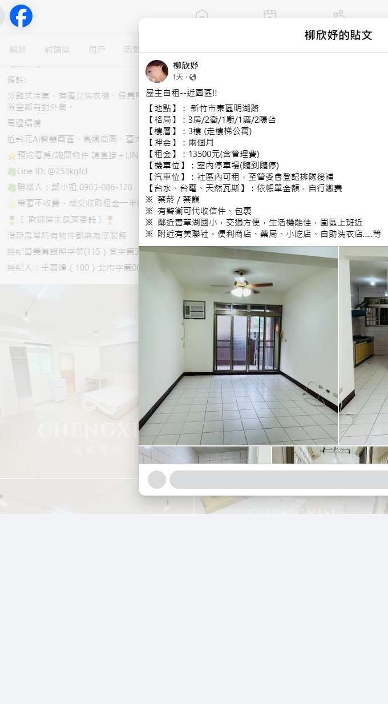 看原始刊登 → 查看貼文原文柳欣妤 屋主自租--近園區!! 【地點】： 新竹市東區明湖路 【格局】：3房/2衛/1廚/1廳/2陽台 【樓層】：3樓 (走樓梯公寓) 【押金】：兩個月 【租金】：13500元(含管理費) 【機車位】：室內停車場(隨到隨停) 【汽車位】：社區內可租，至管委會登記排隊後補 【台水、台電、天然瓦斯】：依帳單金額，自行繳費 ※ 禁菸 / 禁寵 ※ 有警衛可代收信件、包裹 ※ 鄰近青草湖國小，交通方便，生活機能佳，園區上班近 ※ 附近有美聯社、便利商店、藥局、小吃店、自助洗衣店…..等 顯示較少 +9 查看更多留言 Rachel Huang 請問何時可看 謝謝 回覆 查看1則回覆 Feng Ying 我想去看 回覆 查看1則回覆 公開留言…… | 13,500 HTTP 400 | 3房—廳2衛 完全符合 | 3F | 未註明 | 未註明 | 未註明 | 未提及 | FB 貼文 此物件未公開電話，請點標題到原網站聯絡 |
| 15,000 | 3房2廳2衛 完全符合 | 3 / 5 | 無 | 有 | 有 | 未提及 | ||
| 15,000 | 3房2廳2衛 完全符合 | 3/5樓 | 未註明 | 無 | 有 | 未提及 | ||
| 16,000 | 3房2廳2衛 完全符合 | 5F/5F | 無 | 無 | 未註明 | 不可 | 仲介 李小姐 · 大管家租賃住宅代管有限公司 | |
| 17,000 | 3房2廳2衛 完全符合 | 5F/11F | 租金已含 | 有 | 無 | 不可 | 屋主 林先生 | |
 | 18,000 | 3房2廳2衛 完全符合 | 5F/5F | 無 | 無 | 未註明 | 未提及 | 仲介 朱先生 · 大管家租賃住宅代管有限公司 |
| 18,000 | 3房2廳2衛 完全符合 | 4F/5F | 未註明 | 無 | 未註明 | 未提及 | 仲介 陳先生 · 聯合房屋 | |
| 18,000 | 3房2廳2衛 完全符合 | 5F/6F | 租金已含 | 有 | 未註明 | 未提及 | 仲介 葉先生 · 聚鑫企業社好市家房屋 | |
| 18,000 | 3房2廳2衛 完全符合 | 7F/12F | 1,305元/月 | 有 | 未註明 | 不可 | 仲介 楊小姐 · 大管家租賃住宅代管有限公司 | |
 | 19,000 已下架(404) | 3房2廳2衛 完全符合 | 1F/5F | 無 | 無 | 無 | 未提及 | 仲介 徐先生 · 仲介公司 |
| 19,000 已下架(404) | 3房2廳2衛 完全符合 | 1F/5F | 無 | 無 | 無 | 未提及 | 仲介 徐先生 · 仲介公司 | |
| 19,500 | 3房2廳2衛 完全符合 | 7F/12F | 1,305元/月 | 有 | 未註明 | 不可 | 仲介 楊小姐 · 大管家租賃住宅代管有限公司 | |
| 20,000 | 3房2廳2衛 完全符合 | 2F/5F | 無 | 無 | 未註明 | 未提及 | 仲介 陳捷宥 · 包租代管租賃買賣 | |
| 20,000 已下架(404) | 3房2廳2衛 完全符合 | 4F/6F | 2,500元/月 | 有 | 有 | 未提及 | 仲介 張先生-新竹租屋公司 · 新竹房屋仲介 | |
| 20,000 已下架(404) | 3房2廳2衛 完全符合 | 4F/5F | 未註明 | 無 | 有 | 未提及 | 仲介 陳先生 · 大管家房屋管理家樂仲介有限公司 | |
| 20,000 已下架(404) | 3房2廳2衛 完全符合 | 7F/12F | 480元/月 | 有 | 未註明 | 不可 | 仲介 王先生 · 兆基屋管股份有限公司 | |
| 20,000 已下架(404) | 3房2廳2衛 完全符合 | 3F/5F | 1,200元/月 | 無 | 有 | 未提及 | 仲介 林先生 · 科園房屋 | |
| 20,000 | 3房2廳2衛 完全符合 | 8F/10F | 2,358元/月 | 有 | 未註明 | 有提及(需確認) | 仲介 黃先生 · 全球不動產經紀有限公司 | |
| 20,000 | 3房2廳2衛 完全符合 | 整棟/2F | 未註明 | 無 | 未註明 | 未提及 | 仲介 吳小姐 · 千宅不動產經紀有限公司 | |
| 20,000 | 3房2廳2衛 完全符合 | 4F/5F | 300元/月 | 無 | 有 | 未提及 | 仲介 姜先生 · 展懿不動產經紀有限公司 | |
| 20,000 | 3房2廳2衛 完全符合 | 4F/5F | 未註明 | 無 | 未註明 | 未提及 | 仲介 丁先生 · 展益不動產經紀有限公司 | |
| 20,000 | 3房2廳2衛 完全符合 | 8F/10F | 2,358元/月 | 有 | 未註明 | 不可 | 仲介 國小姐 · 全球不動產經紀有限公司 | |
| 20,000 | 3房2廳2衛 完全符合 | 5F/5F | 無 | 無 | 未註明 | 未提及 | 仲介 蔡先生 · 忻居不動產仲介事業有限公司 | |
| 21,000 已下架(404) | 3房2廳2衛 完全符合 | 2F/5F | 未註明 | 有 | 有 | 未提及 | 仲介 楊小姐 · 大管家租賃住宅代管有限公司 | |
| 22,000 | 3房2廳2衛 完全符合 | 7F/7F | 租金已含 | 有 | 有 | 未提及 | 仲介 宋先生 · 大管家租賃住宅代管有限公司 | |
| 22,000 | 3房2廳2衛 完全符合 | 6F/8F | 1,200元/月 | 有 | 未註明 | 不可 | 仲介 許先生 · 兆基屋管股份有限公司 | |
| 22,000 | 3房2廳2衛 完全符合 | 2/5樓 | 未註明 | 未註明 | 未註明 | 未提及 | 此物件未公開電話，請點標題到原網站聯絡 | |
| 22,000 | 3房2廳2衛 完全符合 | 2F/11F | 租金已含 | 無 | 有 | 未提及 | 仲介 葉先生 · 聚鑫企業社好市家房屋 | |
| 22,000 | 3房2廳2衛 完全符合 | 3F/8F | 租金已含 | 有 | 未註明 | 未提及 | 仲介 藍先生 · 昇玖專業不動產仲介經紀有限公司 | |
| 22,000 | 3房2廳2衛 完全符合 | 4F/5F | 無 | 無 | 未註明 | 未提及 | 屋主 鄭小姐 | |
| 22,500 | 3房2廳2衛 完全符合 | 4F/12F | 1,500元/月 | 有 | 未註明 | 不可 | 仲介 楊小姐 · 大管家租賃住宅代管有限公司 | |
| 22,999 已下架(404) | 3房2廳2衛 完全符合 | 5F/10F | 1,500元/月 | 有 | 未註明 | 未提及 | 仲介 黃小姐 · 臻愛房屋 | |
| 22,999 已下架(404) | 3房2廳2衛 完全符合 | 6F/10F | 1,500元/月 | 有 | 未註明 | 未提及 | 仲介 黃小姐 · 臻愛房屋 | |
 | 23,000 已下架(404) | 3房2廳2衛 完全符合 | 9F/9F | 2,000元/月 | 有 | 有 | 未提及 | 仲介 張小姐 · 立城不動產有限公司 |
 | 23,000 已下架(404) | 3房2廳2衛 完全符合 | 3F/5F | 租金已含 | 有 | 有 | 未提及 | 仲介 劉小姐 · 盛宇開發有限公司 |
| 23,000 已下架(404) | 3房2廳2衛 完全符合 | 6F/12F | 1,500元/月 | 有 | 未註明 | 未提及 | 仲介 劉小姐 · 宅吉屋不動產經紀有限公司 | |
| 23,000 已下架(404) | 3房2廳2衛 完全符合 | 9F/9F | 2,000元/月 | 有 | 有 | 未提及 | 屋主 楊小姐 | |
| 23,000 | 3房2廳2衛 完全符合 | 11F/12F | 2,871元/月 | 有 | 無 | 未提及 | 屋主 陳先生 | |
| 23,000 | 3房2廳2衛 完全符合 | 9/9樓 | 未註明 | 有 | 未註明 | 未提及 | 此物件未公開電話，請點標題到原網站聯絡 | |
| 23,000 | 3房2廳2衛 完全符合 | 3/7樓 | 未註明 | 未註明 | 未註明 | 未提及 | 此物件未公開電話，請點標題到原網站聯絡 | |
| 23,000 | 3房2廳2衛 完全符合 | 2F/5F | 200元/月 | 無 | 未註明 | 未提及 | 代理人 陳先生 | |
| 23,000 | 3房2廳2衛 完全符合 | 8F/8F | 2,450元/月 | 有 | 有 | 未提及 | 仲介 賴小姐 · 全球不動產 | |
| 23,000 | 3房2廳2衛 完全符合 | 8F/8F | 2,450元/月 | 有 | 有 | 未提及 | 仲介 杜小姐 · 大新竹地產開發有限公司 | |
| 23,000 | 3房2廳2衛 完全符合 | 8/8樓 | 2450元 | 有 | 有 | 未提及 | ||
 | 23,000 已下架(404) | 3房2廳2衛 完全符合 | 8F/8F | 租金已含 | 有 | 有 | 未提及 | 仲介 江先生 · 王淑美 |
| 23,000 已下架(404) | 3房2廳2衛 完全符合 | 8F/8F | 租金已含 | 有 | 有 | 未提及 | 仲介 江先生 · 王淑美 | |
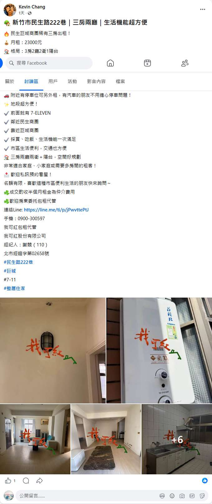 看原始刊登 → 查看貼文原文Kevin Chang 新竹市民生路222巷｜三房兩廳｜生活機能超方便 民生巨城商圈稀有三房出租！ 月租：23000元 格局：3房2廳2衛1陽台 水電：台水、台電 網路：包網路 管理費：每月200元 瓦斯：依實際使用自行繳費 附近有停車位可另外租，有汽車的朋友不用擔心停車問題！ 地段超方便！ 前面就有 7-ELEVEN 鄰近民生商圈 靠近巨城商圈 採買、吃飯、生活機能一次滿足 市區生活便利，交通也方便 三房兩廳兩衛＋陽台，空間好規劃 非常適合家庭、小家庭或需要多房間的租客！ 歡迎私訊預約看屋！ 名額有限，喜歡這種市區便利生活的朋友快來詢問～ 成交酌收半個月租金為仲介費用 歡迎房東委托包租代管 連絡Line: 手機：0900-300597 我可紅包租代管 我可紅股份有限公司 經紀人：謝競（110） 北市經證字第02658號 #民生路222巷 #巨城 #7-11 #整層住家 +6 公開留言…… | 23,000 | 3房2廳2衛 完全符合 | — | 200元 | 未註明 | 未註明 | 未提及 | FB 貼文 |
| 24,000 已下架(404) | 3房2廳2衛 完全符合 | 5F/7F | 2,333元/月 | 有 | 有 | 未提及 | 仲介 吳小姐 · 大管家租賃住宅代管有限公司 | |
| 24,000 已下架(404) | 3房2廳2衛 完全符合 | 4F/7F | 1,800元/月 | 有 | 有 | 未提及 | 屋主 葉先生 | |
| 24,000 已下架(404) | 3房2廳2衛 完全符合 | 1F/4F | 無 | 無 | 未註明 | 未提及 | 仲介 陳先生 · 興築家不動產有限公司 | |
| 24,000 已下架(404) | 3房2廳2衛 完全符合 | 4F/7F | 2,500元/月 | 有 | 有 | 未提及 | 仲介 徐先生 · 澄新房屋股份有限公司 | |
| 24,000 已下架(404) | 3房2廳2衛 完全符合 | 1F/6F | 租金已含 | 無 | 未註明 | 未提及 | 代理人 李雅雅 | |
 | 24,000 已下架(404) | 3房2廳2衛 完全符合 | 1F/4F | 租金已含 | 無 | 未註明 | 未提及 | 仲介 蘇小姐 · 齊家房屋有限公司 |
| 24,000 | 3房2廳2衛 完全符合 | 5F/6F | 未註明 | 有 | 有 | 未提及 | 仲介 陳小姐 · 盛宇開發有限公司 | |
| 24,000 | 3房2廳2衛 完全符合 | 5/6樓 | 未註明 | 有 | 未註明 | 未提及 | 此物件未公開電話，請點標題到原網站聯絡 | |
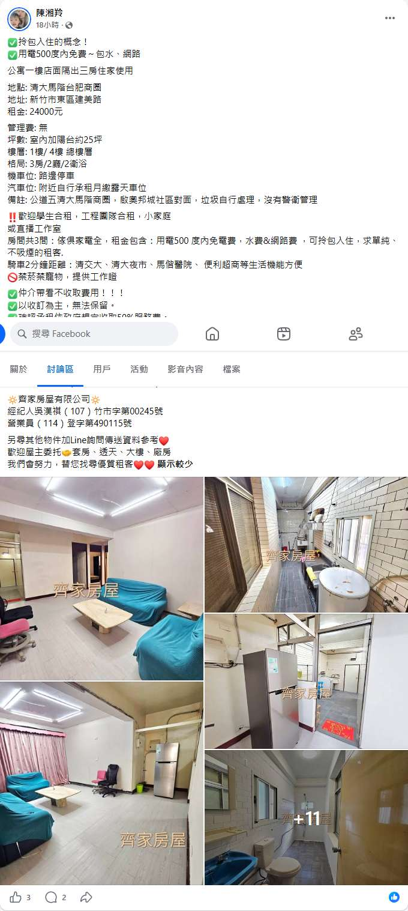 看原始刊登 → 查看貼文原文陳湘羚 拎包入住的概念！ 用電500度內免費～包水、網路 公寓一樓店面隔出三房住家使用 地點: 清大馬階台肥商圈 地址: 新竹市東區建美路 租金: 24000元 管理費: 無 坪數: 室內加陽台約25坪 樓層: 1樓/ 4樓 總樓層 格局: 3房/2廳/2衛浴 機車位: 路邊停車 汽車位: 附近自行承租月繳露天車位 備註: 公道五清大馬階商圈，啟奧邦城社區對面，垃圾自行處理，沒有警衛管理 歡迎學生合租，工程團隊合租，小家庭 或直播工作室 房間共3間：傢俱家電全，租金包含：用電500 度內免電費，水費&網路費 ，可拎包入住，求單純、 不吸煙的租客. 騎車2分鐘距離：清交大、清大夜市、馬偕醫院、 便利超商等生活機能方便 禁菸禁寵物，提供工作證 仲介帶看不收取費用！！！ 以收訂為主，無法保留。 確認承租依政府規定收取50%服務費。 下訂後7-10天內需起租。 有的物件需3天內起租。 沒有短租物件。 聯絡帶看：0915003249，陳小姐 Line:0928sasha（加line詢問立即回覆） 齊家房屋有限公司 經紀人吳漢祺（107）竹市字第00245號 營業員（114）登字第490115號 另尋其他物件加Line詢問傳送資料參考 歡迎屋主委托 套房、透天、大樓、廠房 我們會努力，替您找尋優質租客 顯示較少 +11 | 24,000 HTTP 400 | 3房—廳2衛 完全符合 | 1F/4F | 無 | 未註明 | 未註明 | 未提及 | FB 貼文 |
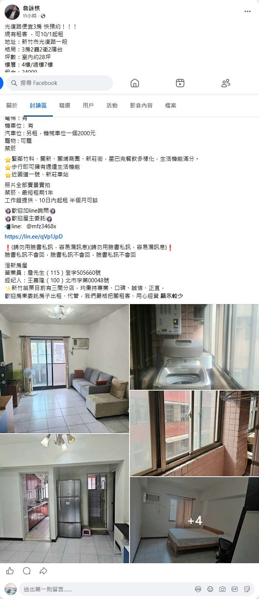 看原始刊登 → 查看貼文原文詹詠棋 光復路便宜3房 快預約！！！ 現有租客 ，可10/1起租 地址：新竹市光復路一段 格局：3房2廳2衛2陽台 坪數：室內約28坪 樓層：4樓/總樓7樓 租金：24000 租金含：機車位 管理費：約2000 電費：台電帳單 水費：台水帳單 天然氣: 天然氣帳單 電梯：有 機車位 : 有 汽車位 : 另租，機械車位一個2000元 寵物 : 可寵 禁菸 緊鄰竹科、關新、關埔商圈、新莊街，星巴克餐飲多樣化，生活機能滿分。 步行即可擁有週邊生活機能 近國道一號、新莊車站 照片全部實景實拍 禁菸、最短租期1年 工作證提供、10日內起租 半個月可談 歡迎加line詢問 歡迎屋主委託 line: @mfz3468x (請勿用臉書私訊，容易漏訊息)(請勿用臉書私訊，容易漏訊息) 臉書私訊不會回，臉書私訊不會回，臉書私訊不會回 澄新房屋 營業員：詹先生（115）登字505660號 經紀人：王嘉隆（100）北市字第00048號 新竹苗栗目前有三間分店，均秉持專業、口碑、誠信、正直， 歡迎房東委託房子出租、代管，我們嚴格把關租客、用心經營 顯示較少 +4 送出第一則留言…… | 24,000 | 3房—廳2衛 完全符合 | 4F | 2000 | 未註明 | 有 | 未提及 | FB 貼文 此物件未公開電話，請點標題到原網站聯絡 |
| 25,000 已下架(404) | 3房2廳2衛 完全符合 | 2F/7F | 1,500元/月 | 有 | 未註明 | 未提及 | 仲介 朱先生 · 大管家租賃住宅代管有限公司 | |
| 25,000 | 3房2廳2衛 完全符合 | 3F/5F | 500元/月 | 有 | 未註明 | 未提及 | 屋主 王先生 | |
| 25,000 | 3房2廳2衛 完全符合 | 1/5樓 | 未註明 | 未註明 | 未註明 | 未提及 | 此物件未公開電話，請點標題到原網站聯絡 | |
| 25,000 已下架(404) | 3房2廳2衛 完全符合 | 2F/8F | 3,000元/月 | 有 | 有 | 未提及 | 仲介 鄭先生 · 澄新房屋 | |
| 25,000 已下架(404) | 3房2廳2衛 完全符合 | 頂層加蓋/10F | 3,000元/月 | 有 | 有 | 未提及 | 仲介 洪女士 · 澄新房屋股份有限公司 | |
| 25,000 已下架(404) | 3房2廳2衛 完全符合 | 2F/9F | 3,000元/月 | 有 | 有 | 未提及 | 仲介 洪小姐 · 澄新房屋股份有限公司 | |
| 25,000 已下架(404) | 3房2廳2衛 完全符合 | 5F/5F | 租金已含 | 有 | 有 | 未提及 | 屋主 王小姐（屋主自租，房仲勿 | |
| 25,000 | 3房2廳2衛 完全符合 | 4F/4F | 未註明 | 無 | 未註明 | 未提及 | 仲介 黃先生 · 家樂旺國際地產開發 | |
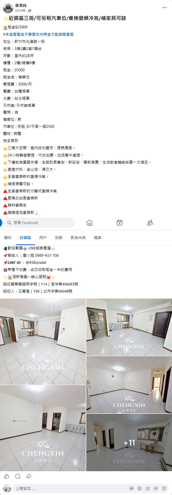 看原始刊登 → 查看貼文原文詹易純 近園區三房/可另租汽車位/會換變頻冷氣/補家具可談 租金$25000 #本房屋看房不需要先付押金才能排隊看屋 地址：新竹市光復路一段 格局：3房2廳2衛1陽台 坪數：室內約28坪 樓層：2樓/總樓8樓 租金：25000 租金含：機車位 管理費：3000/月 電費：台電帳單 水費：台水帳單 天然氣: 天然氣帳單 電梯：有 機車位 : 無 汽車位 : 另租, B1平面一個2500 寵物 : 禁寵 完全禁菸 三房大空間、室內採光豐沛、透亮通風。 24小時警衛管理、代收包裹、垃圾集中處理。 下樓就有黃昏市場、走路到長春街、新莊街、關新商圈、生活飲食機能採買一次滿足。 直進竹科、金山街、清交大。 全室會換新的變頻冷氣。 補傢俱電可談。 全室會換新的分離式變頻冷氣 廚房灶台面會換新 雜物會搬走 暗暗燈泡會換新 ————————————————————— 本物件需十天內起租 最短租期為一年 ————————————————————— 歡迎截圖 𝖫𝖨𝖭𝖤諮詢看屋 聯絡人：詹小姐 0989-433-706 𝙇𝙄𝙉𝙀 𝙄𝘿 ：@458qvwkd 帶看不收費，成交收取租金一半的費用 澄新房屋—誠心服務 經紀營業員證照字號（𝟣𝟣𝟦）登字第𝟦𝟫𝟨𝟢𝟢𝟥號 經紀人：王嘉隆（𝟣𝟢𝟢）北市字第𝟢𝟢𝟢𝟦𝟪號 +11 公開留言…… | 25,000 HTTP 400 | 3房—廳2衛 完全符合 | 2F | 3000 | 未註明 | 未註明 | 未提及 | FB 貼文 |
| 25,000 HTTP 400 | 3房2廳2衛 完全符合 | 8F | 未註明 | 未註明 | 未註明 | 未提及 | FB 貼文 此物件未公開電話，請點標題到原網站聯絡 | |
| 25,500 | 3房2廳2衛 完全符合 | 4F/6F | 2,500元/月 | 有 | 有 | 不可 | 仲介 黃先生 · 大管家租賃住宅代管有限公司 | |
 | 26,000 | 3房2廳2衛 完全符合 | 3F/5F | 無 | 無 | 未註明 | 未提及 | 仲介 朱先生 · 大管家租賃住宅代管有限公司 |
 | 26,000 已下架(404) | 3房2廳2衛 完全符合 | 3F/9F | 租金已含 | 有 | 未註明 | 未提及 | 仲介 陳小姐 · 大管家租賃住宅代管有限公司 |
| 26,000 已下架(404) | 3房2廳2衛 完全符合 | 5F/12F | 租金已含 | 有 | 有 | 未提及 | 仲介 羅先生 · 新居不動產仲介事業有限公司 | |
| 26,000 已下架(404) | 3房2廳2衛 完全符合 | 4F/6F | 租金已含 | 有 | 未註明 | 未提及 | 仲介 林先生 · 上等不動產 | |
| 26,000 | 3房2廳2衛 完全符合 | 6F/8F | 1,600元/月 | 有 | 有 | 未提及 | 仲介 曾先生 · 家樂仲介有限公司 | |
| 26,000 | 3房2廳2衛 完全符合 | 1F/6F | 租金已含 | 有 | 未註明 | 未提及 | 仲介 莊小姐 · 勁富不動產 | |
 | 26,000 | 3房2廳2衛 完全符合 | 2F/15F | 租金已含 | 有 | 有 | 未提及 | 仲介 梁先生 · 蝸居不動產有限公司 |
| 26,000 已下架 | 3房2廳2衛 完全符合 | 4 / 6 | 未註明 | 有 | 未註明 | 未提及 | ||
| 26,000 | 3房2廳2衛 完全符合 | 14/23樓 | 未註明 | 有 | 未註明 | 未提及 | 此物件未公開電話，請點標題到原網站聯絡 | |
| 26,000 已下架(404) | 3房2廳2衛 完全符合 | 4F/7F | 租金已含 | 有 | 有 | 未提及 | 仲介 凌小姐 · 澄新房屋股份有限公司 | |
| 26,000 已下架(404) | 3房2廳2衛 完全符合 | 3F/5F | 租金已含 | 有 | 有 | 未提及 | 屋主 何先生 | |
 | 26,000 | 3房2廳2衛 完全符合 | 1F/9F | 未註明 | 有 | 未註明 | 未提及 | 仲介 楊先生 · 偉鈞不動產仲介經紀有限公司 |
 | 26,000 | 3房2廳2衛 完全符合 | 1F/8F | 3,000元/月 | 有 | 未註明 | 未提及 | 仲介 洪先生 · 義城有限公司 |
| 26,000 | 3房2廳2衛 完全符合 | 1/8樓 | 未註明 | 有 | 有 | 未提及 | ||
| 26,000 | 3房2廳2衛 完全符合 | 10F/21F | 3,700元/月 | 有 | 有 | 未提及 | 仲介 張小姐 · 于荷不動產仲介經紀有限公司 | |
| 26,000 | 3房2廳2衛 完全符合 | 3 / 14 | 未註明 | 有 | 有 | 未提及 | ||
| 26,000 HTTP 400 | 3房—廳2衛 完全符合 | 6F | 未註明 | 未註明 | 未註明 | 未提及 | FB 貼文 | |
| 26,000 | 3房2廳2衛 完全符合 | 3F/14F | 租金已含 | 有 | 有 | 未提及 | 屋主 陳小姐 | |
 | 26,000 | 3房2廳2衛 完全符合 | 3F/6F | 租金已含 | 有 | 未註明 | 未提及 | 仲介 賀先生 · 科園房屋 |
| 26,500 | 3房2廳2衛 完全符合 | 14F/23F | 2,200元/月 | 有 | 有 | 未提及 | 仲介 陳小姐 · 誠田不動產 | |
| 26,500 | 3房2廳2衛 完全符合 | 5F/5F | 無 | 無 | 未註明 | 未提及 | 屋主 郭先生 | |
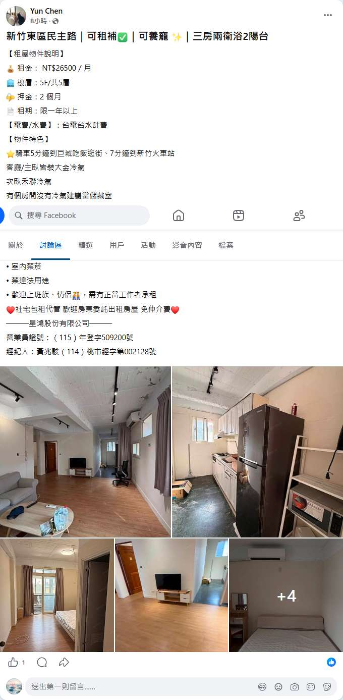 看原始刊登 → 查看貼文原文Yun Chen 新竹東區民主路｜可租補 ｜可養寵 ｜三房兩衛浴2陽台 【租屋物件說明】 租金： NT$26500／月 樓層：5F/共5層 押金：2 個月 租期：限一年以上 【電費/水費】：台電台水計費 【物件特色】 騎車5分鐘到巨城吃飯逛街、7分鐘到新竹火車站 客廳/主臥皆裝大金冷氣 次臥禾聯冷氣 有個房間沒有冷氣建議當儲藏室 傢俱全（包含冰箱洗衣機電視床架） 一卡皮箱即可進住 位於5樓，需步行樓梯，適合平時久坐～不介意爬樓梯的你 【租賃須知】 • 室內禁菸 • 禁違法用途 • 歡迎上班族、情侶 ，需有正當工作者承租 社宅包租代管 歡迎房東委託出租房屋 免仲介費 ———星鴻股份有限公司——— 營業員證號：（115）年登字509200號 經紀人：黃兆駿（114）桃市經字第002128號 +4 送出第一則留言…… | 26,500 HTTP 400 | 3房—廳2衛 完全符合 | 5F | 未註明 | 未註明 | 未註明 | 未提及 | FB 貼文 此物件未公開電話，請點標題到原網站聯絡 |
| 26,800 | 3房2廳2衛 完全符合 | 4F/12F | 2,100元/月 | 有 | 未註明 | 未提及 | 屋主 黃先生 | |
| 27,000 已下架(404) | 3房2廳2衛 完全符合 | 3F/7F | 租金已含 | 有 | 有 | 未提及 | 屋主 楊先生 | |
| 27,000 | 3房2廳2衛 完全符合 | 3F/7F | 4,000元/月 | 有 | 未註明 | 未提及 | 仲介 宋先生 · 大管家租賃住宅代管有限公司 | |
| 27,000 | 3房2廳2衛 完全符合 | 11/12樓 | 未註明 | 有 | 未註明 | 未提及 | 此物件未公開電話，請點標題到原網站聯絡 | |
| 27,000 | 3房2廳2衛 完全符合 | 9F/12F | 3,400元/月 | 有 | 有 | 未提及 | 屋主 郭先生 | |
 | 28,000 已下架(404) | 3房2廳2衛 完全符合 | 11F/13F | 租金已含 | 有 | 未註明 | 未提及 | 仲介 值班人員 · 澄新房屋 |
| 28,000 已下架(404) | 3房2廳2衛 完全符合 | 12F/15F | 租金已含 | 有 | 未註明 | 未提及 | 仲介 葉先生 · 聚鑫企業社好市家房屋 | |
| 28,000 已下架(404) | 3房2廳2衛 完全符合 | 12F/13F | 租金已含 | 有 | 未註明 | 未提及 | 仲介 葉先生 · 聚鑫企業社好市家房屋 | |
| 28,000 已下架(404) | 3房2廳2衛 完全符合 | 7F/14F | 租金已含 | 有 | 未註明 | 未提及 | 代理人 唐先生 | |
| 28,000 已下架(404) | 3房2廳2衛 完全符合 | 7F/15F | 租金已含 | 有 | 有 | 未提及 | 仲介 杜先生 · 品宅不動產仲介經紀有限公司 | |
 | 28,000 已下架(404) | 3房2廳2衛 完全符合 | 7F/15F | 租金已含 | 有 | 有 | 未提及 | 仲介 杜先生 · 品宅不動產仲介經紀有限公司 |
| 28,000 已下架(404) | 3房2廳2衛 完全符合 | 5F/7F | 1,370元/月 | 有 | 有 | 未提及 | 仲介 林先生 · 鑫承家不動產仲介經紀有限公司 | |
 | 28,000 已下架(404) | 3房2廳2衛 完全符合 | 7F/15F | 租金已含 | 有 | 有 | 未提及 | 仲介 杜先生 · 品宅不動產仲介經紀有限公司 |
| 28,000 已下架(404) | 3房2廳2衛 完全符合 | 3F/8F | 1,431元/月 | 有 | 有 | 未提及 | 仲介 張小姐 · 彙家不動產開發有限公司 | |
| 28,000 | 3房2廳2衛 完全符合 | 3 / 7 | 另計(金額未公開) | 有 | 未註明 | 未提及 | ||
| 28,000 | 3房2廳2衛 完全符合 | 3 / 5 | 無 | 有 | 未註明 | 未提及 | ||
| 28,000 | 3房2廳2衛 完全符合 | 3/5樓 | 未註明 | 未註明 | 未註明 | 未提及 | 此物件未公開電話，請點標題到原網站聯絡 | |
| 28,000 | 3房2廳2衛 完全符合 | 3/7樓 | 未註明 | 有 | 未註明 | 未提及 | 此物件未公開電話，請點標題到原網站聯絡 | |
| 28,000 | 3房2廳2衛 完全符合 | 9/12樓 | 未註明 | 有 | 未註明 | 未提及 | 此物件未公開電話，請點標題到原網站聯絡 | |
| 28,000 已下架(404) | 3房2廳2衛 完全符合 | 6F/10F | 租金已含 | 有 | 有 | 未提及 | 仲介 吳先生 · 全家房屋 | |
| 28,000 | 3房2廳2衛 完全符合 | 3F/7F | 未註明 | 有 | 未註明 | 未提及 | 仲介 陳先生 · 台勝不動產仲介公司 | |
| 28,000 | 3房2廳2衛 完全符合 | 4F/13F | 租金已含 | 有 | 有 | 不可 | 代理人 戴小姐 | |
| 28,000 已下架(404) | 3房2廳2衛 完全符合 | 2F/8F | 租金已含 | 有 | 有 | 未提及 | 仲介 凌小姐 · 澄新房屋股份有限公司 | |
| 28,000 | 3房2廳2衛 完全符合 | 3F/7F | 1,430元/月 | 有 | 有 | 未提及 | 仲介 吳佳穎 · 彙家不動產開發有限公司 | |
 | 28,000 已下架(404) | 3房2廳2衛 完全符合 | 6F/10F | 租金已含 | 有 | 有 | 未提及 | 仲介 吳先生 · 全家房屋 |
| 28,000 | 3房2廳2衛 完全符合 | 11F/12F | 520元/月 | 有 | 有 | 未提及 | 屋主 張先生 | |
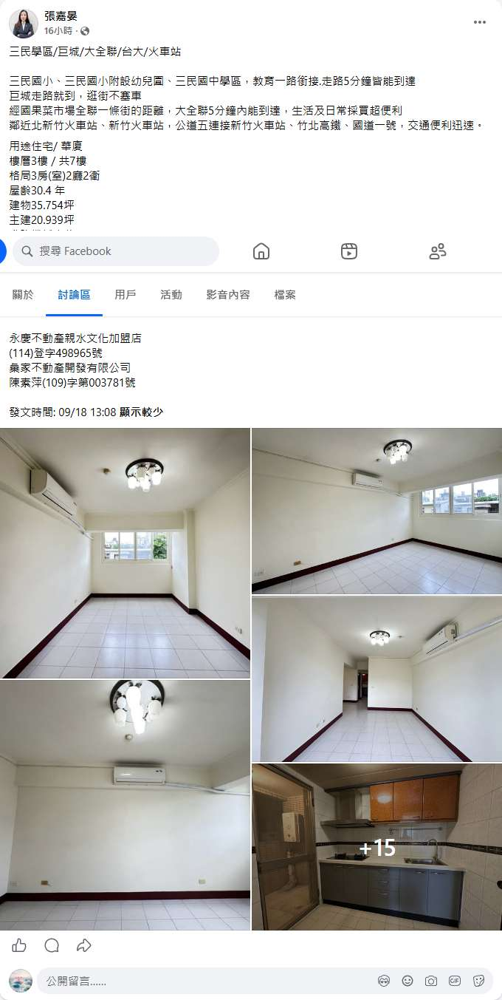 看原始刊登 → 查看貼文原文張嘉晏 三民學區/巨城/大全聯/台大/火車站 三民國小、三民國小附設幼兒園、三民國中學區，教育一路銜接.走路5分鐘皆能到達 巨城走路就到，逛街不塞車 經國果菜市場全聯一條街的距離，大全聯5分鐘內能到達，生活及日常採買超便利 鄰近北新竹火車站、新竹火車站，公道五連接新竹火車站、竹北高鐵、國道一號，交通便利迅速。 用途住宅/ 華廈 樓層3樓 / 共7樓 格局3房(室)2廳2衛 屋齡30.4 年 建物35.754坪 主建20.939坪 升降機械車位 租金28000 管理費4291/季繳 賞屋專線：0919969945 張嘉晏 LINE ID: annchang729 永慶不動產親水文化加盟店 (114)登字498965號 彙家不動產開發有限公司 陳素萍(109)字第003781號 發文時間: 09/18 13:08 顯示較少 +15 公開留言…… | 28,000 HTTP 400 | 3房—廳2衛 完全符合 | 3F | 4291 | 未註明 | 有 | 未提及 | FB 貼文 |
| 28,500 | 3房2廳2衛 完全符合 | 11F/21F | 租金已含 | 有 | 有 | 未提及 | 仲介 荷蘭村達人林冠亨 · 荷蘭村社區達人 | |
| 28,500 | 3房2廳2衛 完全符合 | 12F/15F | 租金已含 | 有 | 未註明 | 未提及 | 仲介 葉先生 · 聚鑫企業社好市家房屋 | |
| 28,700 | 3房2廳2衛 完全符合 | 3F/5F | 租金已含 | 無 | 有 | 未提及 | 仲介 藍先生 · 昇玖專業不動產仲介經紀有限公司 | |
| 28,700 | 3房2廳2衛 完全符合 | 3F/5F | 租金已含 | 無 | 有 | 未提及 | 仲介 曾先生 · 昇玖專業不動產仲介經紀有限公司 | |
 | 29,000 | 3房2廳2衛 完全符合 | 5F/6F | 2,500元/月 | 有 | 有 | 有提及(需確認) | 仲介 温先生 · 大管家租賃住宅代管有限公司 |
 | 29,000 已下架(404) | 3房2廳2衛 完全符合 | 5F/6F | 2,500元/月 | 有 | 有 | 未提及 | 仲介 鄭先生 · 租事大喆物業租貸管理顧問 |
| 29,000 | 3房2廳2衛 完全符合 | 9F/12F | 1,000元/月 | 有 | 未註明 | 未提及 | 仲介 古小姐 · 家樂仲介有限公司 | |
| 29,000 | 3房2廳2衛 完全符合 | 14/20樓 | 未註明 | 有 | 未註明 | 未提及 | 此物件未公開電話，請點標題到原網站聯絡 | |
| 29,000 | 3房2廳2衛 完全符合 | 4F/6F | 租金已含 | 有 | 有 | 未提及 | 仲介 江先生 · 王淑美 | |
| 29,500 | 3房2廳2衛 完全符合 | 3/5樓 | 未註明 | 有 | 未註明 | 未提及 | 此物件未公開電話，請點標題到原網站聯絡 | |
| 29,800 | 3房2廳2衛 完全符合 | 4F/12F | 租金已含 | 無 | 未註明 | 未提及 | 屋主 張太太 | |
| 29,800 已下架(404) | 3房2廳2衛 完全符合 | 13F/14F | 租金已含 | 有 | 有 | 未提及 | 仲介 吳先生 · 星鴻股份有限公司 | |
| 30,000 | 3房2廳2衛 完全符合 | 10F/12F | 2,900元/月 | 有 | 未註明 | 未提及 | 仲介 朱先生 · 大管家租賃住宅代管有限公司 | |
| 30,000 已下架(404) | 3房2廳2衛 完全符合 | 4F/9F | 3,000元/月 | 有 | 有 | 未提及 | 仲介 姜小姐 · 易澤居房屋有限公司 | |
| 30,000 已下架(404) | 3房2廳2衛 完全符合 | 9F/10F | 2,800元/月 | 有 | 有 | 未提及 | 仲介 王小安 · 展益不動產經紀有限公司 | |
| 30,000 已下架(404) | 3房2廳2衛 完全符合 | 7F/7F | 租金已含 | 有 | 未註明 | 未提及 | 仲介 陳羿汝 · 躍馬國際土地開發有限公司 | |
| 30,000 | 3房2廳2衛 完全符合 | 9 / 13 | 另計(金額未公開) | 有 | 有 | 未提及 | ||
| 30,000 | 3房2廳2衛 完全符合 | 9/10樓 | 未註明 | 有 | 未註明 | 未提及 | 此物件未公開電話，請點標題到原網站聯絡 | |
| 30,000 | 3房2廳2衛 完全符合 | 9/10樓 | 未註明 | 未註明 | 未註明 | 未提及 | 此物件未公開電話，請點標題到原網站聯絡 | |
 | 30,000 已下架(404) | 3房2廳2衛 完全符合 | 3F/5F | 未註明 | 無 | 未註明 | 未提及 | 仲介 吳小姐 · 大管家租賃住宅代管有限公司 |
| 30,000 已下架(404) | 3房2廳2衛 完全符合 | 9F/10F | 2,800元/月 | 有 | 有 | 未提及 | 仲介 丁先生 · 展益不動產經紀有限公司 | |
| 30,000 | 3房2廳2衛 完全符合 | 2F/5F | 租金已含 | 有 | 有 | 未提及 | 屋主 何小姐 | |
| 30,000 | 3房2廳2衛 完全符合 | 2F/8F | 3,000元/月 | 有 | 未註明 | 未提及 | 仲介 劉小姐 · 澄新房屋股份有限公司 | |
| 30,000 已下架 | 3房2廳2衛 完全符合 | 9 / 10 | 另計(金額未公開) | 有 | 有 | 未提及 | ||
| 30,000 | 3房2廳2衛 完全符合 | 11F/28F | 3,000元/月 | 無 | 未註明 | 未提及 | 仲介 林先生 · 心苑不動產有限公司 | |
| 30,000 已下架(404) | 3房2廳2衛 完全符合 | 4F/24F | 3,516元/月 | 有 | 有 | 未提及 | 仲介 梁小姐 · 達豐不動產仲介經紀業 | |
| 30,000 | 3房2廳2衛 完全符合 | 11F/14F | 2,380元/月 | 有 | 有 | 未提及 | 屋主 吳先生 | |
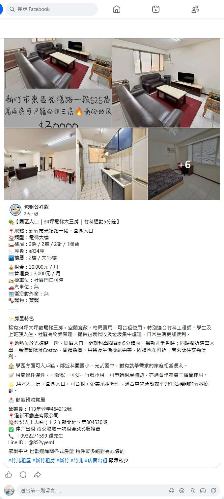 看原始刊登 → 查看貼文原文包租公祥爺 +6 包租公祥爺 【園區入口｜34坪電梯大三房｜竹科通勤5分鐘】 地點：新竹市光復路一段・園區入口 類型：電梯大樓 格局：3房／2廳／2衛／1陽台 坪數：約34坪 樓層：2樓／共15樓 租金：30,000元／月 管理費：3,000元／月 機車位：社區門口可停 汽車位：無 衛浴對外窗：無 寵物：禁寵 —— 房屋特色 稀有34坪大坪數電梯三房，空間寬敞、格局實用，可合租使用，特別適合竹科工程師、學生及上班族入住。社區有物業管理，提供包裹代收及垃圾集中處理，日常生活更加便利。 地點位於光復路一段、園區入口，距離科學園區約5分鐘內，通勤非常省時；同時鄰近清華大學、馬偕醫院及Costco，周邊採買、用餐及生活機能完善，國道也在附近，南來北往交通便利。 學區方面可入戶籍，鄰近科園國小、光武國中，對有就學需求的家庭相當便利。 租賃條件彈性，可報稅、可公司行號承租，可申請租屋補助，亦適合作為員工宿舍使用。 34坪大三房＋園區入口＋可合租＋企業承租條件，適合重視通勤效率與生活機能的竹科族群。 歡迎預約賞屋 營業員：113年登字464212號 澄新不動產有限公司 經紀人王志盛（112）新北經字第004530號 仲介出租 成交收取一次租金50%服務費 ：0932271599 鍾先生 Line ID：＠852yyeml 感謝平台 也歡迎詢問各式房型 物件眾多絕對有心儀的 #竹北租屋 #新竹租房 #新竹 #竹北 #店面出租 顯示較少 送出第一則留言…… | 30,000 HTTP 400 | 3房—廳2衛 完全符合 | 2F | 3000元 | 有 | 未註明 | 未提及 | FB 貼文 |
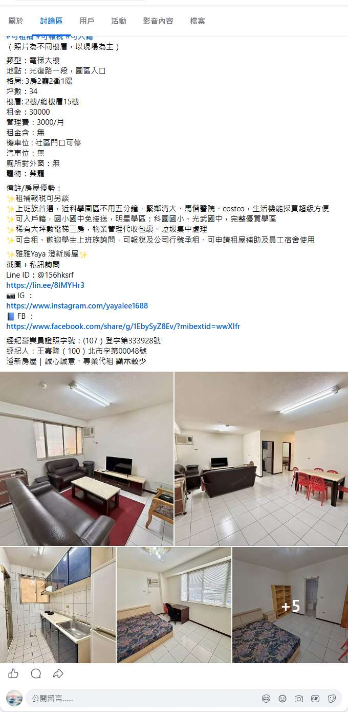 看原始刊登 → 查看貼文原文雅雅李 #可租補 #可報稅 #可入籍 （照片為不同樓層，以現場為主） 類型：電梯大樓 地點：光復路一段，園區入口 格局: 3房2廳2衛1陽 坪數：34 樓層: 2樓/總樓層15樓 租金：30000 管理費：3000/月 租金含：無 機車位 : 社區門口可停 汽車位：無 廁所對外窗：無 寵物：禁寵 備註/房屋優勢： 租補報稅可另談 上班族首選，近科學園區不用五分鐘，緊鄰清大、馬偕醫院、costco，生活機能採買超級方便 可入戶籍，國小國中免接送，明星學區：科園國小、光武國中，完整優質學區 稀有大坪數電梯三房，物業管理代收包裹、垃圾集中處理 可合租、歡迎學生上班族詢問，可報稅及公司行號承租、可申請租屋補助及員工宿舍使用 雅雅Yaya 澄新房屋 截圖＋私訊詢問 Line ID：@156hksrf IG ： FB ： 經紀營業員證照字號：(107）登字第333928號 經紀人：王嘉隆（100）北市字第00048號 澄新房屋｜誠心誠意・專業代租 顯示較少 +5 公開留言…… | 30,000 | 3房2廳2衛 完全符合 | 34F | 3000 | 有 | 未註明 | 未提及 | FB 貼文 此物件未公開電話，請點標題到原網站聯絡 |
| 30,000 | 3房2廳2衛 完全符合 | 3F/5F | 無 | 無 | 未註明 | 未提及 | 仲介 楊先生 · 偉鈞不動產仲介經紀有限公司 | |
| 30,000 | 3房2廳2衛 完全符合 | 12F/14F | 租金已含 | 有 | 有 | 未提及 | 仲介 劉小姐 · 樂多不動產經紀有限公司 | |
| 30,500 已下架(404) | 3房2廳2衛 完全符合 | 2F/14F | 3,150元/月 | 有 | 有 | 未提及 | 仲介 唐小姐 · 立城不動產有限公司 | |
| 30,500 | 3房2廳2衛 完全符合 | 2/14樓 | 未註明 | 有 | 未註明 | 未提及 | 此物件未公開電話，請點標題到原網站聯絡 | |
 | 31,000 已下架(404) | 3房2廳2衛 完全符合 | 3F/11F | 2,400元/月 | 有 | 有 | 未提及 | 仲介 彭先生 · 達豐不動產仲介經紀業 |
| 31,000 | 3房2廳2衛 完全符合 | 3/11樓 | 未註明 | 有 | 未註明 | 未提及 | 此物件未公開電話，請點標題到原網站聯絡 | |
| 31,000 | 3房2廳2衛 完全符合 | 3/11樓 | 未註明 | 有 | 未註明 | 未提及 | 此物件未公開電話，請點標題到原網站聯絡 | |
| 32,000 已下架(404) | 3房2廳2衛 完全符合 | 3F/5F | 租金已含 | 無 | 有 | 未提及 | 仲介 藍先生 · 昇玖專業不動產仲介經紀有限公司 | |
 | 32,000 | 3房2廳2衛 完全符合 | 7F/14F | 3,982元/月 | 有 | 有 | 不可 | 仲介 余先生 · 立社不動產有限公司 |
| 32,000 | 3房2廳2衛 完全符合 | 6F/12F | 1,200元/月 | 有 | 未註明 | 未提及 | 仲介 范小姐 · 大管家租賃住宅代管有限公司 | |
 | 32,000 | 3房2廳2衛 完全符合 | 3F/5F | 租金已含 | 有 | 有 | 未提及 | 仲介 沈先生 · 築駿不動產有限公司 |
 | 32,000 已下架(404) | 3房2廳2衛 完全符合 | 3F/4F | 無 | 無 | 未註明 | 未提及 | 屋主 房東 |
| 32,000 | 3房2廳2衛 完全符合 | 3 / 5 | 另計(金額未公開) | 有 | 有 | 未提及 | ||
| 32,000 已下架 | 3房2廳2衛 完全符合 | 9 / 13 | 另計(金額未公開) | 有 | 未註明 | 未提及 | ||
| 32,000 | 3房2廳2衛 完全符合 | 3/5樓 | 未註明 | 未註明 | 未註明 | 未提及 | 此物件未公開電話，請點標題到原網站聯絡 | |
| 32,000 | 3房2廳2衛 完全符合 | 9/14樓 | 未註明 | 有 | 未註明 | 未提及 | 此物件未公開電話，請點標題到原網站聯絡 | |
| 32,000 已下架(404) | 3房2廳2衛 完全符合 | 4F/24F | 3,516元/月 | 有 | 有 | 未提及 | 仲介 梁小姐 · 達豐不動產仲介經紀業 | |
| 32,000 已下架(404) | 3房2廳2衛 完全符合 | 4F/24F | 3,516元/月 | 有 | 有 | 未提及 | 仲介 王先生 · 達豐不動產仲介經紀業 | |
| 32,000 | 3房2廳2衛 完全符合 | 13F/14F | 2,620元/月 | 有 | 有 | 不可 | 仲介 王先生 · 兆基屋管股份有限公司 | |
| 32,000 | 3房2廳2衛 完全符合 | 3F/5F | 無 | 無 | 未註明 | 未提及 | 仲介 林小姐 · 加貝不動產經紀有限公司 | |
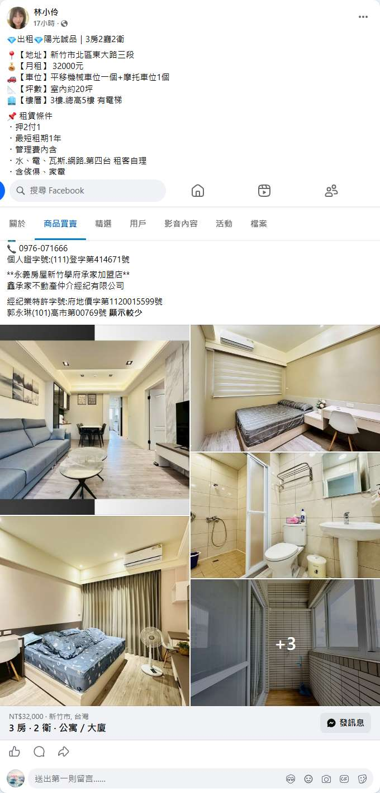 看原始刊登 → 查看貼文原文林小伶 出租 陽光誠品｜3房2廳2衛 【地址】新竹市北區東大路三段 【月租】 32000元 【車位】平移機械車位一個+摩托車位1個 【坪數】室內約20坪 【樓層】3樓.總高5樓 有電梯 租賃條件 ・押2付1 ・最短租期1年 ・管理費內含 ・水、電、瓦斯.網路.第四台 租客自理 ・含傢俱、家電 ・無管理員、有垃圾集中處理 禁菸、禁寵 ，租期最短一年 仲介帶看，成交收取租客租金50%為仲介費 需出示工作證 需出示工作證 永義房屋 新竹學府承家店-林姿伶 0976-071666 個人證字號:(111)登字第414671號 **永義房屋新竹學府承家加盟店** 鑫承家不動產仲介經紀有限公司 經紀業特許字號:府地價字第1120015599號 郭永琳(101)高市第00769號 顯示較少 +3 NT$32,000 · 新竹市, 台灣 3 房 · 2 衛 · 公寓／大廈 發訊息 送出第一則留言…… | 32,000 HTTP 400 | 3房2廳2衛 完全符合 | 3F | 含 | 有 | 有 | 未提及 | FB 貼文 |
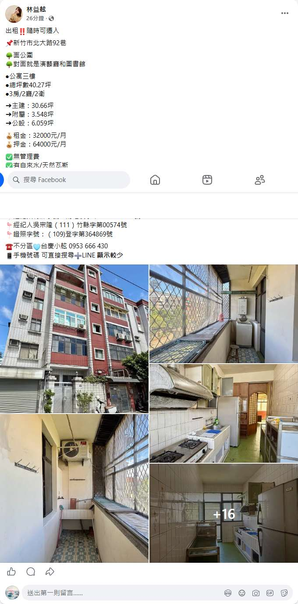 看原始刊登 → 查看貼文原文林益舷 出租 隨時可遷入 新竹市北大路92巷 面公園 對面就是演藝廳和圖書館 ●公寓三樓 ●總坪數40.27坪 ●3房/2廳/2衛 ➔主建：30.66坪 ➔附屬：3.548坪 ➔公設：6.059坪 租金：32000元/月 押金：64000元/月 無管理費 有自來水/天然瓦斯 有基本家具（可討論） ------------------------------------ 台慶不動產 新竹中央公園加盟店 加貝不動產經紀有限公司 經紀業特許字號：府地價字第1110032842號 經紀人吳宗隆（111）竹縣字第00574號 證照字號：（109)登字第364869號 不分區 台慶小舷 0953 666 430 手機號碼 可直接搜尋 LINE 顯示較少 +16 送出第一則留言…… | 32,000 HTTP 400 | 3房—廳2衛 完全符合 | — | 未註明 | 未註明 | 未註明 | 未提及 | FB 貼文 |
| 32,000 | 3房2廳2衛 完全符合 | 3F/4F | 未註明 | 無 | 未註明 | 未提及 | 仲介 余先生 · 景裕地產事業有限公司 | |
| 33,000 | 3房2廳2衛 完全符合 | 11F/14F | 未註明 | 有 | 有 | 不可 | 屋主 吳先生 | |
| 33,000 已下架(404) | 3房2廳2衛 完全符合 | 5F/15F | 3,798元/月 | 有 | 有 | 未提及 | 仲介 邱先生 · 宏貫不動產經紀業有限公司 | |
| 33,000 | 3房2廳2衛 完全符合 | 4/14樓 | 未註明 | 有 | 未註明 | 未提及 | 此物件未公開電話，請點標題到原網站聯絡 | |
| 33,000 | 3房2廳2衛 完全符合 | 6F/14F | 租金已含 | 有 | 有 | 不可 | 仲介 陳小姐 · 仕承國際不動產有限公司 | |
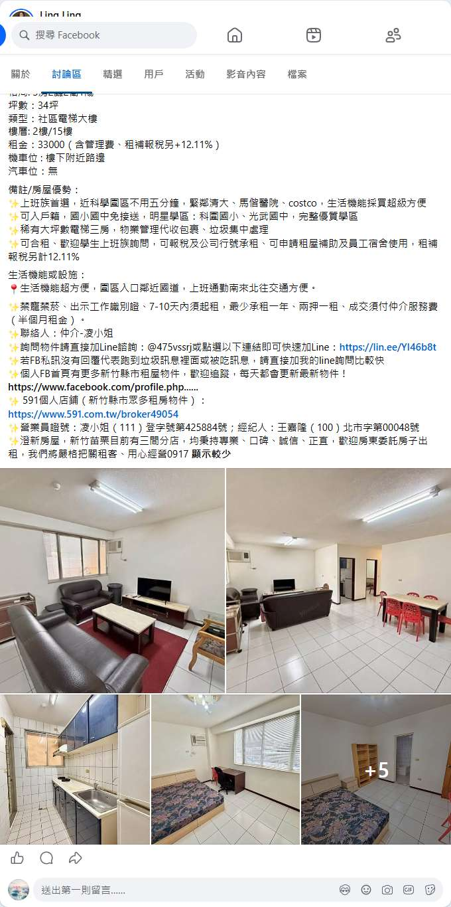 看原始刊登 → 查看貼文原文Ling Ling 近竹科/光復路一段美食商圈/生活機能完善/社區電梯大樓三房/傢俱電齊全/可租補報稅入戶籍/警衛管理 地址：新竹市東區光復路一段525巷（車程5分到竹科） 格局: 3房2廳2衛1陽 坪數：34坪 類型：社區電梯大樓 樓層: 2樓/15樓 租金：33000（含管理費、租補報稅另+12.11%） 機車位 : 樓下附近路邊 汽車位：無 備註/房屋優勢： 上班族首選，近科學園區不用五分鐘，緊鄰清大、馬偕醫院、costco，生活機能採買超級方便 可入戶籍，國小國中免接送，明星學區：科園國小、光武國中，完整優質學區 稀有大坪數電梯三房，物業管理代收包裹、垃圾集中處理 可合租、歡迎學生上班族詢問，可報稅及公司行號承租、可申請租屋補助及員工宿舍使用，租補報稅另計12.11% 生活機能或設施： 生活機能超方便，園區入口鄰近國道，上班通勤南來北往交通方便。 禁寵禁菸、出示工作識別證、7-10天內須起租，最少承租一年、兩押一租、成交須付仲介服務費（半個月租金）。 聯絡人：仲介-凌小姐 詢問物件請直接加Line諮詢：@475vssrj或點選以下連結即可快速加Line： 若FB私訊沒有回覆代表跑到垃圾訊息裡面或被吃訊息，請直接加我的line詢問比較快 個人FB首頁有更多新竹縣市租屋物件，歡迎追蹤，每天都會更新最新物件！ 591個人店鋪（新竹縣市眾多租房物件）： 營業員證號：凌小姐（111）登字號第425884號；經紀人：王嘉隆（100）北市字第00048號 澄新房屋，新竹苗栗目前有三間分店，均秉持專業、口碑、誠信、正直，歡迎房東委託房子出租，我們將嚴格把關租客、用心經營0917 顯示較少 +5 送出第一則留言…… | 33,000 | 3房—廳2衛 完全符合 | 2F/15F | 未註明 | 有 | 未註明 | 未提及 | FB 貼文 此物件未公開電話，請點標題到原網站聯絡 |
| 33,000 | 3房2廳2衛 完全符合 | 13F/14F | 3,000元/月 | 有 | 有 | 未提及 | 仲介 凌小姐 · 澄新房屋股份有限公司 | |
| 33,968 | 3房2廳2衛 完全符合 | 9/12樓 | 未註明 | 有 | 未註明 | 未提及 | 此物件未公開電話，請點標題到原網站聯絡 | |
 | 34,000 已下架(404) | 3房2廳2衛 完全符合 | 9F/15F | 租金已含 | 有 | 有 | 未提及 | 仲介 林先生 · 陞豐開發有限公司 |
| 34,000 | 3房2廳2衛 完全符合 | 8F/14F | 3,000元/月 | 有 | 有 | 未提及 | 仲介 凌小姐 · 澄新房屋股份有限公司 | |
 | 35,000 | 3房2廳2衛 完全符合 | 1F/5F | 無 | 無 | 有 | 未提及 | 仲介 宋先生 · 大管家租賃住宅代管有限公司 |
| 35,000 已下架(404) | 3房2廳2衛 完全符合 | 1F/5F | 未註明 | 無 | 未註明 | 未提及 | 仲介 陳宗枬 · 大管家房屋管理家樂仲介有限公司 | |
 | 35,000 已下架(404) | 3房2廳2衛 完全符合 | 7F/14F | 4,120元/月 | 有 | 有 | 未提及 | 仲介 李小姐 · 崋崗資產管理顧問有限公司 |
| 35,000 | 3房2廳2衛 完全符合 | 12 / 14 | 無 | 有 | 未註明 | 未提及 | ||
| 35,000 | 3房2廳2衛 完全符合 | 12/15樓 | 未註明 | 有 | 未註明 | 未提及 | 此物件未公開電話，請點標題到原網站聯絡 | |
| 35,000 | 3房2廳2衛 完全符合 | 9/11樓 | 未註明 | 有 | 未註明 | 未提及 | 此物件未公開電話，請點標題到原網站聯絡 | |
 | 35,000 | 3房2廳2衛 完全符合 | 12F/14F | 4,295元/月 | 有 | 有 | 未提及 | 仲介 林小姐 · 加貝不動產經紀有限公司 |
| 35,000 | 3房2廳2衛 完全符合 | 8F/14F | 租金已含 | 有 | 有 | 未提及 | 仲介 陳先生 · 不動產經紀營業員 | |
 | 35,000 | 3房2廳2衛 完全符合 | 10F/14F | 3,974元/月 | 有 | 有 | 未提及 | 仲介 黃先生 · 達豐不動產仲介經紀業 |
 | 35,000 | 3房2廳2衛 完全符合 | 10F/14F | 3,974元/月 | 有 | 有 | 未提及 | 仲介 劉小姐 · 達豐不動產仲介經紀業 |
| 35,000 | 3房2廳2衛 完全符合 | 10 / 14 | 另計(金額未公開) | 有 | 未註明 | 未提及 | ||
 | 35,000 | 3房2廳2衛 完全符合 | 21F/28F | 2,885元/月 | 有 | 有 | 未提及 | 仲介 李小姐 · 言昇築不動產仲介有限公司 |
 | 35,160 已下架(404) | 3房2廳2衛 完全符合 | 19F/19F | 3,000元/月 | 有 | 有 | 未提及 | 仲介 姜小姐 · 易澤居房屋有限公司 |
| 35,500 | 3房2廳2衛 完全符合 | 19/28樓 | 未註明 | 有 | 未註明 | 未提及 | 此物件未公開電話，請點標題到原網站聯絡 | |
| 36,000 已下架(404) | 3房2廳2衛 完全符合 | 11F/14F | 4,000元/月 | 有 | 有 | 未提及 | 仲介 楊小姐 · 格尚租賃管理實業社 | |
 | 36,000 已下架(404) | 3房2廳2衛 完全符合 | 11F/14F | 4,000元/月 | 有 | 有 | 未提及 | 仲介 宋先生 · 格尚租賃管理實業社 |
| 36,000 已下架(404) | 3房2廳2衛 完全符合 | 11F/21F | 4,000元/月 | 有 | 有 | 未提及 | 仲介 陳小姐 · 格尚租賃管理實業社 | |
| 36,000 已下架(404) | 3房2廳2衛 完全符合 | 11F/21F | 4,000元/月 | 有 | 有 | 未提及 | 仲介 陳小姐 · 格尚租賃管理實業社 | |
| 36,000 | 3房2廳2衛 完全符合 | 7/15樓 | 未註明 | 有 | 未註明 | 未提及 | 此物件未公開電話，請點標題到原網站聯絡 | |
| 36,000 | 3房2廳2衛 完全符合 | 18F/29F | 未註明 | 有 | 有 | 未提及 | 仲介 段小姐 · 房屋公司 | |
| 36,000 | 3房2廳2衛 完全符合 | 14F/21F | 2,200元/月 | 有 | 有 | 未提及 | 仲介 徐先生 · 興築不動產仲介經紀有限公司 | |
 | 36,000 | 3房2廳2衛 完全符合 | 13F/14F | 租金已含 | 有 | 有 | 未提及 | 仲介 楊先生 · 澄翰開發股份有限公司 |
| 36,500 已下架(404) | 3房2廳2衛 完全符合 | 7F/7F | 無 | 有 | 有 | 未提及 | 仲介 洪先生 · 仕鑫不動產仲介經紀有限公司 | |
| 36,500 已下架(404) | 3房2廳2衛 完全符合 | 7F/7F | 租金已含 | 有 | 有 | 未提及 | 仲介 陳小姐 · 凱帝不動產有限公司 | |
| 36,500 | 3房2廳2衛 完全符合 | 12 / 13 | 另計(金額未公開) | 有 | 有 | 未提及 | ||
| 37,000 | 3房2廳2衛 完全符合 | 27/28樓 | 未註明 | 有 | 未註明 | 未提及 | 此物件未公開電話，請點標題到原網站聯絡 | |
 | 37,000 已下架(404) | 3房2廳2衛 完全符合 | 5F/20F | 2,900元/月 | 有 | 有 | 未提及 | 仲介 鄭小姐 · 新堯企業社 |
| 37,000 | 3房2廳2衛 完全符合 | 8F/14F | 租金已含 | 有 | 有 | 未提及 | 仲介 楊先生 · 澄翰開發股份有限公司 | |
| 37,000 | 3房2廳2衛 完全符合 | 8F/14F | 租金已含 | 有 | 有 | 未提及 | 仲介 張先生 · 澄翰開發股份有限公司 | |
| 38,000 已下架(404) | 3房2廳2衛 完全符合 | 9F/22F | 5,553元/月 | 有 | 有 | 未提及 | 仲介 吳小姐 · 千宅不動產經紀有限公司 | |
| 38,000 已下架(404) | 3房2廳2衛 完全符合 | 22F/24F | 租金已含 | 有 | 有 | 未提及 | 仲介 陳小姐 · 凱帝不動產有限公司 | |
| 38,000 | 3房2廳2衛 完全符合 | 6F/14F | 2,000元/月 | 有 | 有 | 未提及 | 仲介 陳小姐 · 誠田不動產 | |
| 38,000 已下架(404) | 3房2廳2衛 完全符合 | 26F/26F | 3,000元/月 | 無 | 有 | 未提及 | 仲介 蔡先生 · 城毅不動產開發有限公司 | |
| 38,000 | 3房2廳2衛 完全符合 | 13/23樓 | 未註明 | 有 | 未註明 | 未提及 | 此物件未公開電話，請點標題到原網站聯絡 | |
| 38,000 | 3房2廳2衛 完全符合 | 26/26樓 | 未註明 | 有 | 未註明 | 未提及 | 此物件未公開電話，請點標題到原網站聯絡 | |
| 38,000 | 3房2廳2衛 完全符合 | 15F/20F | 租金已含 | 有 | 有 | 未提及 | 仲介 昱勤 · 興築家不動產有限公司 | |
 | 38,000 已下架(404) | 3房2廳2衛 完全符合 | 15F/20F | 租金已含 | 有 | 有 | 未提及 | 仲介 黃先生 · 宥德不動產仲介經紀有限公司 |
| 38,000 已下架(404) | 3房2廳2衛 完全符合 | 18F/24F | 未註明 | 有 | 有 | 未提及 | 仲介 段小姐 · 房屋公司 | |
| 38,000 | 3房2廳2衛 完全符合 | 12F/15F | 2,500元/月 | 有 | 有 | 未提及 | 仲介 姜先生 · 展懿不動產經紀有限公司 | |
| 38,000 | 3房2廳2衛 完全符合 | 6/6樓 | 未註明 | 未註明 | 未註明 | 未提及 | 此物件未公開電話，請點標題到原網站聯絡 | |
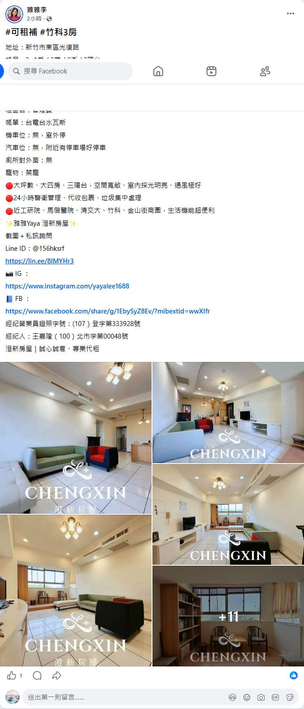 看原始刊登 → 查看貼文原文雅雅李 #可租補 #竹科3房 地址：新竹市東區光復路 格局：3+1房 / 2廳 / 2衛 / 3陽台 坪數：43坪 樓層：6樓 / 總22樓（電梯） 租金：$38000 租金含：管理費 帳單：台電台水瓦斯 機車位：無，室外停 汽車位：無，附近有停車場好停車 廁所對外窗：無 寵物：禁寵 大坪數、大四房、三陽台，空間寬敞、室內採光明亮、通風極好 24小時警衛管理、代收包裹、垃圾集中處理 近工研院、馬偕醫院、清交大、竹科、金山街商圈，生活機能超便利 雅雅Yaya 澄新房屋 截圖＋私訊詢問 Line ID：@156hksrf IG ： FB ： 經紀營業員證照字號：(107）登字第333928號 經紀人：王嘉隆（100）北市字第00048號 澄新房屋｜誠心誠意・專業代租 +11 送出第一則留言…… | 38,000 | 3房—廳2衛 完全符合 | 6F | 未註明 | 未註明 | 未註明 | 未提及 | FB 貼文 此物件未公開電話，請點標題到原網站聯絡 |
| 38,800 | 3房2廳2衛 完全符合 | 26/29樓 | 未註明 | 有 | 未註明 | 未提及 | 此物件未公開電話，請點標題到原網站聯絡 | |
 | 39,000 | 3房2廳2衛 完全符合 | 2F/11F | 3,700元/月 | 有 | 有 | 未提及 | 仲介 唐小姐 · 立城不動產有限公司 |
| 39,000 | 3房2廳2衛 完全符合 | 2 / 11 | 另計(金額未公開) | 有 | 有 | 未提及 | ||
| 39,000 | 3房2廳2衛 完全符合 | 8/17樓 | 未註明 | 有 | 未註明 | 未提及 | 此物件未公開電話，請點標題到原網站聯絡 | |
| 39,000 | 3房2廳2衛 完全符合 | 12/15樓 | 未註明 | 有 | 未註明 | 未提及 | 此物件未公開電話，請點標題到原網站聯絡 | |
| 39,000 | 3房2廳2衛 完全符合 | 2/11樓 | 未註明 | 有 | 未註明 | 未提及 | 此物件未公開電話，請點標題到原網站聯絡 | |
| 39,900 | 3房2廳2衛 完全符合 | 18F/20F | 3,600元/月 | 無 | 有 | 未提及 | 屋主 張小姐 | |
| 40,000 已下架(404) | 3房2廳2衛 完全符合 | 9F/15F | 2,247元/月 | 有 | 有 | 未提及 | 仲介 曾店長 · 興築家不動產有限公司 | |
| 40,000 | 3房2廳2衛 完全符合 | 2F/9F | 3,000元/月 | 有 | 有 | 未提及 | 仲介 張先生 · 澄翰開發股份有限公司 | |
| 40,000 | 3房2廳2衛 完全符合 | 15F/29F | 租金已含 | 有 | 有 | 有提及(需確認) | 仲介 林小姐 · 展藝不動產經紀有限公司 | |
| 40,000 | 3房2廳2衛 完全符合 | 4F/13F | 6,166元/月 | 有 | 有 | 未提及 | 仲介 詹小姐 · 良歆開發有限公司 | |
| 40,000 | 3房2廳2衛 完全符合 | 13F/14F | 未註明 | 有 | 有 | 未提及 | 仲介 林先生 · 敦璘房屋仲介有限公司 | |
| 40,000 已下架 | 3房2廳2衛 完全符合 | 15 / 29 | 未註明 | 有 | 有 | 有提及(需確認) | ||
| 40,000 | 3房2廳2衛 完全符合 | 13 / 14 | 無 | 有 | 有 | 未提及 | ||
| 40,000 | 3房2廳2衛 完全符合 | 4 / 13 | 另計(金額未公開) | 有 | 有 | 未提及 | ||
| 40,000 | 3房2廳2衛 完全符合 | 4/13樓 | 未註明 | 有 | 未註明 | 未提及 | 此物件未公開電話，請點標題到原網站聯絡 | |
| 40,000 | 3房2廳2衛 完全符合 | 2/5樓 | 未註明 | 未註明 | 未註明 | 未提及 | 此物件未公開電話，請點標題到原網站聯絡 | |
| 40,000 | 3房2廳2衛 完全符合 | 21/29樓 | 未註明 | 有 | 未註明 | 未提及 | 此物件未公開電話，請點標題到原網站聯絡 | |
| 40,000 | 3房2廳2衛 完全符合 | 9/15樓 | 未註明 | 有 | 未註明 | 未提及 | 此物件未公開電話，請點標題到原網站聯絡 | |
| 40,000 | 3房2廳2衛 完全符合 | 4F/13F | 未註明 | 有 | 有 | 未提及 | 仲介 范家榆 · 良欣開發有限公司 | |
| 42,000 已下架(404) | 3房2廳2衛 完全符合 | 20F/24F | 3,694元/月 | 有 | 有 | 未提及 | 仲介 唐小姐 · 立城不動產有限公司 | |
 | 42,000 | 3房2廳2衛 完全符合 | 20F/24F | 3,694元/月 | 有 | 有 | 未提及 | 仲介 張小姐 · 立城不動產有限公司 |
| 42,000 | 3房2廳2衛 完全符合 | 2F/9F | 租金已含 | 有 | 有 | 未提及 | 仲介 任先生-新竹租屋公司 · 新竹房屋仲介 | |
| 42,000 | 3房2廳2衛 完全符合 | 7F/15F | 3,000元/月 | 有 | 有 | 未提及 | 仲介 范小姐 · 東洁房屋有限公司 | |
| 42,000 | 3房2廳2衛 完全符合 | 23F/28F | 3,000元/月 | 有 | 有 | 未提及 | 仲介 蘇先生 · 臻愛房屋企業社 | |
| 42,000 | 3房2廳2衛 完全符合 | 12F/12F | 2,900元/月 | 有 | 有 | 未提及 | 仲介 陳小姐 · 久懿房屋仲介有限公司 | |
| 42,000 已下架(404) | 3房2廳2衛 完全符合 | 8F/17F | 5,900元/月 | 有 | 有 | 未提及 | 仲介 竹科懿萱 · 仕新不動產仲介經紀有限公司 | |
| 42,000 | 3房2廳2衛 完全符合 | 17/24樓 | 未註明 | 有 | 未註明 | 未提及 | 此物件未公開電話，請點標題到原網站聯絡 | |
| 42,000 | 3房2廳2衛 完全符合 | 7/15樓 | 未註明 | 有 | 有 | 未提及 | ||
| 43,000 | 3房2廳2衛 完全符合 | 9/28樓 | 未註明 | 有 | 未註明 | 未提及 | 此物件未公開電話，請點標題到原網站聯絡 | |
| 43,000 | 3房2廳2衛 完全符合 | 8F/14F | 3,700元/月 | 有 | 有 | 未提及 | 仲介 范小姐 · 東洁房屋有限公司 | |
| 43,600 已下架(404) | 3房2廳2衛 完全符合 | 9F/25F | 3,600元/月 | 有 | 有 | 未提及 | 仲介 劉小姐 · 達豐不動產仲介經紀業 | |
| 43,600 已下架(404) | 3房2廳2衛 完全符合 | 9F/25F | 3,600元/月 | 有 | 有 | 未提及 | 仲介 黃先生 · 達豐不動產仲介經紀業 | |
| 43,600 | 3房2廳2衛 完全符合 | 9F/20F | 3,152元/月 | 有 | 有 | 未提及 | 仲介 阿轟 · 沐家房屋有限公司 | |
| 43,600 | 3房2廳2衛 完全符合 | 9F/25F | 3,600元/月 | 有 | 有 | 未提及 | 仲介 陳先生 · 不動產經紀營業員 | |
| 43,600 已下架(404) | 3房2廳2衛 完全符合 | 9F/25F | 3,600元/月 | 有 | 有 | 未提及 | 仲介 林小姐 · 澄新房屋 | |
 | 43,600 | 3房2廳2衛 完全符合 | 9F/25F | 3,600元/月 | 有 | 有 | 未提及 | 仲介 楊先生 · 澄翰開發股份有限公司 |
| 43,600 | 3房2廳2衛 完全符合 | 9/25樓 | 未註明 | 有 | 未註明 | 未提及 | 此物件未公開電話，請點標題到原網站聯絡 | |
| 43,600 已下架(404) | 3房2廳2衛 完全符合 | 9F/25F | 3,600元/月 | 有 | 有 | 未提及 | 仲介 江易如 · 巢聚企業社 | |
| 45,000 已下架(404) | 3房2廳2衛 完全符合 | 19F/28F | 3,800元/月 | 有 | 有 | 未提及 | 仲介 洪先生 · 包行租賃 | |
 | 45,000 | 3房2廳2衛 完全符合 | 3F/15F | 3,000元/月 | 有 | 未註明 | 未提及 | 仲介 姜小姐 · 易澤居房屋有限公司 |
| 45,000 已下架(404) | 3房2廳2衛 完全符合 | 18F/20F | 3,122元/月 | 有 | 有 | 未提及 | 仲介 吳小姐 · 忻居不動產仲介有限公司 | |
| 45,000 | 3房2廳2衛 完全符合 | 15F/26F | 3,000元/月 | 有 | 有 | 未提及 | 仲介 蘇先生 · 臻愛房屋企業社 | |
| 45,000 已下架(404) | 3房2廳2衛 完全符合 | 23F/24F | 3,500元/月 | 有 | 未註明 | 未提及 | 仲介 蔡先生 · 城毅不動產開發有限公司 | |
| 45,000 | 3房2廳2衛 完全符合 | 4/14樓 | 未註明 | 有 | 未註明 | 未提及 | 此物件未公開電話，請點標題到原網站聯絡 | |
| 45,000 | 3房2廳2衛 完全符合 | 4/14樓 | 未註明 | 有 | 未註明 | 未提及 | 此物件未公開電話，請點標題到原網站聯絡 | |
| 45,000 | 3房2廳2衛 完全符合 | 9/13樓 | 未註明 | 有 | 未註明 | 未提及 | 此物件未公開電話，請點標題到原網站聯絡 | |
| 45,000 | 3房2廳2衛 完全符合 | 3/14樓 | 未註明 | 有 | 未註明 | 未提及 | 此物件未公開電話，請點標題到原網站聯絡 | |
| 45,000 | 3房2廳2衛 完全符合 | 4F/14F | 2,780元/月 | 有 | 有 | 未提及 | 屋主 許小姐 | |
| 45,000 | 3房2廳2衛 完全符合 | 10F/21F | 3,170元/月 | 有 | 有 | 未提及 | 仲介 盧先生 · 房屋 | |
| 45,000 | 3房2廳2衛 完全符合 | 10F/21F | 3,170元/月 | 無 | 有 | 未提及 | 仲介 竹科懿萱 · 仕新不動產仲介經紀有限公司 | |
| 45,000 | 3房2廳2衛 完全符合 | 10 / 21 | 另計(金額未公開) | 有 | 有 | 未提及 | ||
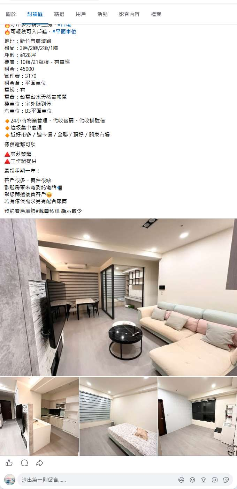 看原始刊登 → 查看貼文原文盧俊全 好市多旁精美三房、#台電 可報稅可入戶籍、#平面車位 地址：新竹市慈濟路 格局：3房/2廳/2衛/1陽 坪數：約28坪 樓層：10樓/21總樓，有電梯 租金：45000 管理費：3170 租金含：平面車位 電梯：有 電費：台電台水天然氣帳單 機車位：室外隨到停 汽車位：B3平面車位 24小時物業管理、代收包裹、代收掛號信 垃圾集中處理 近好市多／迪卡儂／全聯／頂好／關東市場 傢俱電都可談 禁菸禁寵 工作證提供 最短租期一年！ 客戶很多、案件很缺 歡迎房東來電委託電話 幫您篩選優質客戶 若有傢俱需求另有配合廠商 預約看房麻煩#截圖私訊 顯示較少 送出第一則留言…… | 45,000 HTTP 400 | 3房—廳2衛 完全符合 | 10F/21F | 3170 | 有 | 有 | 未提及 | FB 貼文 此物件未公開電話，請點標題到原網站聯絡 |
| 46,000 | 3房2廳2衛 完全符合 | 2F/6F | 租金已含 | 有 | 有 | 未提及 | 仲介 黃小姐 · 長冠不動產仲介經紀有限公司 | |
| 47,000 已下架(404) | 3房2廳2衛 完全符合 | 14F/23F | 3,100元/月 | 無 | 有 | 未提及 | 仲介 竹科懿萱 · 仕新不動產仲介經紀有限公司 | |
| 47,000 已下架(404) | 3房2廳2衛 完全符合 | 12F/16F | 3,320元/月 | 有 | 有 | 未提及 | 代理人 台灣金聯王先生 | |
| 48,000 | 3房2廳2衛 完全符合 | 2F/6F | 租金已含 | 有 | 有 | 未提及 | 仲介 梁小姐 · 達豐不動產仲介經紀業 | |
| 48,000 | 3房2廳2衛 完全符合 | 22/23樓 | 未註明 | 有 | 未註明 | 未提及 | 此物件未公開電話，請點標題到原網站聯絡 | |
| 48,000 | 3房2廳2衛 完全符合 | 4/15樓 | 未註明 | 有 | 未註明 | 未提及 | 此物件未公開電話，請點標題到原網站聯絡 | |
| 48,000 | 3房2廳2衛 完全符合 | 10/15樓 | 未註明 | 有 | 未註明 | 未提及 | 此物件未公開電話，請點標題到原網站聯絡 | |
| 48,000 | 3房2廳2衛 完全符合 | 10/15樓 | 未註明 | 有 | 未註明 | 未提及 | 此物件未公開電話，請點標題到原網站聯絡 | |
| 49,000 | 3房2廳2衛 完全符合 | 23/29樓 | 未註明 | 有 | 未註明 | 未提及 | 此物件未公開電話，請點標題到原網站聯絡 | |
| 50,000 已下架(404) | 3房2廳2衛 完全符合 | 8F/15F | 未註明 | 有 | 有 | 未提及 | 仲介 駱先生-新竹租屋公司 · 新竹房屋仲介 | |
| 50,000 | 3房2廳2衛 完全符合 | 9/24樓 | 未註明 | 有 | 未註明 | 未提及 | 此物件未公開電話，請點標題到原網站聯絡 | |
| 50,000 | 3房2廳2衛 完全符合 | 21/24樓 | 未註明 | 有 | 未註明 | 未提及 | 此物件未公開電話，請點標題到原網站聯絡 | |
| 50,000 | 3房2廳2衛 完全符合 | 4F/6F | 租金已含 | 有 | 有 | 未提及 | 仲介 林小姐 · 上等不動產 | |
| 50,000 | 3房2廳2衛 完全符合 | 11 / 14 | 無 | 有 | 有 | 未提及 | ||
| 52,000 | 3房2廳2衛 完全符合 | 3F/14F | 租金已含 | 有 | 有 | 未提及 | 仲介 葉小姐 · 專業房屋租賃代管 | |
| 53,000 | 3房2廳2衛 完全符合 | 4F/23F | 3,500元/月 | 有 | 有 | 未提及 | 仲介 唐小姐 · 立城不動產有限公司 | |
| 55,000 | 3房2廳2衛 完全符合 | 5F/24F | 4,300元/月 | 有 | 有 | 未提及 | 仲介 黃先生 · 瑋銨不動產有限公司 | |
| 55,000 | 3房2廳2衛 完全符合 | 18/24樓 | 未註明 | 有 | 未註明 | 未提及 | 此物件未公開電話，請點標題到原網站聯絡 | |
| 56,900 | 3房2廳2衛 完全符合 | 21 / 24 | 另計(金額未公開) | 有 | 有 | 未提及 | ||
| 56,900 | 3房2廳2衛 完全符合 | 21/24樓 | 未註明 | 有 | 未註明 | 未提及 | 此物件未公開電話，請點標題到原網站聯絡 | |
| 57,000 | 3房2廳2衛 完全符合 | 12F/14F | 6,646元/月 | 有 | 有 | 未提及 | 仲介 陳怡潔 · 陞豐開發有限公司 | |
| 57,000 | 3房2廳2衛 完全符合 | 12 / 14 | 另計(金額未公開) | 有 | 未註明 | 未提及 | ||
| 57,000 已下架(404) | 3房2廳2衛 完全符合 | 12F/14F | 6,646元/月 | 無 | 有 | 未提及 | 仲介 竹科懿萱 · 仕新不動產仲介經紀有限公司 | |
| 58,000 | 3房2廳2衛 完全符合 | 4/23樓 | 未註明 | 有 | 未註明 | 未提及 | 此物件未公開電話，請點標題到原網站聯絡 | |
| 62,000 | 3房2廳2衛 完全符合 | 18/24樓 | 未註明 | 有 | 未註明 | 未提及 | 此物件未公開電話，請點標題到原網站聯絡 | |
| 62,000 | 3房2廳2衛 完全符合 | 20F/24F | 4,675元/月 | 有 | 有 | 未提及 | 屋主 謝先生 | |
| 62,000 | 3房2廳2衛 完全符合 | 20F/24F | 4,675元/月 | 有 | 有 | 未提及 | 仲介 陳先生 · 興築家不動產有限公司 | |
| 62,000 | 3房2廳2衛 完全符合 | 20/24樓 | 未註明 | 有 | 未註明 | 未提及 | 此物件未公開電話，請點標題到原網站聯絡 | |
| 62,000 | 3房2廳2衛 完全符合 | 20F/24F | 4,675元/月 | 有 | 有 | 未提及 | 仲介 梁小姐 · 達豐不動產仲介經紀業 | |
 | 62,000 已下架(404) | 3房2廳2衛 完全符合 | 20F/24F | 5,000元/月 | 有 | 有 | 未提及 | 仲介 王嘉晨 · 興築家不動產有限公司 |
| 62,000 | 3房2廳2衛 完全符合 | 20F/24F | 5,000元/月 | 有 | 有 | 未提及 | 仲介 黃先生 · 宥德不動產仲介經紀有限公司 | |
| 62,000 | 3房2廳2衛 完全符合 | 20/24樓 | 未註明 | 有 | 未註明 | 未提及 | 此物件未公開電話，請點標題到原網站聯絡 | |
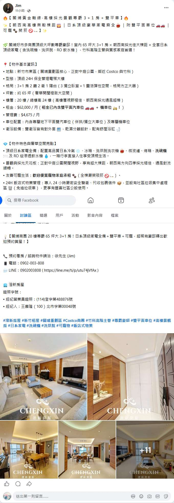 看原始刊登 → 查看貼文原文Jim 【 關 埔 黃 金 軸 線 ‧ 高 樓 採 光 景 觀 尊 爵 ３＋１ 房 ＋ 雙 平 車 】 【 朝 西 南 高 樓 無 敵 棟 距 ｜ 日 系 頂 級 豪 華 家 電 齊 全 ｜ 附 雙 平 面 車 位 ｜ 可 寵 禁 菸 】 關埔好市多商圈頂級大坪數尊爵豪邸！室內 65 坪大 3+1 房 × 朝西南採光佳大棟距 × 全套日系頂級家電（含洗碗機、洗烘脫、RO 飲水機），竹科高階主管與質感家庭首選！ 【物件基本資訊】 • 地點：新竹市東區（關埔重劃區核心，正對中庭公園，鄰近 Costco 與竹科） • 型態：頂級 24H 保全管理電梯大樓 • 格局：3+1 房 2 廳 2 衛 1 陽台（3 獨立臥室＋1 靈活彈性空間，格局方正大器） • 坪數：約 65 坪（奢華開闊極致大空間） • 樓層：20 樓 / 總樓高 24 樓（高樓層視野極佳、朝西南採光通風超棒） • 租金：$62,000 / 月（租金已內含雙平面汽車位 ＋ 機車位 ！） • 管理費：$4,675 / 月 • 車位配置：內含專屬地下平面雙汽車位（併排/獨立大車位）及專屬機車位 • 衛浴設備：雙衛浴皆有對外窗 ，乾濕分離設計，配有舒壓浴缸 【物件特色與奢華空間亮點】 • 頂級日系家電全備：配置高品質日系冷氣 、冰箱、洗烘脫洗衣機 、微波爐、烤箱、洗碗機 及 RO 逆滲透飲水機 ，一箱行李直接入住享受頂規生活。 • 景觀與採光天花板：正對中庭公園開闊視野，享有超大棟距，朝西南方向四季採光極佳、通風對流順暢。 • 友善可寵生活：歡迎優質寵物家庭承租 （全棟嚴禁吸菸 ）。 • 24H 飯店式物業管理：專人 24 小時嚴密安全警衛、代收包裹信件 ，並設有社區垃圾集中處理區 （免追垃圾車），更享有豐富社區公設使用。 【黃金地段與生活機能】 • 竹科極速通勤：車程僅約 3–5 分鐘直達新竹科學園區（竹科），上下班通勤極速省時！ • Costco 頂級商圈：步行或短程車程即抵 Costco 好市多商圈、迪卡儂與周邊各式高檔餐廳、連鎖超市，生活採買娛樂一應俱全。 【關埔商圈 20 樓尊爵 65 坪大 3+1 房！日系頂級家電全備＋雙平車＋可寵，超稀有豪邸釋出歡迎預約賞屋！】 預約看房 / 諮詢物件請洽：徐先生 (Jim) 電話：0902-003-808 LINE：0902003808 ( ) 澄新房屋 證照字號： • 經紀營業員證照：(114)登字第488876號 • 經紀人：王嘉隆（100）北市字第00048號 #澄新房屋 #新竹租屋 #關埔重劃區 #Costco商圈 #竹科高階主管 #尊爵豪邸 #雙平面車位 #高樓景觀房 #日系家電 #洗碗機 #洗烘脫 #可寵物 #飯店式物業 +11 送出第一則留言…… | 62,000 | 3房—廳2衛 完全符合 | 20F | 4675 | 有 | 有 | 未提及 | FB 貼文 |
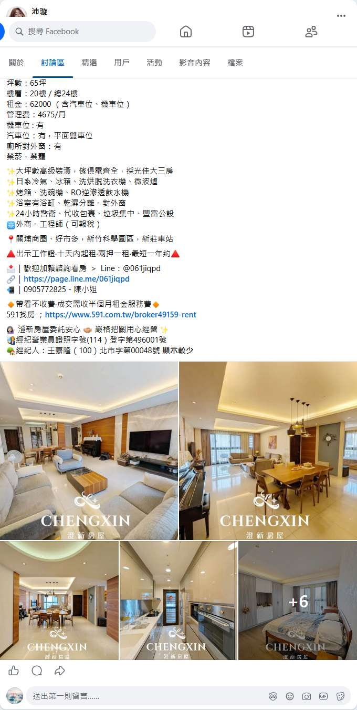 看原始刊登 → 查看貼文原文沛璇 大坪數傢俱電齊全雙平面汽車位｜竹科·$62000 地點：新竹市東區龍山東路 類型：電梯大樓 格局：3+1房/ 2廳/ 2衛/ 1陽台 坪數：65坪 樓層：20樓 / 總24樓 租金：62000 （含汽車位、機車位） 管理費：4675/月 機車位 : 有 汽車位：有，平面雙車位 廁所對外窗：有 禁菸，禁寵 大坪數高級裝潢，傢俱電齊全，採光佳大三房 日系冷氣、冰箱、洗烘脫洗衣機、微波爐 烤箱、洗碗機、RO逆滲透飲水機 浴室有浴缸、乾濕分離、對外窗 24小時警衛、代收包裹、垃圾集中、豐富公設 外商、工程師（可報稅） 關埔商圈、好市多，新竹科學園區，新莊車站 出示工作證·十天內起租·兩押一租·最短一年約 ｜歡迎加賴諮詢看房 > Line：@061jiqpd ｜ ｜0905772825 - 陳小姐 帶看不收費·成交需收半個月租金服務費 591找房 ； 澄新房屋委託安心 嚴格把關用心經營 經紀營業員證照字號(114）登字第496001號 經紀人：王嘉隆（100）北市字第00048號 顯示較少 +6 送出第一則留言…… 同一物件另有 1 筆刊登（不同仲介） | 62,000 | 3房—廳2衛 完全符合 | 20F | 4675 | 有 | 未註明 | 未提及 | FB 貼文 |
| 68,000 | 3房—廳2衛 完全符合 | 1/1樓 | 未註明 | 未註明 | 未註明 | 未提及 | 此物件未公開電話，請點標題到原網站聯絡 | |
| 70,000 | 3房2廳2衛 完全符合 | 3/12樓 | 未註明 | 有 | 未註明 | 未提及 | 此物件未公開電話，請點標題到原網站聯絡 | |
| 80,000 | 3房2廳2衛 完全符合 | 2 / 7 | 無 | 有 | 未註明 | 未提及 | ||
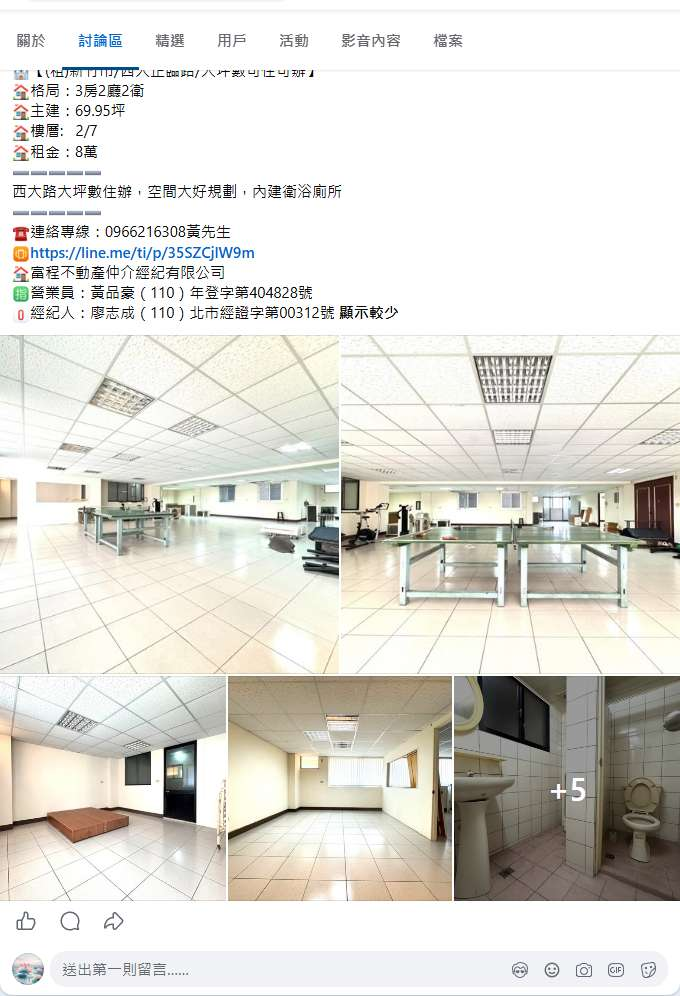 看原始刊登 → 查看貼文原文黃品豪 【(租)新竹市/西大正臨路/大坪數可住可辦】 格局：3房2廳2衛 主建：69.95坪 樓層: 2/7 租金：8萬 西大路大坪數住辦，空間大好規劃，內建衛浴廁所 連絡專線：0966216308黃先生 富程不動產仲介經紀有限公司 營業員：黃品豪（110）年登字第404828號 經紀人：廖志成（110）北市經證字第00312號 顯示較少 +5 送出第一則留言…… | — | 3房2廳2衛 完全符合 | — | 未註明 | 未註明 | 未註明 | 未提及 | FB 貼文 |
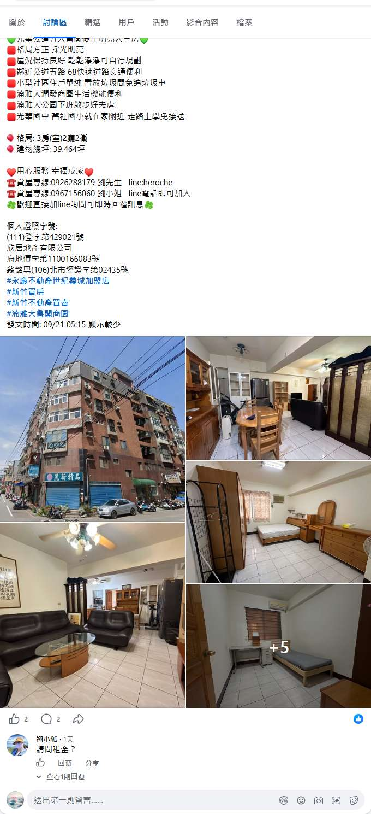 看原始刊登 → 查看貼文原文Mi Siao Liu 光華公道五大魯閣優仕明亮大三房 格局方正 採光明亮 屋況保持良好 乾乾淨淨可自行規劃 鄰近公道五路 68快速道路交通便利 小型社區住戶單純 置放垃圾間免追垃圾車 湳雅大潤發商圈生活機能便利 湳雅大公園下班散步好去處 光華國中 舊社國小就在家附近 走路上學免接送 格局: 3房(室)2廳2衛 建物總坪: 39.464坪 用心服務 幸福成家 賞屋專線:0926288179 劉先生 line:heroche 賞屋專線:0967156060 劉小姐 line電話即可加入 歡迎直接加line詢問可即時回覆訊息 個人證照字號: (111)登字第429021號 欣居地產有限公司 府地價字第1100166083號 翁銘男(106)北市經證字第02435號 #永慶不動產世紀鑫城加盟店 #新竹買房 #新竹不動產買賣 #湳雅大魯閣商圈 發文時間: 09/21 05:15 顯示較少 +5 祤小狐 請問租金？ 回覆 查看1則回覆 送出第一則留言…… | — HTTP 400 | 3房—廳2衛 完全符合 | — | 未註明 | 未註明 | 未註明 | 未提及 | FB 貼文 |
| 1,000 價格異常 | 5房2廳5衛 超規格 | 2 / 3 | 無 | 未註明 | 未註明 | 未提及 | ||
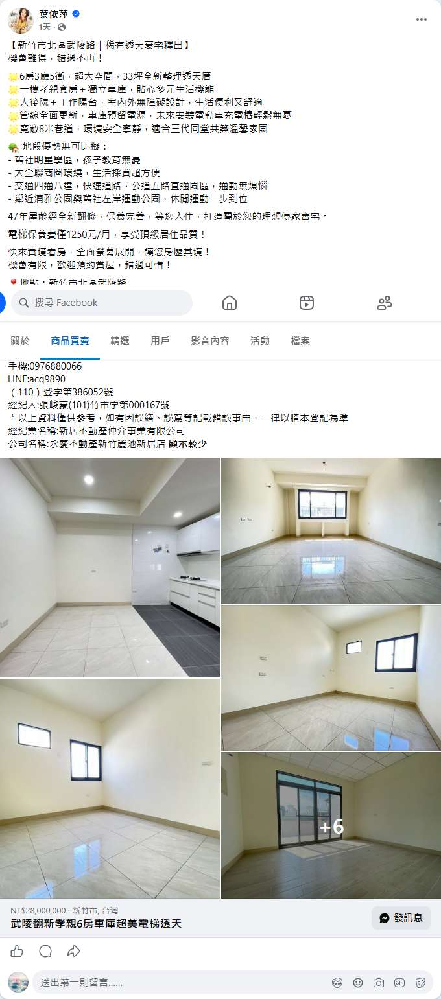 看原始刊登 → 查看貼文原文葉依萍 【新竹市北區武陵路｜稀有透天豪宅釋出】 機會難得，錯過不再！ 6房3廳5衛，超大空間，33坪全新整理透天厝 一樓孝親套房＋獨立車庫，貼心多元生活機能 大後院＋工作陽台，室內外無障礙設計，生活便利又舒適 管線全面更新，車庫預留電源，未來安裝電動車充電樁輕鬆無憂 寬敞8米巷道，環境安全寧靜，適合三代同堂共築溫馨家園 地段優勢無可比擬： - 舊社明星學區，孩子教育無憂 - 大全聯商圈環繞，生活採買超方便 - 交通四通八達，快速道路、公道五路直通園區，通勤無煩惱 - 鄰近湳雅公園與舊社左岸運動公園，休閒運動一步到位 47年屋齡經全新翻修，保養完善，等您入住，打造屬於您的理想傳家寶宅。 電梯保養費僅1250元/月，享受頂級居住品質！ 快來實境看房，全面螢幕展開，讓您身歷其境！ 機會有限，歡迎預約賞屋，錯過可惜！ 地點：新竹市北區武陵路 格局：6房3廳5衛 建坪：33.027坪 車位：獨立車庫 立即聯絡，讓這間夢想好宅成為您的新家！ 姓名:葉依萍 手機:0976880066 LINE:acq9890 （110）登字第386052號 經紀人:張峻豪(101)竹市字第000167號 ＊以上資料僅供參考，如有因誤繕、誤寫等記載錯誤事由，一律以謄本登記為準 經紀業名稱:新居不動產仲介事業有限公司 公司名稱:永慶不動產新竹麗池新居店 顯示較少 +6 NT$28,000,000 · 新竹市, 台灣 武陵翻新孝親6房車庫超美電梯透天 發訊息 送出第一則留言…… | 1,250 價格異常HTTP 400 | 6房3廳5衛 超規格 | — | 未註明 | 未註明 | 未註明 | 未提及 | FB 貼文 |
| 7,500 價格異常已下架(404) | 4房2廳2衛 超規格 | 4F/5F | 租金已含 | 無 | 未註明 | 未提及 | 屋主 呂先生 | |
| 13,000 已下架(404) | 3房2廳3衛 超規格 | 1F~2F/2F | 未註明 | 無 | 未註明 | 未提及 | 仲介 陳先生 · 棠朝不動產經紀有限公司 | |
| 13,000 | 4房2廳3衛 超規格 | 1~2/2樓 | 未註明 | 未註明 | 未註明 | 未提及 | 此物件未公開電話，請點標題到原網站聯絡 | |
| 18,000 已下架(404) | 3房2廳3衛 超規格 | 4F/5F | 無 | 無 | 未註明 | 未提及 | 仲介 周先生 · 興龍不動產有限公司 | |
| 18,000 | 4房2廳2衛 超規格 | 整棟/3F | 無 | 無 | 有 | 未提及 | 仲介 江先生 · 陞寶開發有限公司 | |
| 18,000 | 3房2廳3衛 超規格 | 3F/3F | 無 | 無 | 未註明 | 未提及 | 仲介 周先生 · 興龍不動產有限公司 | |
| 18,000 | 3房3廳2衛 超規格 | 1F/7F | 無 | 無 | 無 | 不可 | 屋主 何先生 | |
| 20,000 | 6房—廳3衛 超規格 | 2~4/4樓 | 未註明 | 未註明 | 未註明 | 未提及 | 此物件未公開電話，請點標題到原網站聯絡 | |
 | 21,000 已下架(404) | 3房—廳3衛 超規格 | 3F/4F | 無 | 有 | 有 | 未提及 | 仲介 温先生 · 大管家租賃住宅代管有限公司 |
| 22,000 | 4房2廳2衛 超規格 | 6F/6F | 租金已含 | 有 | 未註明 | 不可 | 仲介 張先生-新竹租屋公司 · 新竹房屋仲介 | |
| 23,000 | 4房2廳2衛 超規格 | 4 / 13 | 另計(金額未公開) | 有 | 未註明 | 未提及 | ||
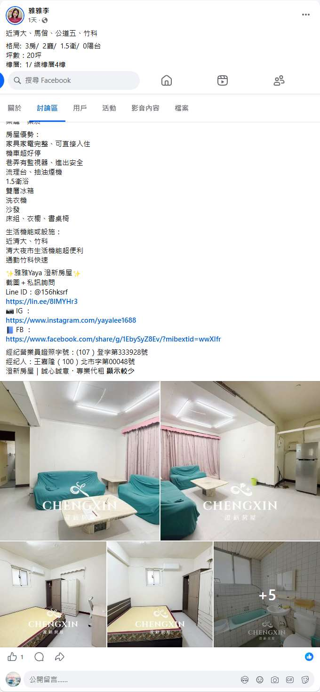 看原始刊登 → 查看貼文原文雅雅李 近清大、馬偕、公道五、竹科 格局: 3房/ 2廳/ 1.5衛/ 0陽台 坪數：20坪 樓層: 1/ 總樓層4樓 租金：24000 租金含：管理費、網路、水費、電費（500度以內免費） 機車位 : 門口隨到停 汽車位：無 廁所對外窗：有 禁寵、禁菸 房屋優勢： 家具家電完整、可直接入住 機車超好停 巷弄有監視器、進出安全 流理台、抽油煙機 1.5衛浴 雙層冰箱 洗衣機 沙發 床組、衣櫥、書桌椅 生活機能或設施： 近清大、竹科 清大夜市生活機能超便利 通勤竹科快速 雅雅Yaya 澄新房屋 截圖＋私訊詢問 Line ID：@156hksrf IG ： FB ： 經紀營業員證照字號：(107）登字第333928號 經紀人：王嘉隆（100）北市字第00048號 澄新房屋｜誠心誠意・專業代租 顯示較少 +5 公開留言…… | 24,000 | 3房—廳5衛 超規格 | 4F | 未註明 | 未註明 | 未註明 | 未提及 | FB 貼文 此物件未公開電話，請點標題到原網站聯絡 |
| 25,000 | 4房2廳2衛 超規格 | 3/8樓 | 未註明 | 有 | 未註明 | 未提及 | 此物件未公開電話，請點標題到原網站聯絡 | |
| 25,000 | 4房2廳2衛 超規格 | 整棟/2樓 | 未註明 | 未註明 | 未註明 | 未提及 | 此物件未公開電話，請點標題到原網站聯絡 | |
| 25,000 已下架(404) | 6房2廳3衛 超規格 | 整棟/3F | 無 | 無 | 有 | 未提及 | 仲介 劉小姐 · 宅吉屋不動產經紀有限公司 | |
| 26,000 | 4房2廳2衛 超規格 | 2 / 16 | 另計(金額未公開) | 有 | 未註明 | 未提及 | ||
| 26,000 | 3房3廳3衛 超規格 | 整棟/3樓 | 未註明 | 未註明 | 未註明 | 未提及 | 此物件未公開電話，請點標題到原網站聯絡 | |
| 26,000 已下架(404) | 6房2廳2衛 超規格 | 1F~2F/2F | 無 | 無 | 有 | 未提及 | 仲介 蔡先生 · 星鴻股份有限公司 | |
| 27,000 | 4房2廳2衛 超規格 | 5F/7F | 租金已含 | 有 | 有 | 不可 | 屋主 楊女士 | |
| 28,000 | 4房2廳2衛 超規格 | 2F/2F | 未註明 | 無 | 有 | 未提及 | 代理人 章魚哥 | |
| 28,000 已下架(404) | 4房2廳5衛 超規格 | 1F~3F/3F | 無 | 無 | 有 | 未提及 | 仲介 朱先生 · 大管家租賃住宅代管有限公司 | |
| 28,000 已下架(404) | 4房2廳2衛 超規格 | 整棟/2F | 未註明 | 無 | 有 | 未提及 | 仲介 洪小姐 · 臻愛房屋企業社 | |
| 28,000 已下架(404) | 4房2廳2衛 超規格 | 1F~3F/3F | 無 | 無 | 有 | 未提及 | 仲介 吳先生 · 全家房屋 | |
| 28,000 已下架 | 3房2廳5衛 超規格 | 5 / 7 | 另計(金額未公開) | 有 | 有 | 未提及 | ||
 | 28,000 已下架(404) | 4房2廳2衛 超規格 | 1F~3F/3F | 無 | 無 | 有 | 未提及 | 仲介 陳捷宥 · 包租代管租賃買賣 |
| 28,000 | 4房2廳2衛 超規格 | 3/5樓 | 未註明 | 未註明 | 未註明 | 未提及 | 此物件未公開電話，請點標題到原網站聯絡 | |
| 28,000 | 4房2廳2衛 超規格 | 整棟/3F | 無 | 無 | 未註明 | 不可 | 仲介 黃先生 · 大管家租賃住宅代管有限公司 | |
| 28,000 | 4房2廳2衛 超規格 | 1/12樓 | 未註明 | 有 | 未註明 | 未提及 | 此物件未公開電話，請點標題到原網站聯絡 | |
| 28,000 | 4房2廳2衛 超規格 | 7F/7F | 無 | 有 | 未註明 | 未提及 | 仲介 楊小姐 · 匯恆豐不動產仲介經紀有限公司 | |
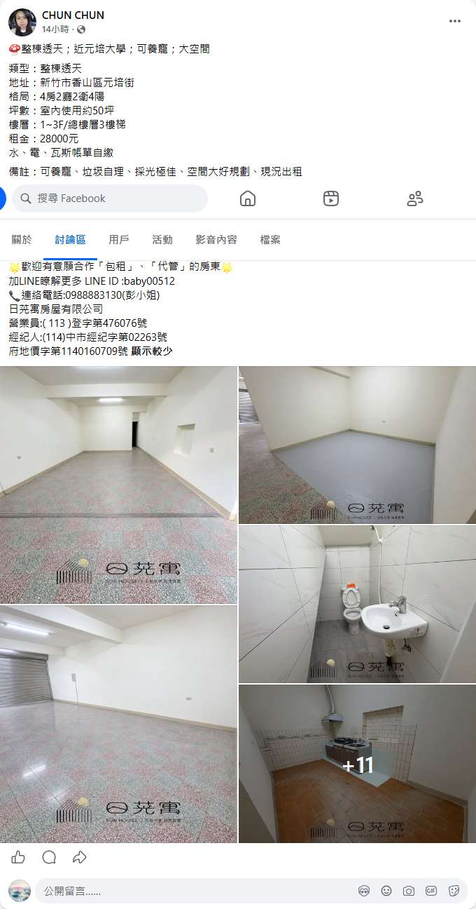 看原始刊登 → 查看貼文原文CHUN CHUN 整棟透天；近元培大學；可養寵；大空間 類型：整棟透天 地址：新竹市香山區元培街 格局：4房2廳2衛4陽 坪數：室內使用約50坪 樓層：1~3F/總樓層3樓梯 租金：28000元 水、電、瓦斯帳單自繳 備註：可養寵、垃圾自理、採光極佳、空間大好規劃、現況出租 生活機能：走路10分鐘至三姓橋火車站、走路5分鐘至香山高中、走路1分鐘至全家便利商店、騎車3分鐘至大庄商圈、元培大學、玄奘大學、騎車10分鐘至中華大學、茄冬交流道 成交需收服務費(租金半個月) 最少承租一年，兩押一租 -----------日茪寓包租代管---------- 歡迎有意願合作「包租」、「代管」的房東 加LINE瞭解更多 LINE ID :baby00512 連絡電話:0988883130(彭小姐) 日茪寓房屋有限公司 營業員:( 113 )登字第476076號 經紀人:(114)中市經紀字第02263號 府地價字第1140160709號 顯示較少 +11 公開留言…… | 28,000 HTTP 400 | 4房2廳2衛 超規格 | 3F | 未註明 | 未註明 | 未註明 | 未提及 | FB 貼文 |
 | 29,000 已下架(404) | 4房1廳4衛 差一點 | 2F/13F | 1,600元/月 | 有 | 未註明 | 未提及 | 仲介 賀先生 · 科園房屋 |
| 29,000 | 4房2廳2衛 超規格 | 2F/7F | 10,000元/月 | 無 | 有 | 未提及 | 屋主 姚先生 | |
| 29,500 已下架(404) | 4房2廳3衛 超規格 | 1F~2F/2F | 未註明 | 無 | 未註明 | 未提及 | 仲介 古小姐 · 家樂仲介有限公司 | |
 | 30,000 已下架(404) | 8房2廳4衛 超規格 | 整棟/2F | 無 | 無 | 未註明 | 未提及 | 仲介 陳小姐 · 上等不動產 |
| 30,000 | 4房2廳3衛 超規格 | 2F/5F | 未註明 | 無 | 未註明 | 未提及 | 仲介 曾先生 · 家樂仲介有限公司 | |
| 30,000 | 3房2廳3衛 超規格 | 整棟/4F | 無 | 無 | 有 | 未提及 | 仲介 曾先生 · 家樂仲介有限公司 | |
| 30,000 已下架(404) | 4房2廳3衛 超規格 | 1F~3F/3F | 未註明 | 無 | 有 | 未提及 | 仲介 陳先生 · 台勝不動產仲介有限公司 | |
| 30,000 已下架(404) | 5房2廳3衛 超規格 | 1F~3F/3F | 無 | 無 | 無 | 未提及 | 仲介 楊先生 · 偉鈞不動產仲介經紀有限公司 | |
 | 30,000 | 8房2廳3衛 超規格 | 1 / 2 | 無 | 未註明 | 未註明 | 未提及 | |
| 30,000 | 8房3廳2衛 超規格 | 1 / 2 | 無 | 未註明 | 未註明 | 未提及 | ||
| 30,000 | 8房2廳3衛 超規格 | 1 / 2 | 無 | 未註明 | 未註明 | 未提及 | ||
| 30,000 | 5房2廳3衛 超規格 | 2~3/3樓 | 未註明 | 未註明 | 未註明 | 未提及 | 此物件未公開電話，請點標題到原網站聯絡 | |
| 30,000 | 8房2廳3衛 超規格 | 1F~2F/2F | 無 | 無 | 未註明 | 未提及 | 仲介 林小姐 · 上等不動產 | |
 | 30,000 已下架(404) | 4房2廳2衛 超規格 | 3F/5F | 未註明 | 無 | 未註明 | 未提及 | 仲介 陳先生 · 大管家房屋管理家樂仲介有限公司 |
| 30,000 | 8房2廳3衛 超規格 | 1 / 2 | 無 | 未註明 | 未註明 | 未提及 | ||
| 30,000 | 8房2廳3衛 超規格 | 1 / 22 | 無 | 未註明 | 未註明 | 未提及 | ||
| 30,000 | 3房—廳3衛 超規格 | 1~4/4樓 | 未註明 | 未註明 | 未註明 | 未提及 | 此物件未公開電話，請點標題到原網站聯絡 | |
| 30,000 | 4房2廳2衛 超規格 | 9F/14F | 2,706元/月 | 有 | 有 | 未提及 | 仲介 鄭小姐 · 真心地產開發有限公司 | |
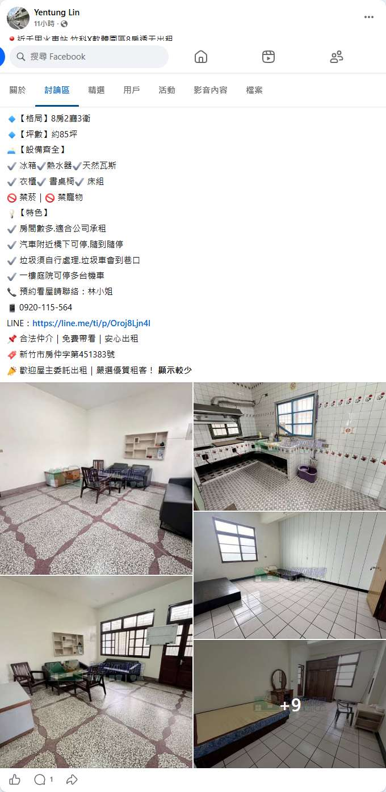 看原始刊登 → 查看貼文原文Yentung Lin 近千甲火車站.竹科X軟體園區8房透天出租 【租金】30,000/月 電費水費瓦斯費另計：依照帳單金額計算 【地點】千甲路 【樓層】1-2樓 【格局】8房2廳3衛 【坪數】約85坪 【設備齊全】 冰箱 熱水器 天然瓦斯 衣櫃 書桌椅 床組 禁菸｜ 禁寵物 【特色】 房間數多.適合公司承租 汽車附近橋下可停.隨到隨停 垃圾須自行處理.垃圾車會到巷口 一樓庭院可停多台機車 預約看屋請聯絡：林小姐 0920-115-564 LINE： 合法仲介｜免費帶看｜安心出租 新竹市房仲字第451383號 歡迎屋主委託出租｜嚴選優質租客！ 顯示較少 +9 | 30,000 | 8房—廳3衛 超規格 | 2F | 未註明 | 未註明 | 未註明 | 未提及 | FB 貼文 |
| 32,000 | 5房2廳2衛 超規格 | 2F/5F | 500元/月 | 有 | 未註明 | 不可 | 仲介 黃先生 · 全球不動產經紀有限公司 | |
| 32,000 已下架(404) | 4房2廳2衛 超規格 | 9F/13F | 2,700元/月 | 有 | 有 | 未提及 | 仲介 鄭先生 · 租事大喆物業租貸管理顧問 | |
| 32,000 已下架(404) | 5房2廳4衛 超規格 | 2F/6F | 500元/月 | 有 | 未註明 | 不可 | 仲介 國小姐 · 全球不動產經紀有限公司 | |
| 32,000 已下架(404) | 4房3廳4衛 超規格 | 整棟/4F | 1,334元/月 | 無 | 有 | 未提及 | 仲介 林先生 · 陞豐開發有限公司 | |
| 32,000 已下架(404) | 5房—廳2衛 超規格 | 3F/5F | 無 | 無 | 未註明 | 有提及(需確認) | 仲介 王小安 · 展益不動產經紀有限公司 | |
 | 32,000 | 5房—廳3衛 超規格 | 4F/6F | 無 | 無 | 未註明 | 未提及 | 仲介 陳先生 · 兆豐國際不動產有限公司 |
| 32,000 已下架(404) | 5房2廳2衛 超規格 | 3F/5F | 無 | 無 | 未註明 | 有提及(需確認) | 仲介 蔡小姐 · 展懿不動產經紀有限公司 | |
 | 32,000 已下架 | 5房—廳2衛 超規格 | 3 / 5 | 無 | 有 | 未註明 | 有提及(需確認) | |
| 32,000 | 5房3廳3衛 超規格 | 1~4 / 4 | 無 | 未註明 | 未註明 | 未提及 | ||
| 32,000 | 5房—廳2衛 超規格 | 3/5樓 | 未註明 | 未註明 | 未註明 | 未提及 | 此物件未公開電話，請點標題到原網站聯絡 | |
| 32,000 已下架(404) | 4房2廳2衛 超規格 | 11F/13F | 租金已含 | 有 | 未註明 | 未提及 | 屋主 蔡女士 | |
| 32,000 | 4房2廳2衛 超規格 | 3F/5F | 未註明 | 無 | 未註明 | 未提及 | 仲介 張先生-新竹租屋公司 · 新竹房屋仲介 | |
| 32,000 | 5房3廳3衛 超規格 | 整棟/4F | 未註明 | 無 | 未註明 | 未提及 | 仲介 蔡名峻 · 辰星不動產經紀有限公司 | |
| 33,000 已下架(404) | 4房2廳3衛 超規格 | 整棟/4F | 3,700元/月 | 無 | 有 | 未提及 | 仲介 吳小姐 · 大管家租賃住宅代管有限公司 | |
 | 33,000 已下架(404) | 4房2廳2衛 超規格 | 10F/12F | 2,200元/月 | 有 | 有 | 未提及 | 仲介 吳小姐 · 大管家租賃住宅代管有限公司 |
| 35,000 已下架(404) | 5房2廳3衛 超規格 | 整棟/4F | 無 | 無 | 有 | 未提及 | 仲介 黃先生 · 大管家租賃住宅代管有限公司 | |
 | 35,000 | 4房2廳3衛 超規格 | 2F/7F | 租金已含 | 有 | 未註明 | 未提及 | 仲介 任先生-新竹租屋公司 · 新竹房屋仲介 |
| 35,000 已下架(404) | 4房2廳3衛 超規格 | 1F~3F/3F | 無 | 無 | 未註明 | 未提及 | 仲介 江先生 · 陞寶開發有限公司 | |
| 35,000 已下架(404) | 4房2廳2衛 超規格 | 4F/14F | 3,300元/月 | 無 | 有 | 未提及 | 仲介 蘇先生 · 臻愛房屋企業社 | |
| 35,000 已下架(404) | 4房2廳2衛 超規格 | 5F/7F | 未註明 | 無 | 未註明 | 未提及 | 仲介 陳先生 · 富程不動產仲介經紀有限公司 | |
| 35,000 已下架(404) | 4房2廳2衛 超規格 | 5F/7F | 未註明 | 有 | 未註明 | 未提及 | 仲介 陳先生 · 新竹市東區龍山富程加盟店 | |
| 35,000 | 3房—廳3衛 超規格 | 1~3 / 3 | 無 | 未註明 | 未註明 | 未提及 | ||
| 35,000 | 4房2廳2衛 超規格 | 5 / 7 | 無 | 有 | 未註明 | 未提及 | ||
| 35,000 已下架 | 5房3廳6衛 超規格 | 1~4 / 4 | 無 | 未註明 | 未註明 | 未提及 | ||
| 35,000 | 4房2廳3衛 超規格 | 1~5/5樓 | 未註明 | 未註明 | 未註明 | 未提及 | 此物件未公開電話，請點標題到原網站聯絡 | |
| 35,000 | 4房2廳2衛 超規格 | 14/29樓 | 未註明 | 有 | 未註明 | 未提及 | 此物件未公開電話，請點標題到原網站聯絡 | |
| 35,000 | 4房2廳2衛 超規格 | 13/15樓 | 未註明 | 有 | 未註明 | 未提及 | 此物件未公開電話，請點標題到原網站聯絡 | |
| 35,000 | 3房—廳3衛 超規格 | 整棟/4樓 | 未註明 | 未註明 | 有 | 未提及 | ||
| 35,000 | 5房3廳6衛 超規格 | 1~4/4樓 | 未註明 | 未註明 | 未註明 | 未提及 | 此物件未公開電話，請點標題到原網站聯絡 | |
| 35,000 | 6房2廳3衛 超規格 | 整棟/4F | 1,800元/月 | 無 | 有 | 未提及 | 仲介 余先生 · 立社不動產有限公司 | |
| 35,000 已下架(404) | 4房2廳2衛 超規格 | 20F/23F | 4,400元/月 | 有 | 有 | 未提及 | 仲介 藍先生 · 昇玖專業不動產仲介經紀有限公司 | |
| 35,000 | 5房2廳4衛 超規格 | 整棟/5F | 未註明 | 無 | 有 | 未提及 | 仲介 沈小姐 · 宥德不動產仲介經紀有限公司 | |
| 35,000 | 4房2廳2衛 超規格 | 6F/22F | 3,000元/月 | 有 | 未註明 | 未提及 | 仲介 凌小姐 · 澄新房屋股份有限公司 | |
 | 35,000 已下架(404) | 4房2廳2衛 超規格 | 10F/12F | 2,400元/月 | 有 | 有 | 未提及 | 仲介 吳小姐 · 大管家租賃住宅代管有限公司 |
| 35,000 | 4房2廳2衛 超規格 | 11F/15F | 租金已含 | 有 | 有 | 未提及 | 屋主 黃太太 | |
| 35,000 | 3房2廳4衛 超規格 | 1F~4F/4F | 300元/月 | 無 | 未註明 | 未提及 | 仲介 朱先生 · 大管家租賃住宅代管有限公司 | |
| 36,000 | 3房2廳3衛 超規格 | 整棟/3F | 租金已含 | 無 | 未註明 | 未提及 | 代理人 彭小姐 | |
| 36,000 已下架(404) | 3房3廳3衛 超規格 | 6F/10F | 1,500元/月 | 有 | 有 | 未提及 | 屋主 陳先生 | |
| 37,000 已下架(404) | 4房2廳2衛 超規格 | 20F/25F | 2,721元/月 | 有 | 有 | 未提及 | 仲介 黃先生 · 宥德不動產仲介經紀有限公司 | |
| 38,000 | 4房2廳2衛 超規格 | 1F/9F | 租金已含 | 有 | 有 | 未提及 | 仲介 吳先生 · 家樂仲介有限公司 | |
| 38,000 已下架(404) | 10房3廳4衛 超規格 | 整棟/4F | 無 | 無 | 未註明 | 未提及 | 仲介 劉小姐 · 勁富不動產有限公司 | |
| 38,000 已下架(404) | 5房2廳3衛 超規格 | 1F~4F/4F | 未註明 | 無 | 有 | 未提及 | 仲介 何先生 · 大宸不動產仲介股份有限公司 | |
| 38,000 | 4房2廳2衛 超規格 | 14/29樓 | 未註明 | 有 | 未註明 | 未提及 | 此物件未公開電話，請點標題到原網站聯絡 | |
| 38,000 | 4房2廳2衛 超規格 | 14/29樓 | 未註明 | 有 | 未註明 | 未提及 | 此物件未公開電話，請點標題到原網站聯絡 | |
| 38,000 | 5房2廳4衛 超規格 | 1F~4F/4F | 850元/月 | 無 | 有 | 未提及 | 仲介 姜先生 · 展懿不動產經紀有限公司 | |
| 38,000 | 4房2廳2衛 超規格 | 1F/9F | 租金已含 | 有 | 有 | 未提及 | 仲介 陳小姐 · 家樂仲介有限公司 | |
| 38,000 | 5房2廳4衛 超規格 | 整棟/4F | 850元/月 | 無 | 有 | 未提及 | 仲介 丁先生 · 展益不動產經紀有限公司 | |
 | 38,000 | 4房2廳2衛 超規格 | 6F/22F | 租金已含 | 無 | 未註明 | 未提及 | 屋主 王小姐 |
| 38,000 | 4房2廳2衛 超規格 | 6F/22F | 租金已含 | 有 | 未註明 | 未提及 | 仲介 陳先生 · 興築家不動產有限公司 | |
 | 38,000 | 4房2廳2衛 超規格 | 6/22樓 | 含 | 有 | 有 | 未提及 | 興築家不動產有限公司(105)竹市房仲第0265 |
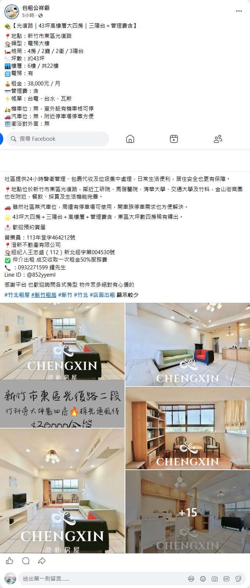 看原始刊登 → 查看貼文原文包租公祥爺 【光復路｜43坪高樓層大四房｜三陽台＋管理費含】 地點：新竹市東區光復路 類型：電梯大樓 格局：4房／2廳／2衛／3陽台 坪數：約43坪 樓層：6樓／共22樓 電梯：有 租金：38,000元／月 管理費：含 帳單：台電、台水、瓦斯 機車位：無，室外設有機車格可停 汽車位：無，附近停車場停車方便 衛浴對外窗：無 寵物：禁寵 —— 房屋特色 稀有43坪大坪數四房，搭配三陽台，室內空間寬敞、格局方正，採光明亮、通風良好，四房可彈性規劃為臥室、書房或工作空間，適合家庭及竹科上班族入住。 社區提供24小時警衛管理、包裹代收及垃圾集中處理，日常生活便利，居住安全也更有保障。 地點位於新竹市東區光復路，鄰近工研院、馬偕醫院、清華大學、交通大學及竹科，金山街商圈也在附近，餐飲、採買及生活機能完善。 雖然社區無汽車位，周邊有停車場可使用，開車族停車需求也方便解決。 43坪大四房＋三陽台＋高樓層＋管理費含，東區大坪數四房稀有釋出。 歡迎預約賞屋 營業員：113年登字464212號 澄新不動產有限公司 經紀人王志盛（112）新北經字第004530號 仲介出租 成交收取一次租金50%服務費 ：0932271599 鍾先生 Line ID：＠852yyeml 感謝平台 也歡迎詢問各式房型 物件眾多絕對有心儀的 #竹北租屋 #新竹租房 #新竹 #竹北 #店面出租 顯示較少 +15 送出第一則留言…… 同一物件另有 2 筆刊登（不同仲介） | 38,000 HTTP 400 | 4房—廳2衛 超規格 | 6F | 含 | 有 | 未註明 | 未提及 | FB 貼文 |
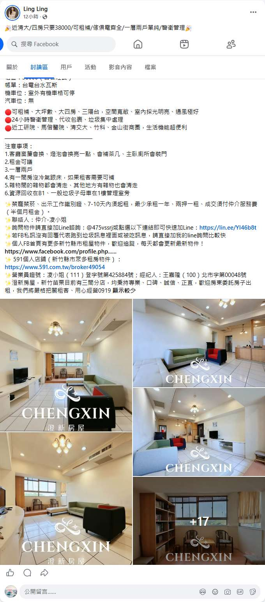 看原始刊登 → 查看貼文原文Ling Ling 近清大/四房只要38000/可租補/傢俱電齊全/一層兩戶單純/警衛管理 地址：新竹市東區光復路二段（近清交大、竹科、新莊車站、好市多） 格局：4房 / 2廳 / 2衛 / 3陽台 坪數：43坪 類型：社區電梯大樓 樓層：6樓 / 總22樓 租金：38000（含管理費） 帳單：台電台水瓦斯 機車位：室外有機車格可停 汽車位：無 可租補、大坪數、大四房、三陽台，空間寬敞、室內採光明亮、通風極好 24小時警衛管理、代收包裹、垃圾集中處理 近工研院、馬偕醫院、清交大、竹科、金山街商圈，生活機能超便利 ——————————————— 注意事項： 1.客廳窗簾會換、燈泡會換亮一點、會補茶几、主臥廁所會裝門 2.租金可議 3.一層兩戶 4.有一間房沒冷氣跟床，如果租客需要可補 5.雜物間的雜物都會清走、其他地方有雜物也會清走 6.資源回收在B1、一般垃圾子母車在1樓管理室旁 禁寵禁菸、出示工作識別證、7-10天內須起租，最少承租一年、兩押一租、成交須付仲介服務費（半個月租金）。 聯絡人：仲介-凌小姐 詢問物件請直接加Line諮詢：@475vssrj或點選以下連結即可快速加Line： 若FB私訊沒有回覆代表跑到垃圾訊息裡面或被吃訊息，請直接加我的line詢問比較快 個人FB首頁有更多新竹縣市租屋物件，歡迎追蹤，每天都會更新最新物件！ 591個人店鋪（新竹縣市眾多租房物件）： 營業員證號：凌小姐（111）登字號第425884號；經紀人：王嘉隆（100）北市字第00048號 澄新房屋，新竹苗栗目前有三間分店，均秉持專業、口碑、誠信、正直，歡迎房東委託房子出租，我們將嚴格把關租客、用心經營0919 顯示較少 +17 公開留言…… | 38,000 | 4房—廳2衛 超規格 | 6F | 未註明 | 有 | 未註明 | 未提及 | FB 貼文 此物件未公開電話，請點標題到原網站聯絡 |
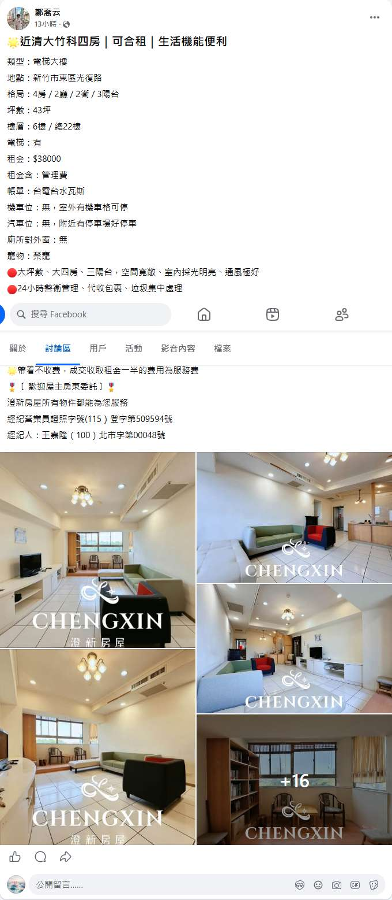 看原始刊登 → 查看貼文原文鄭喬云 近清大竹科四房｜可合租｜生活機能便利 類型：電梯大樓 地點：新竹市東區光復路 格局：4房 / 2廳 / 2衛 / 3陽台 坪數：43坪 樓層：6樓 / 總22樓 電梯：有 租金：$38000 租金含：管理費 帳單：台電台水瓦斯 機車位：無，室外有機車格可停 汽車位：無，附近有停車場好停車 廁所對外窗：無 寵物：禁寵 大坪數、大四房、三陽台，空間寬敞、室內採光明亮、通風極好 24小時警衛管理、代收包裹、垃圾集中處理 近工研院、馬偕醫院、清交大、竹科、金山街商圈，生活機能超便利 預約看房/詢問物件 請直接＋LINE Line ID: @253kqfcl 聯絡人：鄭小姐 0903-086-128 帶看不收費，成交收取租金一半的費用為服務費 〔 歡迎屋主房東委託〕 澄新房屋所有物件都能為您服務 經紀營業員證照字號(115）登字第509594號 經紀人：王嘉隆（100）北市字第00048號 +16 公開留言…… 同一物件另有 1 筆刊登（不同仲介） | 38,000 HTTP 400 | 4房—廳2衛 超規格 | 6F | 未註明 | 有 | 未註明 | 未提及 | FB 貼文 |
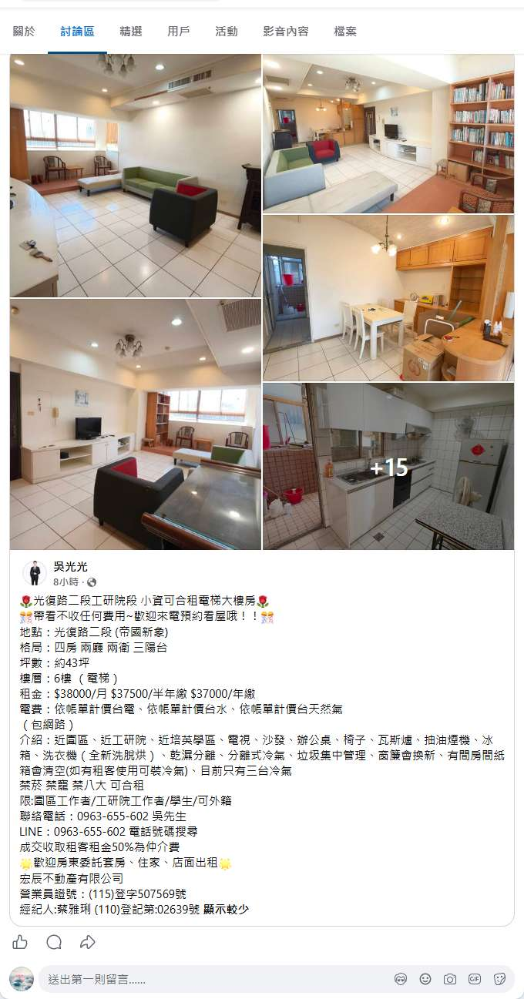 看原始刊登 → 查看貼文原文吳光光 +15 吳光光 光復路二段工研院段 小資可合租電梯大樓房 帶看不收任何費用~歡迎來電預約看屋哦！！ 地點：光復路二段 (帝國新象) 格局：四房 兩廳 兩衛 三陽台 坪數：約43坪 樓層：6樓 （電梯） 租金：$38000/月 $37500/半年繳 $37000/年繳 電費：依帳單計價台電、依帳單計價台水、依帳單計價台天然氣 （包網路） 介紹：近園區、近工研院、近培英學區、電視、沙發、辦公桌、椅子、瓦斯爐、抽油煙機、冰箱、洗衣機（全新洗脫烘）、乾濕分離、分離式冷氣、垃圾集中管理、窗簾會換新、有間房間紙箱會清空(如有租客使用可裝冷氣)、目前只有三台冷氣 禁菸 禁寵 禁八大 可合租 限:園區工作者/工研院工作者/學生/可外籍 聯絡電話：0963-655-602 吳先生 LINE：0963-655-602 電話號碼搜尋 成交收取租客租金50%為仲介費 歡迎房東委託套房、住家、店面出租 宏辰不動產有限公司 營業員證號：(115)登字507569號 經紀人:蔡雅琍 (110)登記第:02639號 顯示較少 送出第一則留言…… | 38,000 HTTP 400 | 4房2廳2衛 超規格 | 6F | 未註明 | 有 | 未註明 | 未提及 | FB 貼文 |
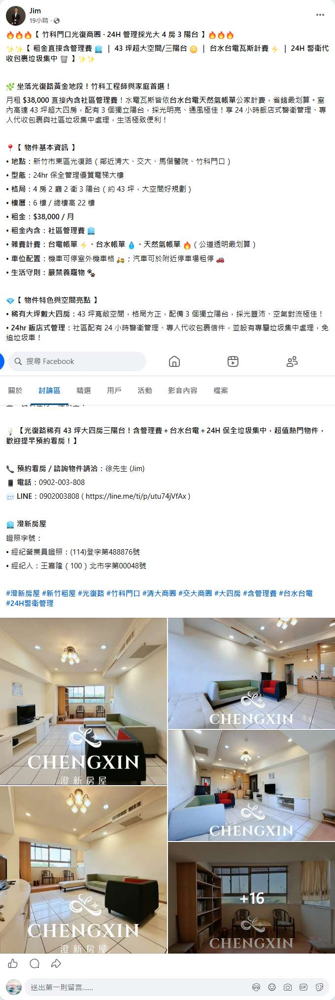 看原始刊登 → 查看貼文原文Jim 【 竹科門口光復商圈 ‧ 24H 管理採光大 4 房 3 陽台 】 【 租金直接含管理費 ｜ 43 坪超大空間/三陽台 ｜ 台水台電瓦斯計費 ｜ 24H 警衛代收包裹垃圾集中 】 坐落光復路黃金地段！竹科工程師與家庭首選！ 月租 $38,000 直接內含社區管理費！水電瓦斯皆依台水台電天然氣帳單公家計費，省錢最划算。室內高達 43 坪超大四房，配有 3 個獨立陽台，採光明亮、通風極佳！享 24 小時飯店式警衛管理、專人代收包裹與社區垃圾集中處理，生活極致便利！ 【 物件基本資訊 】 • 地點：新竹市東區光復路（鄰近清大、交大、馬偕醫院、竹科門口） • 型態：24hr 保全管理優質電梯大樓 • 格局：4 房 2 廳 2 衛 3 陽台（約 43 坪，大空間好規劃） • 樓層：6 樓 / 總樓高 22 樓 • 租金：$38,000 / 月 • 租金內含：社區管理費 • 雜費計費：台電帳單 、台水帳單 、天然氣帳單 （公道透明最划算） • 車位配置：機車可停室外機車格 ；汽車可於附近停車場租停 • 生活守則：嚴禁養寵物 【 物件特色與空間亮點 】 • 稀有大坪數大四房：43 坪寬敞空間，格局方正，配備 3 個獨立陽台，採光豐沛、空氣對流極佳！ • 24hr 飯店式管理：社區配有 24 小時警衛管理、專人代收包裹信件，並設有專屬垃圾集中處理，免追垃圾車！ 【 黃金地段與生活機能 】 • 竹科極速通勤：緊鄰光復路主幹道，秒進新竹科學園區（竹科）與金山街商圈，上下班省時省心。 • 頂級學區與醫療商圈：鄰近清華大學、交通大學、工研院、馬偕醫院，周邊美食餐廳、便利商店林立，食衣住行一應俱全！ 【光復路稀有 43 坪大四房三陽台！含管理費＋台水台電＋24H 保全垃圾集中，超值熱門物件，歡迎提早預約看房！】 預約看房 / 諮詢物件請洽：徐先生 (Jim) 電話：0902-003-808 LINE：0902003808 ( ) 澄新房屋 證照字號： • 經紀營業員證照：(114)登字第488876號 • 經紀人：王嘉隆（100）北市字第00048號 #澄新房屋 #新竹租屋 #光復路 #竹科門口 #清大商圈 #交大商圈 #大四房 #含管理費 #台水台電 #24H警衛管理 +16 送出第一則留言…… | 38,000 | 4房—廳2衛 超規格 | 6F | 43 | 有 | 未註明 | 未提及 | FB 貼文 |
| 38,000 | 5房2廳4衛 超規格 | B1~4/4樓 | 未註明 | 未註明 | 未註明 | 未提及 | 此物件未公開電話，請點標題到原網站聯絡 | |
| 40,000 | 4房2廳2衛 超規格 | 8F/15F | 租金已含 | 有 | 有 | 未提及 | 仲介 蔡先生 · 城毅不動產開發有限公司 | |
| 40,000 | 4房2廳2衛 超規格 | 5F/14F | 3,700元/月 | 有 | 未註明 | 未提及 | 仲介 住商阿信 · 于荷不動產仲介經紀有限公司 | |
| 40,000 | 4房2廳2衛 超規格 | 8F/15F | 租金已含 | 有 | 有 | 未提及 | 仲介 康先生 · 城毅不動產開發有限公司 | |
| 40,000 | 4房2廳2衛 超規格 | 6/15樓 | 未註明 | 有 | 未註明 | 未提及 | 此物件未公開電話，請點標題到原網站聯絡 | |
| 40,000 | 4房2廳2衛 超規格 | 20/25樓 | 未註明 | 有 | 未註明 | 未提及 | 此物件未公開電話，請點標題到原網站聯絡 | |
 | 41,200 | 4房3廳3衛 超規格 | 4F/9F | 3,800元/月 | 有 | 有 | 未提及 | 仲介 洪小姐 · 澄新房屋股份有限公司 |
| 41,999 已下架(404) | 4房2廳2衛 超規格 | 3F/12F | 3,000元/月 | 有 | 有 | 未提及 | 仲介 徐先生 · 臻愛房屋企業社 | |
 看原始刊登 → 同一物件另有 21 筆刊登（不同仲介）
| 41,999 已下架(404) | 4房2廳2衛 超規格 | 3F/12F | 3,000元/月 | 有 | 有 | 未提及 | 仲介 黃小姐 · 臻愛房屋 |
 | 42,000 已下架(404) | 6房2廳4衛 超規格 | 整棟/5F | 未註明 | 無 | 未註明 | 未提及 | 代理人 彭先生 |
| 42,000 已下架(404) | 4房2廳2衛 超規格 | 3F/12F | 3,000元/月 | 有 | 有 | 未提及 | 仲介 洪先生 · 仕鑫不動產仲介經紀有限公司 | |
| 42,000 已下架(404) | 5房2廳3衛 超規格 | 整棟/3F | 無 | 無 | 有 | 未提及 | 仲介 陳宗枬 · 大管家房屋管理家樂仲介有限公司 | |
| 42,000 已下架(404) | 4房2廳2衛 超規格 | 3F/15F | 未註明 | 有 | 有 | 未提及 | 仲介 林小姐 · 晶天不動產仲介經紀有限公司 | |
| 42,000 | 4房2廳2衛 超規格 | 25 / 25 | 另計(金額未公開) | 有 | 未註明 | 未提及 | ||
| 42,000 | 5房3廳4衛 超規格 | 1 / 4 | 未註明 | 未註明 | 有 | 未提及 | ||
| 42,000 | 5房3廳4衛 超規格 | 1 / 4 | 未註明 | 未註明 | 有 | 未提及 | ||
| 43,000 | 4房2廳2衛 超規格 | 3F/14F | 未註明 | 有 | 有 | 未提及 | 仲介 邱叡程 · 大管家租賃住宅代管有限公司 | |
| 43,000 | 4房2廳3衛 超規格 | 13F/13F | 3,463元/月 | 有 | 有 | 未提及 | 仲介 陳舒怡 · 矽安不動產有限公司 | |
| 43,500 | 4房2廳2衛 超規格 | 25/28樓 | 未註明 | 有 | 未註明 | 未提及 | 此物件未公開電話，請點標題到原網站聯絡 | |
| 43,500 | 4房2廳2衛 超規格 | 25/28樓 | 未註明 | 有 | 未註明 | 未提及 | 此物件未公開電話，請點標題到原網站聯絡 | |
| 45,000 | 4房2廳2衛 超規格 | 8F/27F | 3,500元/月 | 有 | 有 | 未提及 | 仲介 蘇先生 · 臻愛房屋企業社 | |
| 45,000 已下架(404) | 4房2廳2衛 超規格 | 23F/24F | 4,000元/月 | 有 | 有 | 未提及 | 仲介 陳小姐 · 誠田不動產 | |
| 45,000 | 4房2廳2衛 超規格 | 2 / 23 | 另計(金額未公開) | 有 | 未註明 | 未提及 | ||
| 45,000 | 4房2廳2衛 超規格 | 21/28樓 | 未註明 | 有 | 未註明 | 未提及 | 此物件未公開電話，請點標題到原網站聯絡 | |
| 45,000 | 4房2廳3衛 超規格 | 15/25樓 | 未註明 | 有 | 未註明 | 未提及 | 此物件未公開電話，請點標題到原網站聯絡 | |
 看原始刊登 → 同一物件另有 16 筆刊登（不同仲介）
| 45,000 | 4房3廳3衛 超規格 | 4F/9F | 3,800元/月 | 有 | 有 | 未提及 | 仲介 張先生 · 澄翰開發股份有限公司 |
 | 45,000 已下架(404) | 4房2廳2衛 超規格 | 21F/28F | 租金已含 | 有 | 有 | 未提及 | 仲介 范先生 · 鑫秀不動產有限公司 |
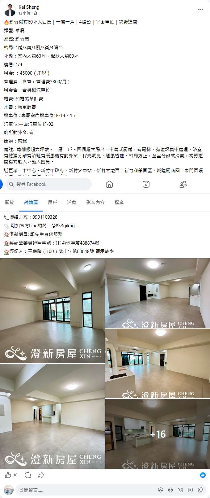 看原始刊登 → 查看貼文原文Kai Sheng 新竹稀有60坪大四房｜一層一戶｜4陽台｜平面車位｜視野遼闊 類型: 華廈 地點: 新竹市 格局: 4房/3廳/1廚/3衛/4陽台 坪數：室內大約60坪，權狀大約80坪 樓層: 4/9 租金: ：45000（未稅） 管理費：含管（管理費3800/月） 租金含：含機械汽車位 電費: 台電帳單計費 水費：帳單計費 機車位 : 專屬室內機車位1F-14、15 汽車位:平面汽車位1F-02 廁所對外窗: 有 寵物：禁寵 備註: 尊御級超大坪數、一層一戶、四個超大陽台、中島式廚房、有電梯、有垃圾集中處理、浴室有乾濕分離有浴缸有暖風機有對外窗、採光明亮、通風極佳、格局方正，全室分離式冷氣，視野遼闊稀有超大坪數大四房。 近巨城、市中心、新竹市政府、新竹火車站、新竹大遠百、新竹科學園區、城隍廟商圈、東門圓環商圈、新竹交流道、清大、交大 歡迎房東委託、誠心用心經營 需提供工作證明 歡迎預約看屋，看喜歡可立即入住！ 賞屋聯繫 截圖私訊 聯絡方式：0901109328 可加官方Line詢問：@833gikng 澄新房屋: 鄭先生為您服務 經紀營業員證照字號：(114)登字第488874號 經紀人：王嘉隆（100）北市字第00048號 顯示較少 +16 公開留言…… 同一物件另有 1 筆刊登（不同仲介） | 45,000 HTTP 400 | 4房—廳3衛 超規格 | — | 含 | 有 | 有 | 未提及 | FB 貼文 |
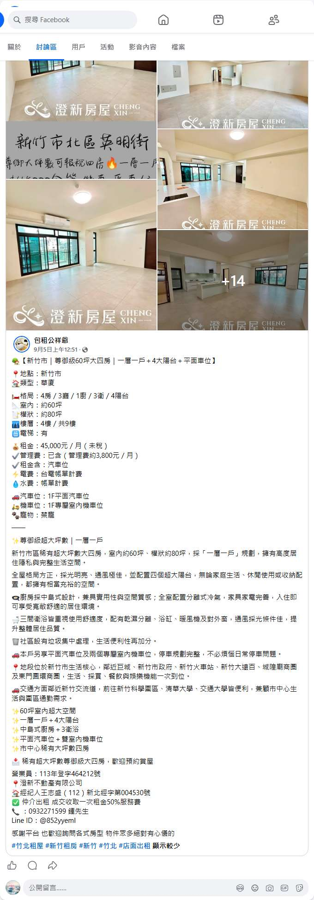 看原始刊登 → 查看貼文原文包租公祥爺 +14 包租公祥爺 【新竹市｜尊御級60坪大四房｜一層一戶＋4大陽台＋平面車位】 地點：新竹市 類型：華廈 格局：4房／3廳／1廚／3衛／4陽台 室內：約60坪 權狀：約80坪 樓層：4樓／共9樓 電梯：有 租金：45,000元／月（未稅） 管理費：已含（管理費約3,800元／月） 租金含：汽車位 電費：台電帳單計費 水費：帳單計費 汽車位：1F平面汽車位 機車位：1F專屬室內機車位 寵物：禁寵 —— 尊御級超大坪數｜一層一戶 新竹市區稀有超大坪數大四房，室內約60坪、權狀約80坪，採「一層一戶」規劃，擁有高度居住隱私與完整生活空間。 全屋格局方正，採光明亮、通風極佳，並配置四個超大陽台，無論家庭生活、休閒使用或收納配置，都擁有相當充裕的空間。 廚房採中島式設計，兼具實用性與空間質感；全室配置分離式冷氣，家具家電完善，入住即可享受寬敞舒適的居住環境。 三間衛浴皆重視使用舒適度，配有乾濕分離、浴缸、暖風機及對外窗，通風採光條件佳，提升整體居住品質。 社區設有垃圾集中處理，生活便利性再加分。 本戶另享平面汽車位及兩個專屬室內機車位，停車規劃完整，不必煩惱日常停車問題。 地段位於新竹市生活核心，鄰近巨城、新竹市政府、新竹火車站、新竹大遠百、城隍廟商圈及東門圓環商圈，生活、採買、餐飲與娛樂機能一次到位。 交通方面鄰近新竹交流道，前往新竹科學園區、清華大學、交通大學皆便利，兼顧市中心生活與園區通勤需求。 60坪室內超大空間 一層一戶＋4大陽台 中島式廚房＋3衛浴 平面汽車位＋雙室內機車位 市中心稀有大坪數四房 稀有超大坪數尊御級大四房，歡迎預約賞屋 營業員：113年登字464212號 澄新不動產有限公司 經紀人王志盛（112）新北經字第004530號 仲介出租 成交收取一次租金50%服務費 ：0932271599 鍾先生 Line ID：＠852yyeml 感謝平台 也歡迎詢問各式房型 物件眾多絕對有心儀的 #竹北租屋 #新竹租房 #新竹 #竹北 #店面出租 顯示較少 公開留言…… | 45,000 HTTP 400 | 4房—廳3衛 超規格 | 4F | 含 | 未註明 | 有 | 未提及 | FB 貼文 |
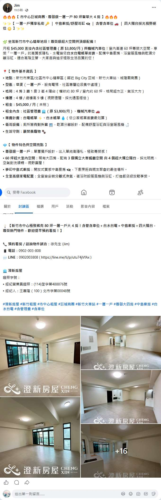 看原始刊登 → 查看貼文原文Jim 【 市中心巨城商圈 ‧ 尊御級一層一戶 80 坪奢華大 4 房 】 【 一層一戶獨享私密 ｜ 中島廚房/舒壓浴缸 ｜ 含管含車位 ｜ 四大陽台採光視野絕佳 】 坐落新竹市中心精華地段！尊榮級超大空間與頂級配備！ 月租 $45,000 直接內含社區管理費（原 $3,800/月）與機械汽車位！室內高達 60 坪尊榮大空間，享受「一層一戶」的高質感隱私，水電皆依台水台電帳單繳費。配備中島廚房、浴室暖風機與乾濕分離浴缸，適合高階主管、大家庭與追求極致生活品質的您！ 【 物件基本資訊 】 • 地點：新竹市東區/北區市中心精華區（鄰近 Big City 巨城、新竹火車站、城隍廟商圈） • 型態：華廈（一層一戶、設有電梯、社區專屬垃圾集中處理） • 格局：4 房 3 廳 1 廚 3 衛 4 陽台（權狀約 80 坪 / 室內約 60 坪，格局超方正、氣派大方） • 樓層：4 樓 / 總樓高 9 樓（視野遼闊、採光通風極佳） • 租金：$45,000 / 月（未稅） • 租金內含：社區管理費 （原 $3,800/月）、機械汽車位 • 雜費計費：台電帳單 、台水帳單 （依公家帳單繳費最划算） • 衛浴設備：廁所皆有對外窗 ，乾濕分離設計，配備舒壓浴缸與浴室暖風機 • 生活守則：嚴禁養寵物 【 物件特色與空間亮點 】 • 尊御級一層一戶：單層獨戶設計，出入單純高隱私，極致尊榮感！ • 60 坪超大室內空間：稀有大四房，配有 3 個獨立大客餐廳空間 與 4 個超大獨立陽台，採光明亮、空氣對流順暢，視野廣闊！ • 夢幻中島式廚房：開放式質感中島廚房 ，下廚烹飪與親友聚會的最佳場所。 • 全室高級家電配置：全室皆安裝分離式冷氣，衛浴附設暖風機與浴缸，打造飯店級放鬆享受。 【 黃金地段與生活機能 】 • 核心商圈環繞：緊鄰 Big City 巨城購物中心、新竹大遠百、城隍廟商圈、東門圓環與新竹市政府，食衣住行育樂一次滿足！ • 四通八達極速交通：近新竹火車站、新竹交流道，往返清大、交大與新竹科學園區（竹科）通勤便捷無比！ 【新竹市中心極致稀有 80 坪一層一戶大 4 房！含管含車位＋台水台電＋中島廚房＋四大陽台，尊榮熱門物件，歡迎提早預約看房！】 預約看房 / 諮詢物件請洽：徐先生 (Jim) 電話：0902-003-808 LINE：0902003808 ( ) 澄新房屋 證照字號： • 經紀營業員證照：(114)登字第488876號 • 經紀人：王嘉隆（100）北市字第00048號 #澄新房屋 #新竹租屋 #市中心租屋 #巨城商圈 #新竹火車站 #一層一戶 #尊御大四房 #中島廚房 #台水台電 #含管理費 #含車位 +16 送出第一則留言…… | 45,000 | 4房—廳3衛 超規格 | 4F | 3800 | 有 | 有 | 未提及 | FB 貼文 |
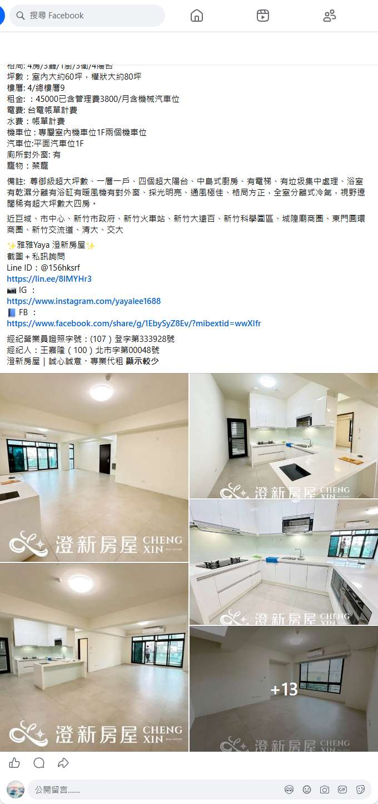 看原始刊登 → 查看貼文原文雅雅李 #可報稅 地點: 新竹市北區英明街 格局: 4房/3廳/1廚/3衛/4陽台 坪數：室內大約60坪，權狀大約80坪 樓層: 4/總樓層9 租金: ：45000已含管理費3800/月含機械汽車位 電費: 台電帳單計費 水費：帳單計費 機車位 : 專屬室內機車位1F兩個機車位 汽車位:平面汽車位1F 廁所對外窗: 有 寵物：禁寵 備註: 尊御級超大坪數、一層一戶、四個超大陽台、中島式廚房、有電梯、有垃圾集中處理、浴室有乾濕分離有浴缸有暖風機有對外窗、採光明亮、通風極佳、格局方正，全室分離式冷氣，視野遼闊稀有超大坪數大四房。 近巨城、市中心、新竹市政府、新竹火車站、新竹大遠百、新竹科學園區、城隍廟商圈、東門圓環商圈、新竹交流道、清大、交大 雅雅Yaya 澄新房屋 截圖＋私訊詢問 Line ID：@156hksrf IG ： FB ： 經紀營業員證照字號：(107）登字第333928號 經紀人：王嘉隆（100）北市字第00048號 澄新房屋｜誠心誠意・專業代租 顯示較少 +13 公開留言…… | 45,000 | 4房—廳3衛 超規格 | — | 3800 | 有 | 未註明 | 未提及 | FB 貼文 此物件未公開電話，請點標題到原網站聯絡 |
| 45,500 | 4房2廳2衛 超規格 | 14/14樓 | 未註明 | 有 | 未註明 | 未提及 | 此物件未公開電話，請點標題到原網站聯絡 | |
| 45,999 | 4房2廳2衛 超規格 | 16/23樓 | 未註明 | 有 | 未註明 | 未提及 | 此物件未公開電話，請點標題到原網站聯絡 | |
| 46,000 已下架(404) | 4房2廳2衛 超規格 | 7F/24F | 4,675元/月 | 有 | 有 | 未提及 | 仲介 張小姐 · 立城不動產有限公司 | |
 | 46,000 | 4房2廳2衛 超規格 | 18F/24F | 3,826元/月 | 有 | 有 | 未提及 | 仲介 王嘉晨 · 興築家不動產有限公司 |
| 46,000 已下架(404) | 4房2廳2衛 超規格 | 3F/24F | 4,233元/月 | 有 | 有 | 未提及 | 仲介 姜小姐 · 易澤居房屋有限公司 | |
| 46,000 | 4房2廳2衛 超規格 | 18F/23F | 3,826元/月 | 有 | 有 | 未提及 | 仲介 陳先生 · 興築家不動產經紀有限公司 | |
| 46,000 已下架(404) | 4房2廳3衛 超規格 | 3F/24F | 4,233元/月 | 有 | 有 | 未提及 | 仲介 詹先生 · 澄新房屋股份有限公司 | |
| 46,000 | 4房2廳2衛 超規格 | 20/25樓 | 未註明 | 有 | 未註明 | 未提及 | 此物件未公開電話，請點標題到原網站聯絡 | |
| 46,000 | 4房2廳2衛 超規格 | 7/24樓 | 未註明 | 有 | 未註明 | 未提及 | 此物件未公開電話，請點標題到原網站聯絡 | |
| 46,000 | 4房2廳2衛 超規格 | 3/24樓 | 未註明 | 有 | 未註明 | 未提及 | 此物件未公開電話，請點標題到原網站聯絡 | |
| 46,000 | 4房2廳2衛 超規格 | 18/24樓 | 未註明 | 有 | 未註明 | 未提及 | 此物件未公開電話，請點標題到原網站聯絡 | |
| 46,000 | 4房2廳2衛 超規格 | 12F/13F | 6,100元/月 | 有 | 有 | 未提及 | 仲介 楊小姐 · 格尚租賃管理實業社 | |
| 46,000 | 4房2廳2衛 超規格 | 12F/13F | 6,100元/月 | 有 | 有 | 未提及 | 仲介 楊小姐 · 格尚租賃管理實業社 | |
| 46,000 | 4房2廳3衛 超規格 | 13F/13F | 3,465元/月 | 有 | 有 | 不可 | 仲介 蔡辛蒂 · 展懿不動產經紀有限公司 | |
| 46,000 | 4房2廳3衛 超規格 | 13F/13F | 3,465元/月 | 有 | 有 | 未提及 | 仲介 姜先生 · 展懿不動產經紀有限公司 | |
| 47,000 | 4房2廳3衛 超規格 | 14F/23F | 4,800元/月 | 有 | 有 | 未提及 | 屋主 許小姐 | |
| 47,000 | 4房2廳3衛 超規格 | 14F/23F | 4,500元/月 | 有 | 有 | 未提及 | 仲介 賀先生 · 科園房屋 | |
| 48,000 已下架(404) | 4房2廳2衛 超規格 | 18F/24F | 4,526元/月 | 有 | 有 | 未提及 | 仲介 姜小姐 · 易澤居房屋有限公司 | |
| 48,000 已下架(404) | 4房2廳2衛 超規格 | 7F/24F | 4,555元/月 | 有 | 有 | 未提及 | 仲介 葉小姐 · 專業房屋租賃代管 | |
| 48,000 已下架(404) | 6房2廳7衛 超規格 | 1F~4F/4F | 未註明 | 有 | 有 | 未提及 | 仲介 劉小姐 · 勁富不動產有限公司 | |
| 50,000 | 4房3廳4衛 超規格 | 整棟/3F | 租金已含 | 有 | 有 | 未提及 | 仲介 張先生-新竹租屋公司 · 新竹房屋仲介 | |
| 50,000 | 6房2廳4衛 超規格 | 1F~4F/4F | 未註明 | 無 | 有 | 未提及 | 代理人 陳先生 | |
| 50,000 | 4房2廳2衛 超規格 | 6F/14F | 5,860元/月 | 有 | 有 | 未提及 | 仲介 曾先生 · 家樂仲介有限公司 | |
| 50,000 已下架 | 3房2廳3衛 超規格 | 1~4 / 4 | 另計(金額未公開) | 未註明 | 有 | 未提及 | ||
| 50,000 | 5房2廳2衛 超規格 | 2/8樓 | 2,307元 | 有 | 有 | 未提及 | ||
| 50,000 | 4房2廳2衛 超規格 | 10/24樓 | 未註明 | 有 | 未註明 | 未提及 | 此物件未公開電話，請點標題到原網站聯絡 | |
| 50,000 | 4房2廳2衛 超規格 | 18/24樓 | 未註明 | 有 | 未註明 | 未提及 | 此物件未公開電話，請點標題到原網站聯絡 | |
| 50,000 已下架(404) | 4房2廳5衛 超規格 | 1F~4F/4F | 無 | 無 | 有 | 未提及 | 仲介 姜小姐 · 易澤居房屋有限公司 | |
| 50,000 已下架(404) | 4房2廳2衛 超規格 | 8F/27F | 4,026元/月 | 有 | 有 | 未提及 | 仲介 竹科懿萱 · 仕新不動產仲介經紀有限公司 | |
| 50,000 | 31房2廳2衛 超規格 | 3F/14F | 無 | 有 | 有 | 未提及 | 仲介 姜小姐 · 易澤居房屋有限公司 | |
| 50,000 | 4房2廳3衛 超規格 | 整棟/4F | 3,000元/月 | 無 | 有 | 未提及 | 仲介 張先生 · 旭穩股份有限公司 | |
| 51,200 | 7房—廳4衛 超規格 | 整棟/3F | 未註明 | 無 | 有 | 未提及 | 仲介 戴小姐 · 興築家不動產有限公司 | |
| 51,200 | 7房—廳4衛 超規格 | 整棟/5F | 無 | 無 | 有 | 未提及 | 仲介 陳先生 · 興築家不動產經紀有限公司 | |
| 52,000 | 3房2廳3衛 超規格 | 8F/14F | 4,000元/月 | 有 | 有 | 未提及 | 仲介 張小姐 · 立城不動產有限公司 | |
 | 52,000 已下架(404) | 3房2廳3衛 超規格 | 8F/13F | 4,000元/月 | 有 | 有 | 未提及 | 仲介 夏小姐 · 沐家房屋有限公司 |
| 52,000 已下架(404) | 4房2廳3衛 超規格 | 整棟/4F | 3,000元/月 | 無 | 有 | 未提及 | 仲介 張先生 · 旭穩股份有限公司 | |
| 52,000 | 5房2廳2衛 超規格 | 1~2 / 2 | 無 | 未註明 | 未註明 | 未提及 | ||
| 52,000 | 5房—廳2衛 超規格 | 1~3 / 3 | 無 | 未註明 | 未註明 | 未提及 | ||
| 53,000 已下架(404) | 4房2廳4衛 超規格 | 整棟/3F | 未註明 | 無 | 有 | 未提及 | 仲介 吳小姐 · 大管家租賃住宅代管有限公司 | |
| 53,000 | 5房3廳4衛 超規格 | 整棟/5樓 | 未註明 | 未註明 | 未註明 | 未提及 | 此物件未公開電話，請點標題到原網站聯絡 | |
 | 55,000 | 4房2廳4衛 超規格 | 整棟/4F | 無 | 無 | 有 | 未提及 | 仲介 洪小姐 · 臻愛房屋企業社 |
| 56,000 | 4房2廳3衛 超規格 | 9/24樓 | 未註明 | 有 | 未註明 | 未提及 | 此物件未公開電話，請點標題到原網站聯絡 | |
 | 57,000 已下架(404) | 4房2廳3衛 超規格 | 14F/24F | 6,165元/月 | 有 | 有 | 未提及 | 仲介 葉小姐 · 專業房屋租賃代管 |
| 57,000 | 4房2廳3衛 超規格 | 12F/22F | 6,647元/月 | 有 | 有 | 未提及 | 仲介 范小姐 · 東洁房屋有限公司 | |
| 57,000 | 3房2廳3衛 超規格 | 12F/14F | 6,647元/月 | 有 | 有 | 未提及 | 仲介 賀先生 · 科園房屋 | |
| 58,000 | 4房2廳3衛 超規格 | 14/24樓 | 未註明 | 有 | 未註明 | 未提及 | 此物件未公開電話，請點標題到原網站聯絡 | |
| 59,800 | 3房2廳3衛 超規格 | 8/14樓 | 未註明 | 有 | 未註明 | 未提及 | 此物件未公開電話，請點標題到原網站聯絡 | |
| 60,000 已下架(404) | 4房2廳3衛 超規格 | 14F/24F | 5,000元/月 | 有 | 未註明 | 未提及 | 仲介 劉小姐 · 澄新房屋股份有限公司 | |
| 60,000 | 4房2廳2衛 超規格 | 1F~2F/2F | 無 | 無 | 有 | 未提及 | 仲介 唐小姐 · 晶天不動產仲介經紀有限公司 | |
| 60,000 | 3房3廳2衛 超規格 | 1~2 / 7 | 另計(金額未公開) | 未註明 | 未註明 | 未提及 | ||
| 60,000 | 6房2廳6衛 超規格 | 1~4 / 4 | 無 | 有 | 未註明 | 未提及 | ||
| 60,000 | 4房2廳2衛 超規格 | 13/28樓 | 未註明 | 有 | 未註明 | 未提及 | 此物件未公開電話，請點標題到原網站聯絡 | |
| 62,000 | 4房2廳3衛 超規格 | 18/24樓 | 未註明 | 有 | 未註明 | 未提及 | 此物件未公開電話，請點標題到原網站聯絡 | |
| 62,000 | 4房2廳2衛 超規格 | 18/24樓 | 未註明 | 有 | 未註明 | 未提及 | 此物件未公開電話，請點標題到原網站聯絡 | |
| 63,000 | 5房4廳4衛 超規格 | 1~2/14樓 | 未註明 | 有 | 未註明 | 未提及 | 此物件未公開電話，請點標題到原網站聯絡 | |
 | 63,000 已下架(404) | 5房2廳4衛 超規格 | 整棟/4F | 未註明 | 無 | 有 | 未提及 | 仲介 吳小姐 · 大管家租賃住宅代管有限公司 |
| 65,000 | 4房3廳4衛 超規格 | 1F~5F/5F | 未註明 | 有 | 有 | 未提及 | 仲介 葉女士 · 峊豐不動產有限公司 | |
| 65,000 | 4房2廳2衛 超規格 | 20F/24F | 4,675元/月 | 有 | 有 | 未提及 | 仲介 詹小姐 · 澄新房屋 | |
| 68,000 | 4房2廳2衛 超規格 | 20F/28F | 4,473元/月 | 有 | 有 | 未提及 | 仲介 吳先生 · 興傳家管理顧問有限公司 | |
| 68,000 | 4房2廳3衛 超規格 | 9F/28F | 8,250元/月 | 有 | 有 | 未提及 | 仲介 張小姐 · 立城不動產有限公司 | |
| 68,000 | 4房2廳2衛 超規格 | 11F/13F | 7,000元/月 | 有 | 有 | 未提及 | 仲介 駱先生-新竹租屋公司 · 新竹房屋仲介 | |
| 68,000 | 4房2廳2衛 超規格 | 11F/13F | 7,000元/月 | 有 | 有 | 未提及 | 仲介 洪先生 · 仕鑫不動產仲介經紀有限公司 | |
 | 70,000 已下架(404) | 4房2廳2衛 超規格 | 21F/28F | 5,263元/月 | 有 | 有 | 不可 | 仲介 楊先生 · 全球不動產經紀有限公司 |
| 70,000 已下架(404) | 4房2廳2衛 超規格 | 21F/28F | 5,263元/月 | 有 | 有 | 不可 | 仲介 徐先生 · 全球不動產 | |
| 70,000 | 4房2廳3衛 超規格 | 5F/25F | 8,756元/月 | 無 | 有 | 未提及 | 仲介 劉小姐 · 仕新不動產仲介經紀有限公司 | |
| 70,000 | 4房2廳3衛 超規格 | 5 / 25 | 另計(金額未公開) | 有 | 未註明 | 未提及 | ||
| 70,000 | 4房2廳3衛 超規格 | 5F/25F | 8,756元/月 | 有 | 有 | 未提及 | 仲介 張先生 · 仕心不動產仲介經紀股份有限公司 | |
| 75,000 已下架(404) | 4房2廳2衛 超規格 | 11F/13F | 無 | 有 | 有 | 未提及 | 仲介 洪先生 · 仕鑫不動產仲介經紀有限公司 | |
| 75,000 | 4房2廳2衛 超規格 | 11F/13F | 租金已含 | 有 | 有 | 未提及 | 仲介 駱先生-新竹租屋公司 · 新竹房屋仲介 | |
 | 75,000 | 4房2廳2衛 超規格 | 2F/13F | 租金已含 | 有 | 有 | 未提及 | 仲介 駱先生-新竹租屋公司 · 新竹房屋仲介 |
 | 75,000 | 4房2廳2衛 超規格 | 21F/28F | 5,000元/月 | 有 | 有 | 未提及 | 仲介 夏小姐 · 沐家房屋有限公司 |
| 75,000 已下架(404) | 4房2廳2衛 超規格 | 2F/13F | 租金已含 | 有 | 有 | 未提及 | 仲介 陳宗枬 · 大管家房屋管理家樂仲介有限公司 | |
 | 75,000 已下架(404) | 4房2廳2衛 超規格 | 11F/13F | 租金已含 | 有 | 有 | 未提及 | 仲介 鄧先生 · 家樂仲介有限公司 |
 | 80,000 | 4房2廳6衛 超規格 | 整棟/4F | 5,000元/月 | 無 | 有 | 未提及 | 仲介 吳小姐 · 大管家租賃住宅代管有限公司 |
| 80,000 | 5房2廳4衛 超規格 | 整棟/4F | 未註明 | 無 | 未註明 | 未提及 | 仲介 曾先生 · 家樂仲介有限公司 | |
| 85,000 | 5房2廳2衛 超規格 | 1~2 / 2 | 無 | 未註明 | 未註明 | 未提及 | ||
 | 90,000 已下架(404) | 4房2廳2衛 超規格 | 25F/28F | 7,000元/月 | 無 | 有 | 未提及 | 仲介 林小姐 · 好事多不動產 |
| 90,000 | 5房2廳2衛 超規格 | 1~2 / 2 | 無 | 未註明 | 未註明 | 未提及 | ||
| 90,000 | 4房3廳8衛 超規格 | 1~3 | 未註明 | 未註明 | 未註明 | 未提及 | 此物件未公開電話，請點標題到原網站聯絡 | |
| 98,000 | 4房2廳3衛 超規格 | -1~4 / 4 | 另計(金額未公開) | 未註明 | 有 | 未提及 | ||
| 113,658 | 4房2廳2衛 超規格 | 2 / 9 | 另計(金額未公開) | 有 | 有 | 未提及 | ||
| 120,000 已下架(404) | 5房2廳5衛 超規格 | 1F~6F/6F | 5,000元/月 | 有 | 有 | 未提及 | 仲介 楊小姐 · 澄新房屋 | |
| 120,000 已下架(404) | 5房2廳6衛 超規格 | 整棟/5F | 5,000元/月 | 無 | 有 | 未提及 | 仲介 蔡先生 · 澄新房屋股份有限公司 | |
 | 120,000 | 5房2廳6衛 超規格 | B1~5F/6F | 7,000元/月 | 有 | 有 | 未提及 | 仲介 阿轟 · 沐家房屋有限公司 |
| 120,000 | 5房2廳6衛 超規格 | 整棟/6F | 5,000元/月 | 無 | 有 | 未提及 | 仲介 王嘉晨 · 興築家不動產有限公司 | |
| 120,000 | 5房3廳6衛 超規格 | 整棟/2F | 5,000元/月 | 有 | 有 | 未提及 | 仲介 王先生 · 興築家不動產有限公司 | |
| 120,000 | 5房2廳6衛 超規格 | 整棟/5F | 5,000元/月 | 有 | 有 | 未提及 | 仲介 夏小姐 · 沐家房屋有限公司 | |
| 120,000 | 4房2廳4衛 超規格 | 整棟/3樓 | 未註明 | 未註明 | 未註明 | 未提及 | 此物件未公開電話，請點標題到原網站聯絡 | |
| 120,000 | 5房2廳6衛 超規格 | 整棟/6樓 | 未註明 | 未註明 | 未註明 | 未提及 | 此物件未公開電話，請點標題到原網站聯絡 | |
 | 120,000 已下架(404) | 5房2廳5衛 超規格 | B1~5F/6F | 5,000元/月 | 無 | 有 | 未提及 | 仲介 鄭先生 · 澄新房屋 |
| 120,000 | 5房2廳6衛 超規格 | B1~5F/5F | 5,000元/月 | 有 | 有 | 未提及 | 仲介 吳先生 · 沐家房屋有限公司 | |
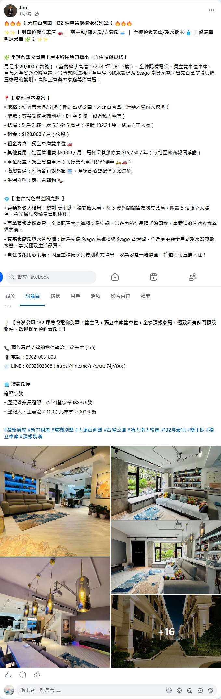 看原始刊登 → 查看貼文原文Jim 【 大遠百商圈 ‧ 132 坪尊榮獨棟電梯別墅 】 【 雙車位獨立車庫 ｜ 雙主臥/傭人房/五套房 ｜ 全棟頂級家電/淨水軟水 ｜ 綠意庭園採光佳 】 坐落台溪公園旁！屋主移民稀有釋出、自住頂級規格！ 月租 $120,000（含稅），室內權狀高達 132.24 坪（B1-5樓）。全棟配備電梯、獨立雙車位車庫，全套大金變頻冷暖空調、吊隱式除濕機、全戶淨水軟水設備及 Svago 廚藝家電，省去百萬裝潢與購置家電的繁瑣，高階主管與大家庭尊榮首選！ 【 物件基本資訊 】 • 地點：新竹市東區/南區（鄰近台溪公園、大遠百商圈、清華大學南大校區） • 型態：尊榮獨棟電梯別墅（B1 至 5 樓，設有私人電梯） • 格局：5 房 2 廳 1 廚 5.5 衛 5 陽台（權狀 132.24 坪，格局方正大氣） • 租金：$120,000 / 月（含稅） • 租金內含：獨立車庫雙車位 • 其他費用：社區管理費 $5,000 / 月；電梯保養維修費 $15,750 / 年（依社區廠商報價浮動） • 車位配置：獨立專屬車庫（可停雙汽車與多台機車 ） • 衛浴設備：廁所皆有對外窗 ，全棟衛浴皆配備免治馬桶 • 生活守則：嚴禁養寵物 【 物件特色與空間亮點 】 • 尊榮極致大格局：規劃 雙主臥、獨立傭人房，除 5 樓外間間皆為獨立套房，附設 5 個獨立大陽台，採光通風與綠意景觀極佳！ • 百萬頂級高檔家電：全棟配置大金變頻冷暖空調、米多力節能吊隱式除濕機、惠爾浦滾筒洗衣機與烘衣機。 • 豪宅級廚房與水質設備：廚房配備 Svago 洗碗機與 Svago 蒸烤爐，全戶更安裝全戶式淨水器與軟水機，享受極致生活品質。 • 自住等級用心裝潢：因屋主準備移民特別稀有釋出，家具家電一應俱全，拎包即可直接入住！ 【 黃金地段與生活機能 】 • 市中心優質綠意生活圈：出門即達台溪公園綠地，緊鄰新竹大遠百商圈與城隍廟，靜謐與便利兼具。 • 頂級文教與通勤機能：鄰近清華大學南大校區，往返新竹科學園區（竹科）與新竹火車站皆快速順暢！ 【台溪公園 132 坪尊榮電梯別墅！雙主臥＋獨立車庫雙車位＋全棟頂級家電，極致稀有熱門頂級物件，歡迎提早預約看房！】 預約看房 / 諮詢物件請洽：徐先生 (Jim) 電話：0902-003-808 LINE：0902003808 ( ) 澄新房屋 證照字號： • 經紀營業員證照：(114)登字第488876號 • 經紀人：王嘉隆（100）北市字第00048號 #澄新房屋 #新竹租屋 #電梯別墅 #大遠百商圈 #台溪公園 #清大南大校區 #132坪豪宅 #雙主臥 #獨立車庫 #頂級裝潢 +16 送出第一則留言…… | 120,000 | 5房2廳5衛 超規格 | 5F | 5000 | 未註明 | 未註明 | 未提及 | FB 貼文 |
| 150,000 | 5房3廳5衛 超規格 | B1/3F | 3,600元/月 | 有 | 有 | 未提及 | 仲介 范小姐 · 東洁房屋有限公司 | |
 | 150,000 | 6房3廳4衛 超規格 | 20F/21F | 9,500元/月 | 有 | 有 | 未提及 | 仲介 王嘉晨 · 興築家不動產有限公司 |
| 150,000 已下架(404) | 6房2廳3衛 超規格 | 21F/21F | 10,000元/月 | 有 | 有 | 未提及 | 仲介 吳小姐 · 大管家租賃住宅代管有限公司 | |
| 150,000 | 5房2廳4衛 超規格 | 20F/21F | 9,500元/月 | 有 | 有 | 未提及 | 仲介 張先生-新竹租屋公司 · 新竹房屋仲介 | |
| 150,000 | 6房3廳4衛 超規格 | 20/21樓 | 未註明 | 有 | 未註明 | 未提及 | 此物件未公開電話，請點標題到原網站聯絡 | |
| 150,000 | 6房3廳4衛 超規格 | 20~21/21樓 | 未註明 | 有 | 未註明 | 未提及 | 此物件未公開電話，請點標題到原網站聯絡 | |
| 150,000 | 6房3廳4衛 超規格 | 20~21/21樓 | 未註明 | 有 | 未註明 | 未提及 | 此物件未公開電話，請點標題到原網站聯絡 | |
| 150,000 | 5房2廳7衛 超規格 | B1/3F | 5,000元/月 | 有 | 有 | 未提及 | 仲介 范小姐 · 東洁房屋有限公司 | |
| 150,000 | 5房3廳4衛 超規格 | 20F~21F/21F | 12,025元/月 | 有 | 有 | 未提及 | 仲介 王小姐 · 展毅不動產經紀有限公司 | |
| 150,000 | 5房3廳4衛 超規格 | 20~21/21樓 | 未註明 | 有 | 未註明 | 未提及 | 此物件未公開電話，請點標題到原網站聯絡 | |
| 150,000 | 5房3廳4衛 超規格 | 20F~21F/21F | 12,025元/月 | 有 | 有 | 未提及 | 仲介 范小姐 · 展億不動產經紀有限公司 | |
| 230,000 價格異常 | 7房2廳7衛 超規格 | 整棟/6樓 | 未註明 | 未註明 | 未註明 | 未提及 | 此物件未公開電話，請點標題到原網站聯絡 | |
| 307,530 價格異常 | 10房2廳2衛 超規格 | 2/5樓 | 未註明 | 有 | 未註明 | 未提及 | 此物件未公開電話，請點標題到原網站聯絡 | |
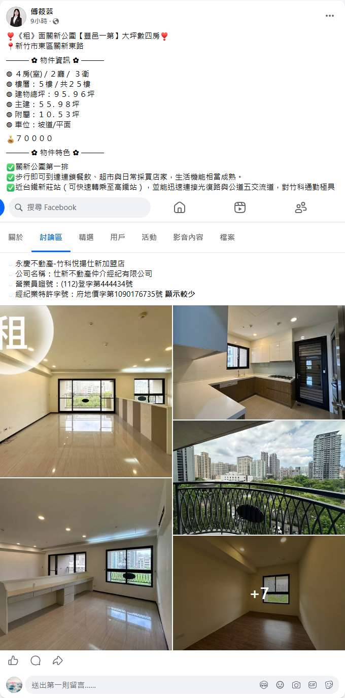 看原始刊登 → 查看貼文原文傅筱芸 《租》面關新公園【豐邑一第】大坪數四房 新竹市東區關新東路 ——— ✿ 物件資訊 ✿ ——— ◍ ４房(室) / ２廳 / ３衛 ◍ 樓層：５樓 / 共２５樓 ◍ 建物總坪：９５. ９６坪 ◍ 主建：５５. ９８坪 ◍ 附屬：１０. ５３坪 ◍ 車位：坡道/平面 ——— ✿ 物件特色 ✿ ——— 關新公園第一排 步行即可到達連鎖餐飲、超市與日常採買店家，生活機能相當成熟。 近台鐵新莊站（可快速轉乘至高鐵站），並能迅速連接光復路與公道五交流道，對竹科通勤極具優勢 ╭┈┈┈┈┈┈┈┈┈┈┈┈┈┈┈┈┈┈╮ 傅筱芸 ０９３０-１９１-５２６ 搜尋手機號碼+ 🅻 🅸 🅽 🅴 索取詳資 ╰┈┈┈┈┈┈┈┈┈┈┈┈┈┈┈┈┈┈╯ 永慶不動產-竹科悅揚仕新加盟店 公司名稱：仕新不動產仲介經紀有限公司 營業員證號：(112)登字第444434號 經紀業特許字號：府地價字第1090176735號 顯示較少 +7 送出第一則留言…… | — HTTP 400 | 4房—廳3衛 超規格 | 5F | 未註明 | 未註明 | 未註明 | 未提及 | FB 貼文 |
| 5,000 價格異常 | 6房1廳6衛 差一點 | 1 / 3 | 無 | 未註明 | 未註明 | 未提及 | ||
| 9,000 | 2房—廳2衛 差一點 | 1F/1F | 未註明 | 無 | 未註明 | 未提及 | 屋主 高太太 | |
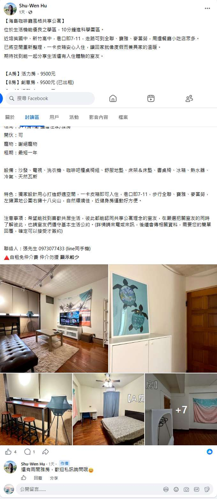 看原始刊登 → 查看貼文原文Shu-Wen Hu 【海島咖啡廳風格共享公寓】 位於生活機能優良之學區，10分鐘進科學園區。 近培英國中、新竹高中，巷口即7-11，走路可到全聯、寶雅、麥當勞，周邊餐廳小吃店眾多。 已將空間重新整理，一卡皮箱安心入住，讓回家就像度假而兼具家的溫暖。 期待找到能一起分享生活還有入住體驗的室友。 ⠀⠀⠀⠀⠀⠀⠀⠀⠀⠀⠀⠀⠀⠀⠀⠀⠀⠀⠀⠀⠀⠀⠀⠀⠀⠀⠀⠀ 【A房】活力房，9500元 【B房】創意房，9500元 (已出租) 【C房】溫馨房，9200元 ⠀⠀⠀⠀⠀⠀⠀⠀⠀⠀⠀⠀⠀⠀⠀⠀⠀⠀⠀⠀⠀⠀⠀⠀⠀⠀⠀⠀ 地址：新竹市學府路 樓層：公寓4樓 格局：3+1房1衛 整層住家/雅房 開伙：可 寵物：謝絕寵物 租期：最短一年 ⠀⠀⠀⠀⠀⠀⠀⠀⠀⠀⠀⠀⠀⠀⠀⠀⠀⠀⠀⠀⠀⠀⠀⠀⠀⠀⠀⠀ 設備：沙發、電視、洗衣機、咖啡吧檯桌椅組、舒服地墊、床架＆床墊、書桌椅、冰箱、熱水器、冷氣、天然瓦斯 ⠀⠀⠀⠀⠀⠀⠀⠀⠀⠀⠀⠀⠀⠀⠀⠀⠀⠀⠀⠀⠀⠀⠀⠀⠀⠀⠀⠀ 特色：獨家設計用心打造舒適空間，一卡皮箱即可入住，巷口即7-11，步行全聯、寶雅、麥當勞，左擁濕地公園右擁十八尖山，自然環境佳，近健身房運動好方便。 ⠀⠀⠀⠀⠀⠀⠀⠀⠀⠀⠀⠀⠀⠀⠀⠀⠀⠀⠀⠀⠀⠀⠀⠀⠀⠀⠀⠀ 注意事項：希望能找到喜歡共居生活，彼此都能認同共享公寓理念的室友，在嚴選把關室友的同時了解彼此，也請室友們遵守基本生活公約。(詳情請來電或來訊，後續會傳相關資料，需要您的簡單回覆，確定可以接受才簽約) ⠀⠀⠀⠀⠀⠀⠀⠀⠀⠀⠀⠀⠀⠀⠀⠀⠀⠀⠀⠀⠀⠀⠀⠀⠀⠀⠀⠀ 聯絡人：張先生 0973077433 (line同手機) 自租免仲介費 仲介勿擾 顯示較少 +7 Shu-Wen Hu 作者 還有兩間雅房，歡迎私訊詢問哦 回覆 公開留言…… | 9,500 HTTP 400 | 3房—廳1衛 差一點 | 4F | 未註明 | 未註明 | 未註明 | 未提及 | FB 貼文 |
| 14,500 | 3房2廳1衛 差一點 | 4F/5F | 無 | 無 | 未註明 | 未提及 | 仲介 kelly · 勁富不動產 | |
| 15,000 已下架(404) | 3房1廳2衛 差一點 | 2F/7F | 1,200元/月 | 有 | 未註明 | 未提及 | 仲介 吳先生 · 沁淇股份有限公司 | |
| 15,000 | 4房2廳1衛 差一點 | 2F/4F | 未註明 | 無 | 有 | 未提及 | 仲介 江先生 · 陞寶開發有限公司 | |
 | 16,000 | 2房2廳2衛 差一點 | 8F/11F | 租金已含 | 有 | 未註明 | 未提及 | 仲介 黃小姐 · 新築不動產開發有限公司 |
| 16,000 | 3房1廳2衛 差一點 | 9F/11F | 租金已含 | 有 | 無 | 不可 | 仲介 周先生 · 興龍不動產有限公司 | |
| 18,000 | 4房1廳2衛 差一點 | 1 / 3 | 無 | 未註明 | 有 | 未提及 | ||
 | 18,000 | 3房2廳1衛 差一點 | 2F/5F | 100元/月 | 無 | 未註明 | 未提及 | 仲介 彭曉凡 · 浩宇地產有限公司 |
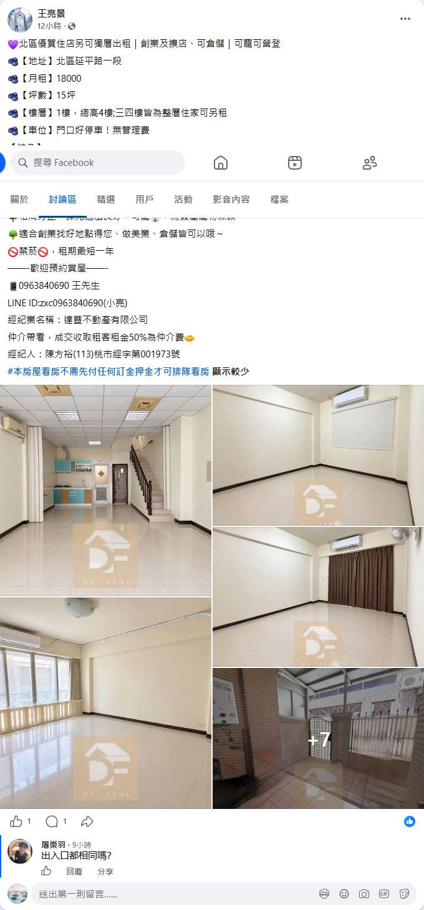 看原始刊登 → 查看貼文原文王亮景 北區優質住店另可獨層出租｜創業及擴店、可倉儲｜可寵可營登 【地址】北區延平路一段 【月租】18000 【坪數】15坪 【樓層】1樓，總高4樓;三四樓皆為整層住家可另租 【車位】門口好停車！無管理費 【特色】 方案一:單租一樓店面$18000，方案二:3-4樓三房一衛一陽台$14000。全租$26000 住店真的划算又放心！甜甜價 另二樓是屋主自己開的日文教室，小朋友有興趣也可以報名 格局方正、採光通風良好，可寵 ，需簽屬寵物條款 適合創業找好地點得您、做美業、倉儲皆可以哦～ 禁菸 ，租期最短一年 ——-歡迎預約賞屋——- 0963840690 王先生 LINE ID:zxc0963840690(小亮) 經紀業名稱：達豐不動產有限公司 仲介帶看，成交收取租客租金50%為仲介費 經紀人：陳方裕(113)桃市經字第001973號 #本房屋看房不需先付任何訂金押金才可排隊看房 顯示較少 +7 屠崇羽 出入口都相同嗎？ 回覆 送出第一則留言…… | 18,000 HTTP 400 | 3房—廳1衛 差一點 | 1F | 未註明 | 未註明 | 未註明 | 未提及 | FB 貼文 |
| 20,000 已下架(404) | 3房2廳1衛 差一點 | 2F/5F | 未註明 | 無 | 未註明 | 未提及 | 仲介 徐小姐 · 日茪寓房屋有限公司 | |
 | 20,000 | 3房2廳1衛 差一點 | 4F/4F | 無 | 無 | 未註明 | 未提及 | 仲介 邱先生 · 景裕地產事業有限公司 |
| 20,000 已下架(404) | 3房2廳1衛 差一點 | 2F/4F | 未註明 | 無 | 未註明 | 未提及 | 代理人 呂小姐 | |
| 20,000 | 3房2廳1衛 差一點 | 4/4樓 | 未註明 | 未註明 | 未註明 | 未提及 | 此物件未公開電話，請點標題到原網站聯絡 | |
 | 20,000 | 2房2廳2衛 差一點 | 1F~2F/2F | 未註明 | 無 | 有 | 未提及 | 仲介 梁先生 · 千宅不動產經紀公司 |
| 20,000 已下架(404) | 3房2廳1衛 差一點 | 1F/5F | 未註明 | 無 | 未註明 | 未提及 | 仲介 鄭先生 · 言昇築不動產仲介有限公司 | |
| 21,000 | 4房2廳1衛 差一點 | 頂層加蓋/5F | 租金已含 | 有 | 未註明 | 未提及 | 仲介 鄭小姐 · 大管家租賃住宅代管有限公司 | |
| 22,000 已下架(404) | 3房1廳2衛 差一點 | 1F/5F | 無 | 無 | 有 | 未提及 | 屋主 張小姐 | |
 | 22,000 已下架(404) | 4房1廳2衛 差一點 | 2F/12F | 1,200元/月 | 有 | 未註明 | 未提及 | 仲介 吳小姐 · 大管家租賃住宅代管有限公司 |
| 23,000 已下架(404) | 3房2廳1衛 差一點 | 2F/5F | 未註明 | 無 | 未註明 | 未提及 | 仲介 古小姐 · 家樂仲介有限公司 | |
| 23,000 已下架(404) | 3房2廳1衛 差一點 | 4F/4F | 租金已含 | 無 | 未註明 | 未提及 | 屋主 李小姐 | |
| 23,000 | 3房2廳1衛 差一點 | 2F/5F | 無 | 無 | 未註明 | 未提及 | 仲介 吳先生 · 家樂仲介有限公司 | |
| 23,000 已下架(404) | 3房2廳1衛 差一點 | 1F/5F | 租金已含 | 無 | 未註明 | 未提及 | 仲介 吳先生 · 家樂仲介有限公司 | |
無照片 | 23,000 已下架(404) | 3房2廳1衛 差一點 | 4F/5F | 租金已含 | 有 | 未註明 | 可 | 仲介 駱先生-新竹租屋公司 · 新竹房屋仲介 |
 | 23,000 已下架(404) | 3房2廳1衛 差一點 | 1F/5F | 450元/月 | 無 | 未註明 | 未提及 | 仲介 古小姐 · 家樂仲介有限公司 |
| 23,000 已下架(404) | 3房2廳1衛 差一點 | 2F/10F | 1,900元/月 | 有 | 有 | 未提及 | 仲介 陳小姐 · 城閱不動產經紀有限公司 | |
| 23,000 已下架(404) | 3房2廳1衛 差一點 | 2F/5F | 無 | 無 | 有 | 未提及 | 仲介 莊小姐 · 勁富不動產 | |
| 23,000 已下架(404) | 3房1廳2衛 差一點 | 4F/7F | 無 | 有 | 有 | 未提及 | 仲介 傅先生 · 康厝有限公司 | |
| 23,000 | 2房2廳2衛 差一點 | 2F/5F | 200元/月 | 無 | 未註明 | 未提及 | 仲介 李小姐 · 業務 | |
| 23,000 | 2房2廳2衛 差一點 | 整棟/2F | 未註明 | 無 | 未註明 | 未提及 | 仲介 曾先生 · 家樂仲介有限公司 | |
| 23,000 已下架(404) | 3房2廳1衛 差一點 | 2F/4F | 無 | 無 | 未註明 | 未提及 | 仲介 張先生 · 鑫聚點不動產有限公司 | |
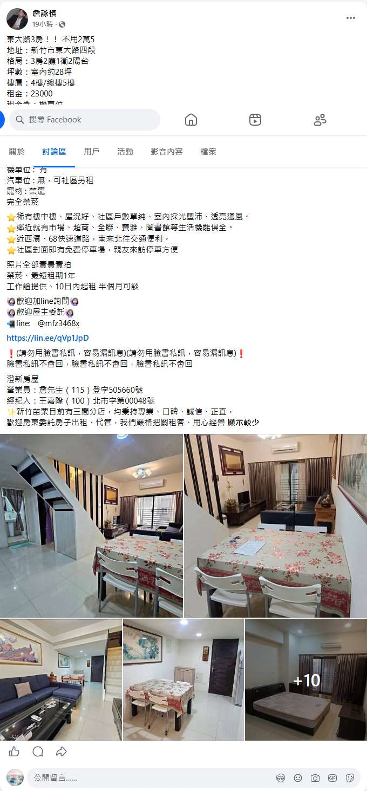 看原始刊登 → 查看貼文原文詹詠棋 東大路3房！！ 不用2萬5 地址：新竹市東大路四段 格局：3房2廳1衛2陽台 坪數：室內約28坪 樓層：4樓/總樓5樓 租金：23000 租金含：機車位 管理費：內含 電費：台電帳單 水費：台水帳單 天然氣: 天然氣帳單 電梯：有 機車位 : 有 汽車位 : 無，可社區另租 寵物 : 禁寵 完全禁菸 稀有樓中樓、屋況好、社區戶數單純、室內採光豐沛、透亮通風。 鄰近就有市場、超商、全聯、寶雅、圖書館等生活機能俱全。 近西濱、68快速道路，南來北往交通便利。 社區對面即有免費停車場，親友來訪停車方便 照片全部實景實拍 禁菸、最短租期1年 工作證提供、10日內起租 半個月可談 歡迎加line詢問 歡迎屋主委託 line: @mfz3468x (請勿用臉書私訊，容易漏訊息)(請勿用臉書私訊，容易漏訊息) 臉書私訊不會回，臉書私訊不會回，臉書私訊不會回 澄新房屋 營業員：詹先生（115）登字505660號 經紀人：王嘉隆（100）北市字第00048號 新竹苗栗目前有三間分店，均秉持專業、口碑、誠信、正直， 歡迎房東委託房子出租、代管，我們嚴格把關租客、用心經營 顯示較少 +10 公開留言…… | 23,000 | 3房—廳1衛 差一點 | 4F | 含 | 未註明 | 未註明 | 未提及 | FB 貼文 此物件未公開電話，請點標題到原網站聯絡 |
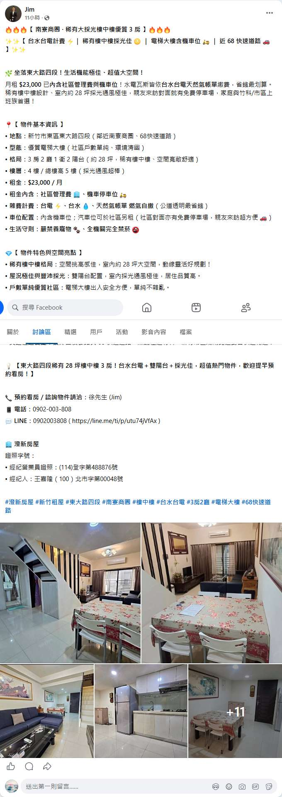 看原始刊登 → 查看貼文原文Jim 【 南寮商圈 ‧ 稀有大採光樓中樓優質 3 房 】 【 台水台電計費 ｜ 稀有樓中樓採光佳 ｜ 電梯大樓含機車位 ｜ 近 68 快速道路 】 坐落東大路四段！生活機能極佳、超值大空間！ 月租 $23,000 已內含社區管理費與機車位！水電瓦斯皆依台水台電天然氣帳單繳費，省錢最划算。稀有樓中樓設計、室內約 28 坪採光通風極佳，親友來訪對面就有免費停車場，家庭與竹科/市區上班族首選！ 【 物件基本資訊 】 • 地點：新竹市東區東大路四段（鄰近南寮商圈、68快速道路） • 型態：優質電梯大樓（社區戶數單純、環境清幽） • 格局：3 房 2 廳 1 衛 2 陽台（約 28 坪，稀有樓中樓、空間寬敞舒適） • 樓層：4 樓 / 總樓高 5 樓（採光通風超棒） • 租金：$23,000 / 月 • 租金內含：社區管理費 、機車停車位 • 雜費計費：台電 、台水 、天然氣帳單 燃氣自繳（公道透明最省錢） • 車位配置：內含機車位；汽車位可於社區另租（社區對面亦有免費停車場，親友來訪超方便 ） • 生活守則：嚴禁養寵物 、全機關完全禁菸 【 物件特色與空間亮點 】 • 稀有樓中樓格局：空間挑高感佳，室內約 28 坪大空間，動線靈活好規劃！ • 屋況極佳與豐沛採光：雙陽台配置，室內採光通風極佳，居住品質高。 • 戶數單純優質社區：電梯大樓出入安全方便，單純不雜亂。 【 黃金地段與生活機能 】 • 生活機能一應俱全：鄰近在地市場、便利商店、全聯福利中心、寶雅 POYA 及圖書館，日常採買超便利！ • 交通極速便捷：緊鄰西濱公路與 68 快速道路，無論往返竹科、新竹市區或南北通勤皆快速暢通！ 【東大路四段稀有 28 坪樓中樓 3 房！台水台電＋雙陽台＋採光佳，超值熱門物件，歡迎提早預約看房！】 預約看房 / 諮詢物件請洽：徐先生 (Jim) 電話：0902-003-808 LINE：0902003808 ( ) 澄新房屋 證照字號： • 經紀營業員證照：(114)登字第488876號 • 經紀人：王嘉隆（100）北市字第00048號 #澄新房屋 #新竹租屋 #東大路四段 #南寮商圈 #樓中樓 #台水台電 #3房2廳 #電梯大樓 #68快速道路 +11 送出第一則留言…… | 23,000 | 3房—廳1衛 差一點 | 4F | 未註明 | 有 | 未註明 | 未提及 | FB 貼文 |
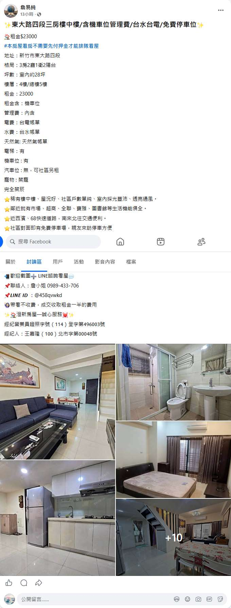 看原始刊登 → 查看貼文原文詹易純 東大路四段三房樓中樓/含機車位管理費/台水台電/免費停車位 租金$23000 #本房屋看房不需要先付押金才能排隊看屋 地址：新竹市東大路四段 格局：3房2廳1衛2陽台 坪數：室內約28坪 樓層：4樓/總樓5樓 租金：23000 租金含：機車位 管理費：內含 電費：台電帳單 水費：台水帳單 天然氣: 天然氣帳單 電梯：有 機車位 : 有 汽車位 : 無，可社區另租 寵物 : 禁寵 完全禁菸 稀有樓中樓、屋況好、社區戶數單純、室內採光豐沛、透亮通風。 鄰近就有市場、超商、全聯、寶雅、圖書館等生活機能俱全。 近西濱、68快速道路，南來北往交通便利。 社區對面即有免費停車場，親友來訪停車方便 ————————————————————— 本物件需十天內起租 最短租期為一年 ————————————————————— 歡迎截圖 𝖫𝖨𝖭𝖤諮詢看屋 聯絡人：詹小姐 0989-433-706 𝙇𝙄𝙉𝙀 𝙄𝘿 ：@458qvwkd 帶看不收費，成交收取租金一半的費用 澄新房屋—誠心服務 經紀營業員證照字號（𝟣𝟣𝟦）登字第𝟦𝟫𝟨𝟢𝟢𝟥號 經紀人：王嘉隆（𝟣𝟢𝟢）北市字第𝟢𝟢𝟢𝟦𝟪號 +10 公開留言…… | 23,000 HTTP 400 | 3房—廳1衛 差一點 | 4F | 含 | 未註明 | 未註明 | 未提及 | FB 貼文 |
 | 24,000 | 3房2廳1衛 差一點 | 3F/4F | 無 | 無 | 未註明 | 未提及 | 仲介 徐先生 · 冠國不動產 |
| 24,000 已下架(404) | 4房1廳2衛 差一點 | 2F/12F | 1,200元/月 | 有 | 未註明 | 未提及 | 仲介 吳小姐 · 大管家租賃住宅代管有限公司 |
| 24,000 已下架(404) | 3房2廳1衛 差一點 | 4F/4F | 未註明 | 無 | 未註明 | 未提及 | 仲介 蔡林先生 · 澄新房屋 | |
| 24,000 已下架(404) | 3房1廳2衛 差一點 | 2F/6F | 200元/月 | 無 | 未註明 | 未提及 | 代理人 張先生 | |
| 24,000 | 3房2廳1衛 差一點 | 4F/4F | 無 | 無 | 未註明 | 未提及 | 仲介 曹小姐 · 澄新房屋 | |
| 24,000 已下架(404) | 3房2廳1衛 差一點 | 1F/4F | 租金已含 | 有 | 未註明 | 未提及 | 仲介 蔡先生 · 澄新房屋 | |
| 24,000 已下架(404) | 3房1廳2衛 差一點 | 1F/4F | 未註明 | 無 | 未註明 | 未提及 | 屋主 鍾小姐 | |
| 25,000 已下架(404) | 3房2廳1衛 差一點 | 1F/3F | 無 | 無 | 未註明 | 未提及 | 仲介 邱先生 · 宥德不動產仲介經紀有限公司 | |
| 25,000 已下架(404) | 3房1廳2衛 差一點 | 5F/5F | 1,000元/月 | 有 | 未註明 | 未提及 | 屋主 彭女士 | |
 | 25,000 | 3房2廳1衛 差一點 | 2F/5F | 無 | 無 | 未註明 | 未提及 | 仲介 洪小姐 · 日茪寓房屋有限公司 |
| 25,000 已下架(404) | 3房1廳2衛 差一點 | 4F/9F | 租金已含 | 有 | 有 | 未提及 | 代理人 孫先生 | |
| 25,000 | 3房2廳1衛 差一點 | 4F/5F | 無 | 無 | 未註明 | 未提及 | 屋主 黃家琪 | |
無照片 看原始刊登 → 查看貼文原文陳捷宥 【新竹學府路｜3房二樓公寓｜月租2.5萬】 地點｜新竹市學府路441巷 類型｜公寓 格局｜3房2廳1衛1陽台 坪數｜約20坪 樓層｜2樓 / 5樓 租金｜25000元/月 水電瓦斯｜依帳單自繳 特色亮點： － 溫潤木質地板，居住質感提升 － 空間方正好規劃，適合家庭或合租 － 二樓免爬高，生活便利 － 變頻冷氣三台 生活機能超強 － 近交流道，通勤便利 － 鄰近大全聯、巨城商圈，採買娛樂一次到位 － 近北新竹車站，交通無縫接軌 － 假日花市，休閒放鬆好去處 － 鄰近竹科，上班族首選 － 走路2分鐘到東園國小，學區優勢 租賃條件 需提供工作證 最短租期一年 兩押一租 成交收取服務費（半個月租金） ☞☞ 看房聯繫 陳捷宥 手機 Line ID: marco9628 其它房源連結=> ———————————————— 代租代管買賣｜房東/屋主委託歡迎洽詢 同步招募業務夥伴，彈性高、資源共享！ 日茪寓房屋有限公司 營 業 員 ：(112)登字第438681號 租賃管理證號：(112)登字第015905號 經 紀 人 ：(114)中市經紀字第02263號 府地價字第1140160709號 +6 | 25,000 HTTP 400 | 3房—廳1衛 差一點 | 2F/5F | 未註明 | 未註明 | 未註明 | 未提及 | FB 貼文 此物件未公開電話，請點標題到原網站聯絡 |
| 25,800 已下架 | 2房2廳2衛 差一點 | 2 / 6 | 無 | 有 | 有 | 未提及 | ||
| 25,800 | 2房2廳2衛 差一點 | 2F/6F | 租金已含 | 有 | 有 | 未提及 | 仲介 唐小姐 · 晶天不動產仲介經紀有限公司 | |
 | 26,000 | 3房2廳1衛 差一點 | 1F/5F | 無 | 無 | 未註明 | 未提及 | 仲介 傅先生 · 大新竹地產開發有限公司 |
| 26,000 | 3房2廳1衛 差一點 | 9/10樓 | 未註明 | 有 | 未註明 | 未提及 | 此物件未公開電話，請點標題到原網站聯絡 | |
| 26,000 | 2房2廳2衛 差一點 | 3F/5F | 無 | 有 | 未註明 | 未提及 | 仲介 陳先生 · 富程不動產經紀有限公司 | |
| 26,500 已下架(404) | 3房1廳2衛 差一點 | 1F~2F/6F | 未註明 | 無 | 未註明 | 未提及 | 仲介 鍾先生 · 聚鑫企業社好市家房屋 | |
| 27,000 已下架(404) | 4房1廳2衛 差一點 | 4F/5F | 無 | 無 | 未註明 | 未提及 | 仲介 鄭先生 · 租事大喆物業租貸管理顧問 | |
 | 27,000 | 3房2廳1衛 差一點 | 1F/8F | 2,000元/月 | 有 | 有 | 未提及 | 仲介 鄭先生 · 租事大喆物業租貸管理顧問 |
| 27,000 已下架(404) | 3房1廳2衛 差一點 | 1F~2F/6F | 未註明 | 無 | 未註明 | 未提及 | 仲介 鍾先生 · 聚鑫企業社好市家房屋 | |
| 28,000 已下架(404) | 3房1廳2衛 差一點 | 1F~2F/6F | 未註明 | 無 | 未註明 | 未提及 | 仲介 鍾先生 · 聚鑫企業社好市家房屋 | |
| 28,000 已下架(404) | 3房1廳2衛 差一點 | 2F/5F | 無 | 無 | 未註明 | 未提及 | 屋主 黃先生 | |
| 28,000 | 3房1廳2衛 差一點 | 12F/12F | 840元/月 | 有 | 未註明 | 未提及 | 代理人 郭先生 | |
| 28,000 | 2房2廳2衛 差一點 | 1F/5F | 未註明 | 無 | 未註明 | 未提及 | 仲介 吳先生 · 陞豐開發有限公司 | |
| 28,500 | 2房2廳2衛 差一點 | 7F/9F | 租金已含 | 無 | 未註明 | 未提及 | 仲介 劉小姐 · 眾軒有限公司 | |
| 28,500 | 2房2廳2衛 差一點 | 8F/9F | 租金已含 | 有 | 有 | 未提及 | 仲介 劉小姐 · 不動產經紀業及租貨住宅服務業 | |
| 28,500 已下架(404) | 2房2廳2衛 差一點 | 5F/5F | 租金已含 | 有 | 有 | 未提及 | 仲介 曾小姐 · 言昇築不動產仲介有限公司 | |
| 28,900 已下架(404) | 3房2廳1衛 差一點 | 13F/14F | 租金已含 | 有 | 有 | 未提及 | 屋主 張小姐 | |
| 28,900 | 3房2廳1衛 差一點 | 13/14樓 | 未註明 | 有 | 有 | 未提及 | ||
| 29,000 已下架(404) | 4房1廳4衛 差一點 | 2F/7F | 1,600元/月 | 有 | 未註明 | 未提及 | 仲介 林先生 · 科園房屋 | |
| 30,000 已下架(404) | 5房1廳3衛 差一點 | 整棟/3F | 無 | 無 | 未註明 | 可 | 仲介 楊先生 · 全球不動產經紀有限公司 | |
| 30,000 已下架(404) | 3房1廳2衛 差一點 | 1F/13F | 租金已含 | 有 | 有 | 未提及 | 仲介 陳小姐 · 大管家租賃住宅代管有限公司 | |
| 30,000 已下架(404) | 5房1廳6衛 差一點 | 整棟/4F | 未註明 | 無 | 未註明 | 可 | 仲介 楊小姐 · 大管家租賃住宅代管有限公司 | |
| 30,000 | 3房2廳1衛 差一點 | 6 / 7 | 另計(金額未公開) | 有 | 有 | 未提及 | ||
| 30,000 已下架(404) | 3房1廳2衛 差一點 | 2F/7F | 1,200元/月 | 有 | 未註明 | 未提及 | 仲介 吳先生 · 沁淇股份有限公司 | |
| 30,000 | 2房2廳3衛 差一點 | 整棟/4F | 未註明 | 無 | 有 | 未提及 | 仲介 朱先生 · 大管家租賃住宅代管有限公司 | |
| 32,000 已下架 | 2房2廳2衛 差一點 | 8 / 13 | 無 | 有 | 未註明 | 未提及 | ||
 | 32,000 | 2房2廳2衛 差一點 | 1F/5F | 租金已含 | 無 | 未註明 | 未提及 | 仲介 陳先生 · 陞豐開發有限公司 |
| 33,000 已下架(404) | 3房1廳2衛 差一點 | 2F/7F | 1,200元/月 | 有 | 未註明 | 未提及 | 仲介 吳先生 · 沁淇股份有限公司 | |
| 33,000 | 2房2廳2衛 差一點 | 3/9樓 | 未註明 | 有 | 未註明 | 未提及 | 此物件未公開電話，請點標題到原網站聯絡 | |
| 33,000 已下架(404) | 2房2廳2衛 差一點 | 2F/2F | 租金已含 | 有 | 有 | 未提及 | 仲介 楊先生 · 成幸開發有限公司 | |
| 34,000 | 2房2廳2衛 差一點 | 12/13樓 | 未註明 | 有 | 未註明 | 未提及 | 此物件未公開電話，請點標題到原網站聯絡 | |
| 35,000 | 2房2廳2衛 差一點 | 11 / 16 | 無 | 有 | 未註明 | 未提及 | ||
| 35,000 | 2房2廳2衛 差一點 | 20F/20F | 2,958元/月 | 有 | 有 | 不可 | 仲介 方立德 · 大仁開發有限公司 | |
 | 37,000 已下架(404) | 2房2廳2衛 差一點 | 2F/9F | 3,000元/月 | 有 | 有 | 未提及 | 代理人 廖小姐 |
| 38,000 | 2房2廳2衛 差一點 | 12/14樓 | 未註明 | 有 | 未註明 | 未提及 | 此物件未公開電話，請點標題到原網站聯絡 | |
| 40,000 | 2房3廳2衛 差一點 | 1~2 / 2 | 無 | 未註明 | 未註明 | 未提及 | ||
| 40,000 | 2房2廳2衛 差一點 | 2/9樓 | 未註明 | 有 | 未註明 | 未提及 | 此物件未公開電話，請點標題到原網站聯絡 | |
| 40,000 | 3房1廳2衛 差一點 | 18/24樓 | 未註明 | 有 | 未註明 | 未提及 | 此物件未公開電話，請點標題到原網站聯絡 | |
 看原始刊登 → 同一物件另有 16 筆刊登（不同仲介）
| 40,000 已下架(404) | 2房2廳2衛 差一點 | 2F/9F | 3,000元/月 | 有 | 有 | 未提及 | 仲介 蔡先生 · 澄新房屋 |
 | 40,000 已下架(404) | 2房2廳2衛 差一點 | 2F/9F | 3,000元/月 | 有 | 有 | 未提及 | 仲介 鍾先生 · 澄新房屋股份有限公司 |
看原始刊登 → 查看貼文原文包租公祥爺 +13 包租公祥爺 【竹科關新生活圈｜2+1房大露台｜精裝配備｜公司行號可租】 地點：竹科／關新公園／新莊車站／好市多 類型：電梯大樓 格局：2+1房／2廳／2衛／1陽台＋1露台 坪數：約30坪 樓層：2樓／總9樓 電梯：有 租金：40,000元／月 管理費：3,000元／月 租金含：機械汽車位、機車位 汽車位：1個1F（社區可另租第二車位） 機車位：1個1F 寵物：禁寵 衛浴：對外窗 —— 大露台＋2+1房｜空間機能一次到位 室內約30坪，規劃2+1房，另有專屬大露台，空間寬敞舒適，可作為書房、工作室或多功能空間。 屋內家具家電完整，配置冷氣、2台電視、2組床組、獨立筒床墊、沙發、餐桌椅、冰箱、洗碗機及洗衣機，可直接入住。 完整廚房機能 明火 抽油煙機 洗碗機 冰箱 衛浴舒適升級 浴缸 乾濕分離 衛浴抽風／暖風四合一 對外窗 社區管理完善 管理員白天代收包裹 垃圾集中處理 一層6戶、2部電梯 可公司行號承租 竹科核心生活圈 鄰近竹科、關新公園、新莊車站、好市多，兼具科技園區通勤便利與完整生活機能。 2+1房＋大露台＋完整家具家電＋車位 適合家庭、企業主管及公司行號入住。 禁菸 禁寵 歡迎預約賞屋 營業員：113年登字464212號 澄新不動產有限公司 經紀人王志盛（112）新北經字第004530號 仲介出租 成交收取一次租金50%服務費 ：0932271599 鍾先生 Line ID：＠852yyeml 物件菜單在IG : 粉絲專頁 感謝平台 也歡迎詢問各式房型 物件眾多絕對有心儀的 #竹北租屋 #新竹租房 #新竹 #竹北 #店面出租 顯示較少 送出第一則留言…… | 40,000 | 2房—廳2衛 差一點 | 2F | 3000元 | 有 | 未註明 | 未提及 | FB 貼文 |
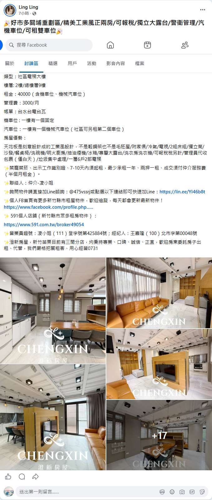 看原始刊登 → 查看貼文原文Ling Ling 好市多關埔重劃區/精美工業風正兩房/可報稅/獨立大露台/警衛管理/汽機車位/可租雙車位 地址：新竹市東區關新東路 地點：竹科/關新公園/新莊車站/好市多 格局: 2房/ 2廳/ 2衛/ 1陽台+1露台（樓中樓） 坪數：30坪 類型：社區電梯大樓 樓層: 2樓/總樓層9樓 租金：40000（含機車位、機械汽車位） 管理費：3000/月 帳單：台水台電台瓦 機車位 : 一樓有一個固定 汽車位：一樓有一個機械汽車位（社區可另租第二個車位） 房屋優勢： 天花板是刻意設計成的工業風設計，不是輕鋼架也不是毛胚屋/附家俱/冷氣/電視/2組床組/獨立筒/沙發/餐桌椅/洗碗機/明火廚房/抽油煙機/冰箱/專屬大露台/洗衣房洗衣機/可報稅稅另計/管理員代收包裹（僅白天）/垃圾集中處理/一層6戶2部電梯 禁寵禁菸、出示工作識別證、7-10天內須起租，最少承租一年、兩押一租、成交須付仲介服務費（半個月租金）。 聯絡人：仲介-凌小姐 詢問物件請直接加Line諮詢：@475vssrj或點選以下連結即可快速加Line： 個人FB首頁有更多新竹縣市租屋物件，歡迎追蹤，每天都會更新最新物件！ 591個人店鋪（新竹縣市眾多租房物件）： 營業員證號：凌小姐（111）登字號第425884號；經紀人：王嘉隆（100）北市字第00048號 澄新房屋，新竹苗栗目前有三間分店，均秉持專業、口碑、誠信、正直，歡迎房東委託房子出租、代管，我們嚴格把關租客、用心經營0731 +17 送出第一則留言…… 同一物件另有 1 筆刊登（不同仲介） | 40,000 | 2房—廳2衛 差一點 | 2F | 3000 | 有 | 未註明 | 未提及 | FB 貼文 此物件未公開電話，請點標題到原網站聯絡 |
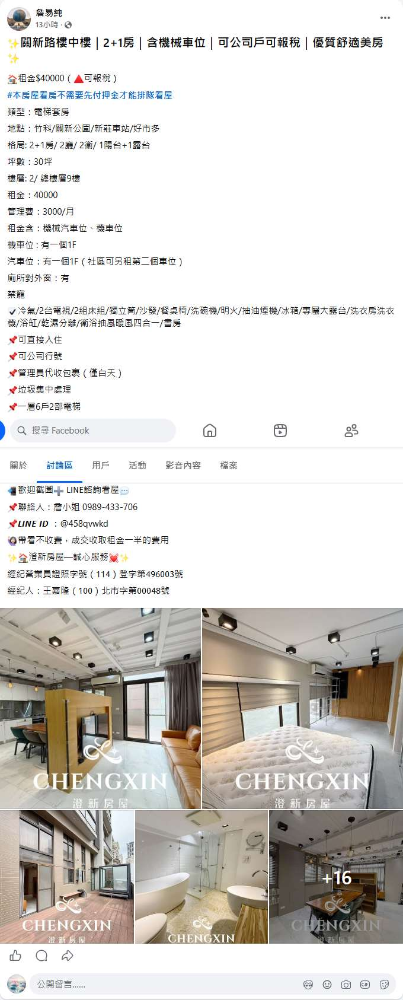 看原始刊登 → 查看貼文原文詹易純 關新路樓中樓｜2+1房｜含機械車位｜可公司戶可報稅｜優質舒適美房 租金$40000（ 可報稅） #本房屋看房不需要先付押金才能排隊看屋 類型：電梯套房 地點：竹科/關新公園/新莊車站/好市多 格局: 2+1房/ 2廳/ 2衛/ 1陽台+1露台 坪數：30坪 樓層: 2/ 總樓層9樓 租金：40000 管理費：3000/月 租金含：機械汽車位、機車位 機車位 : 有一個1F 汽車位：有一個1F（社區可另租第二個車位） 廁所對外窗：有 禁寵 冷氣/2台電視/2組床組/獨立筒/沙發/餐桌椅/洗碗機/明火/抽油煙機/冰箱/專屬大露台/洗衣房洗衣機/浴缸/乾濕分離/衛浴抽風暖風四合一/書房 可直接入住 可公司行號 管理員代收包裹（僅白天） 垃圾集中處理 一層6戶2部電梯 ————————————————————— 本物件需十天內起租 最短租期為一年 ————————————————————— 歡迎截圖 𝖫𝖨𝖭𝖤諮詢看屋 聯絡人：詹小姐 0989-433-706 𝙇𝙄𝙉𝙀 𝙄𝘿 ：@458qvwkd 帶看不收費，成交收取租金一半的費用 澄新房屋—誠心服務 經紀營業員證照字號（𝟣𝟣𝟦）登字第𝟦𝟫𝟨𝟢𝟢𝟥號 經紀人：王嘉隆（𝟣𝟢𝟢）北市字第𝟢𝟢𝟢𝟦𝟪號 +16 公開留言…… | 40,000 HTTP 400 | 2房—廳2衛 差一點 | 9F | 3000 | 未註明 | 有 | 未提及 | FB 貼文 |
| 41,000 | 2房2廳2衛 差一點 | 13/27樓 | 未註明 | 有 | 未註明 | 未提及 | 此物件未公開電話，請點標題到原網站聯絡 | |
| 41,000 | 2房2廳2衛 差一點 | 13F/27F | 租金已含 | 有 | 有 | 未提及 | 仲介 張小姐 · 立城不動產有限公司 | |
| 41,000 已下架(404) | 2房2廳2衛 差一點 | 13F/27F | 租金已含 | 有 | 有 | 未提及 | 仲介 劉小姐 · 達豐不動產仲介經紀業 | |
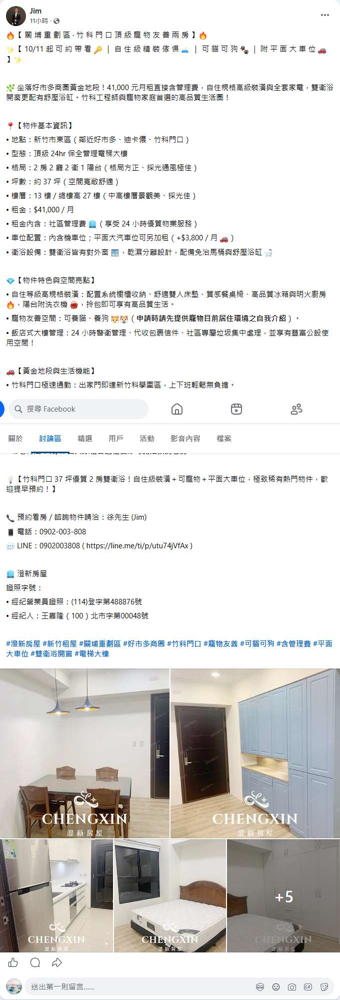 看原始刊登 → 查看貼文原文Jim 【 關 埔 重 劃 區 ‧ 竹 科 門 口 頂 級 寵 物 友 善 兩 房 】 【 10/11 起 可 約 帶 看 ｜ 自 住 級 精 裝 傢 俱 ｜ 可 貓 可 狗 ｜ 附 平 面 大 車 位 】 坐落好市多商圈黃金地段！41,000 元月租直接含管理費，自住規格高級裝潢與全套家電，雙衛浴開窗更配有舒壓浴缸。竹科工程師與寵物家庭首選的高品質生活圈！ 【物件基本資訊】 • 地點：新竹市東區（鄰近好市多、迪卡儂、竹科門口） • 型態：頂級 24hr 保全管理電梯大樓 • 格局：2 房 2 廳 2 衛 1 陽台（格局方正、採光通風極佳） • 坪數：約 37 坪（空間寬敞舒適） • 樓層：13 樓 / 總樓高 27 樓（中高樓層景觀美、採光佳） • 租金：$41,000 / 月 • 租金內含：社區管理費 （享受 24 小時優質物業服務） • 車位配置：內含機車位；平面大汽車位可另加租（+$3,800 / 月 ） • 衛浴設備：雙衛浴皆有對外窗 ，乾濕分離設計，配備免治馬桶與舒壓浴缸 【物件特色與空間亮點】 • 自住等級高規格裝潢：配置系統櫥櫃收納、舒適雙人床墊、質感餐桌椅、高品質冰箱與明火廚房 ，陽台附洗衣機 ，拎包即可享有高品質生活。 • 寵物友善空間：可養貓、養狗 （申請時請先提供寵物目前居住環境之自我介紹）。 • 飯店式大樓管理：24 小時警衛管理、代收包裹信件、社區專屬垃圾集中處理，並享有豐富公設使用空間！ 【黃金地段與生活機能】 • 竹科門口極速通勤：出家門即達新竹科學園區，上下班輕鬆無負擔。 • 好市多頂級商圈：步行可達 Costco 好市多、迪卡儂、全聯福利中心與星巴克 ，周邊生活機能極其豐富便利！ 【重要提醒】 • 帶看時間：10/11 當天原租客退租後即可開始預約看房。 【竹科門口 37 坪優質 2 房雙衛浴！自住級裝潢＋可寵物＋平面大車位，極致稀有熱門物件，歡迎提早預約！】 預約看房 / 諮詢物件請洽：徐先生 (Jim) 電話：0902-003-808 LINE：0902003808 ( ) 澄新房屋 證照字號： • 經紀營業員證照：(114)登字第488876號 • 經紀人：王嘉隆（100）北市字第00048號 #澄新房屋 #新竹租屋 #關埔重劃區 #好市多商圈 #竹科門口 #寵物友善 #可貓可狗 #含管理費 #平面大車位 #雙衛浴開窗 #電梯大樓 +5 送出第一則留言…… | 41,000 | 2房—廳2衛 差一點 | 13F | — | 有 | 未註明 | 未提及 | FB 貼文 |
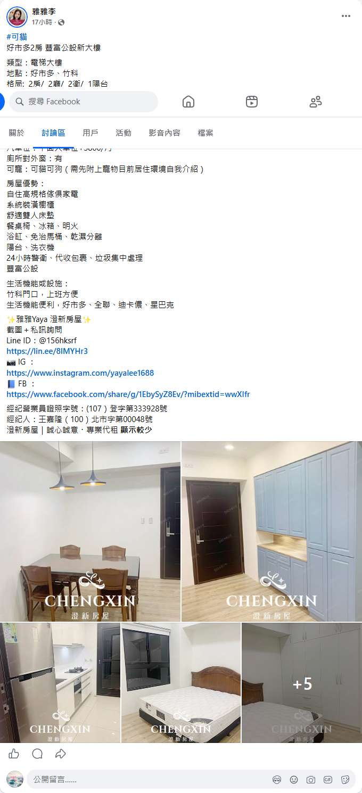 看原始刊登 → 查看貼文原文雅雅李 #可貓 好市多2房 豐富公設新大樓 類型：電梯大樓 地點：好市多、竹科 格局: 2房/ 2廳/ 2衛/ 1陽台 坪數：37坪 樓層: 13 / 總樓層27樓 租金：41000 租金含：管理費 機車位 : 有 汽車位：平面大車位+3800/月 廁所對外窗：有 可寵：可貓可狗（需先附上寵物目前居住環境自我介紹） 房屋優勢： 自住高規格傢俱家電 系統裝潢櫥櫃 舒適雙人床墊 餐桌椅、冰箱、明火 浴缸、免治馬桶、乾濕分離 陽台、洗衣機 24小時警衛、代收包裹、垃圾集中處理 豐富公設 生活機能或設施： 竹科門口，上班方便 生活機能便利，好市多、全聯、迪卡儂、星巴克 雅雅Yaya 澄新房屋 截圖＋私訊詢問 Line ID：@156hksrf IG ： FB ： 經紀營業員證照字號：(107）登字第333928號 經紀人：王嘉隆（100）北市字第00048號 澄新房屋｜誠心誠意・專業代租 顯示較少 +5 公開留言…… | 41,000 | 2房—廳2衛 差一點 | 27F | 未註明 | 有 | 未註明 | 未提及 | FB 貼文 此物件未公開電話，請點標題到原網站聯絡 |
| 45,000 | 2房2廳2衛 差一點 | 18/27樓 | 未註明 | 有 | 未註明 | 未提及 | 此物件未公開電話，請點標題到原網站聯絡 | |
| 45,000 | 2房2廳2衛 差一點 | 18F/27F | 2,280元/月 | 有 | 有 | 未提及 | 仲介 陳先生 · 興築家不動產有限公司 | |
| 45,000 已下架(404) | 2房—廳2衛 差一點 | 6F/8F | 3,630元/月 | 有 | 未註明 | 未提及 | 仲介 徐小姐 · 日茪寓房屋有限公司 | |
| 49,800 | 2房2廳2衛 差一點 | 1/2樓 | 未註明 | 未註明 | 未註明 | 未提及 | 此物件未公開電話，請點標題到原網站聯絡 | |
| 52,000 | 2房2廳2衛 差一點 | 10/23樓 | 未註明 | 有 | 未註明 | 未提及 | 此物件未公開電話，請點標題到原網站聯絡 | |
| 55,000 | 2房2廳2衛 差一點 | 21/21樓 | 未註明 | 有 | 未註明 | 未提及 | 此物件未公開電話，請點標題到原網站聯絡 | |
| 60,000 | 4房1廳3衛 差一點 | 1~2 / 2 | 無 | 未註明 | 未註明 | 未提及 | ||
| 75,000 已下架 | 2房2廳3衛 差一點 | -1 / 10 | 另計(金額未公開) | 有 | 未註明 | 未提及 | ||
| 90,000 | 2房—廳2衛 差一點 | 1 / 14 | 另計(金額未公開) | 有 | 未註明 | 未提及 | ||
| 120,000 | 5房1廳6衛 差一點 | 1~5/5樓 | 未註明 | 未註明 | 未註明 | 未提及 | 此物件未公開電話，請點標題到原網站聯絡 | |
| 180,000 價格異常 | 7房2廳1衛 差一點 | 2 / 13 | 無 | 有 | 未註明 | 未提及 | ||
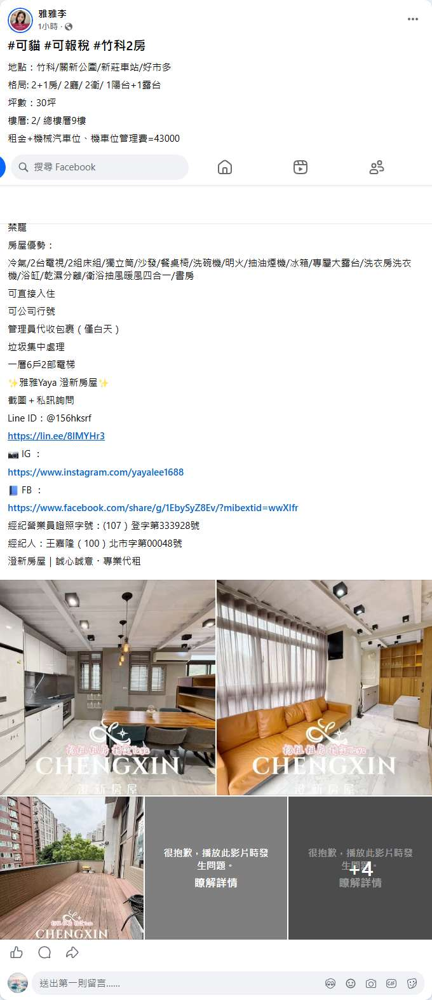 看原始刊登 → 查看貼文原文雅雅李 #可貓 #可報稅 #竹科2房 地點：竹科/關新公園/新莊車站/好市多 格局: 2+1房/ 2廳/ 2衛/ 1陽台+1露台 坪數：30坪 樓層: 2/ 總樓層9樓 租金+機械汽車位、機車位管理費=43000 （簽長約誠意者可談） 機車位 : 有一個1F 汽車位：有一個1F機械車位（社區可另租第二個車位） 廁所對外窗：有 禁寵 房屋優勢： 冷氣/2台電視/2組床組/獨立筒/沙發/餐桌椅/洗碗機/明火/抽油煙機/冰箱/專屬大露台/洗衣房洗衣機/浴缸/乾濕分離/衛浴抽風暖風四合一/書房 可直接入住 可公司行號 管理員代收包裹（僅白天） 垃圾集中處理 一層6戶2部電梯 雅雅Yaya 澄新房屋 截圖＋私訊詢問 Line ID：@156hksrf IG ： FB ： 經紀營業員證照字號：(107）登字第333928號 經紀人：王嘉隆（100）北市字第00048號 澄新房屋｜誠心誠意・專業代租 很抱歉，播放此影片時發生問題。 瞭解詳情 很抱歉，播放此影片時發生問題。 瞭解詳情 +4 送出第一則留言…… | — | 2房—廳2衛 差一點 | 9F | 43000 | 未註明 | 有 | 未提及 | FB 貼文 此物件未公開電話，請點標題到原網站聯絡 |
| 25,000 已下架(404) | 2房1廳2衛 不符 | 4F/9F | 租金已含 | 有 | 有 | 未提及 | 代理人 孫先生 | |
| 28,000 | 2房1廳3衛 不符 | 1~3 / 3 | 未註明 | 未註明 | 未註明 | 未提及 | ||
| 150,000 | 2房0廳5衛 不符 | -1~4 / 4 | 未註明 | 未註明 | 未註明 | 未提及 |


目前的條件沒有符合的物件，放寬一點再試試。